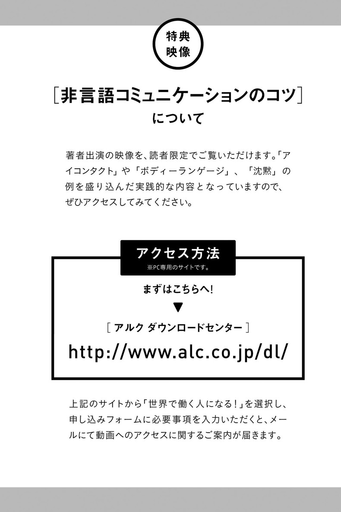
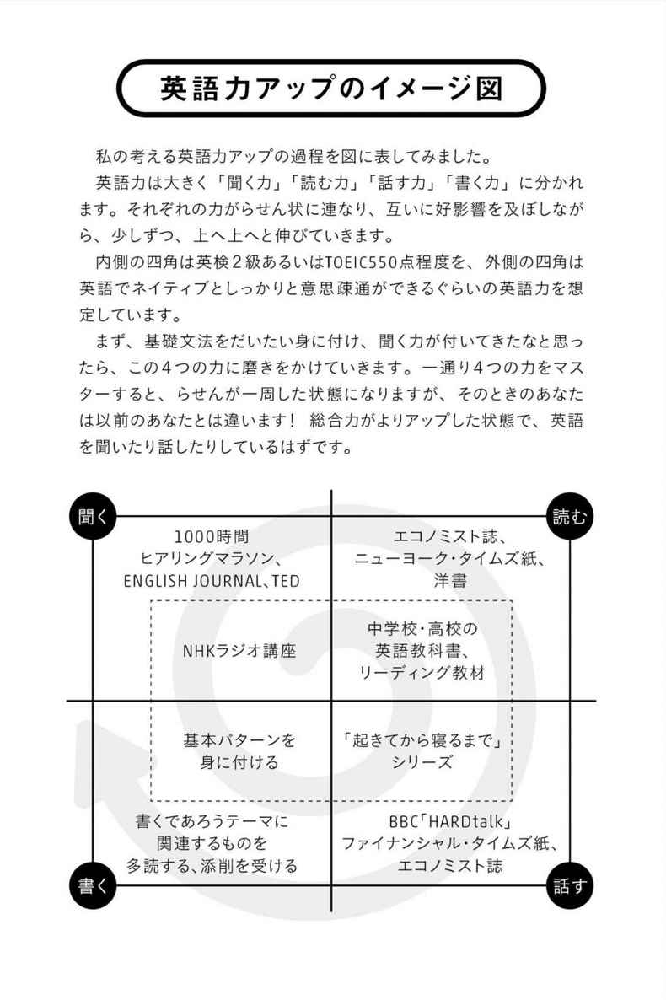

| 世界で働く人になる！ [人づきあいと英語のスキルを劇的に上げる41の方法] アルク はたらく×英語シリーズ | |
| 田島麻衣子 | |
| (2014) | |
はじめに
本書のタイトルでもある「世界で働く人」と聞いて、皆さんはどのようなイメージがわくでしょうか。
「帰国子女で、流ちょうに英語を操る人」
「自信にあふれていて、はっきり自己主張ができる人」
「エネルギッシュで外向的な人」
何だか、異次元に住む人々のような気分がしてきたのは、私だけでしょうか。もし、これが「世界で働く人」のイメージだとすれば、私たちとは関係のない、ごく一部の特別な人の話のように思えてきます。しかし、実際に世界を舞台に働いている人が、次のような人だったら、どうでしょうか。
「日本生まれの日本育ちで、持ち前のガッツと、効果的な学習法によって、ネイティブ・スピーカーと互角に闘う英語力を手に入れた人」
「自分としっかり向き合い、緊張をコントロールしながら、人前で自分の意見を述べようと努力している人」
「状況に応じて自分を演じ分けるコツを知っている人」
私は、日本で生まれ育ち、大学三年生のときに、初めて海外で学ぶチャンスを得ました。日本を拠点に数年働いた後、イギリスでの大学院時代を経て、二〇〇六年より国連機関に勤務しています。
これまで、過去七カ国に住み、六〇カ国以上の国籍の人々と仕事をする中で、さまざまな人々に出会うチャンスに恵まれました。彼らを見ていて、一つ学んだことがあります。
それは、世界を舞台にビジネスで活躍する人は、「そうありたいと強く願う気持ち」を持ち、「コツを踏まえた、意味のある努力」をしているということです。生まれながらの特別な素質のおかげではなく、むしろ日々の努力の積み重ねが、彼らを形作っているのだと思います。
本書は、日本人が世界で働くために役立つ、人づきあいの力と英語力を磨くヒントをまとめたものです。私の実体験をもとに、効果が見込める「四一のコツ」をご紹介しています。
ここで、あらためて「世界で働く」ことについて考えてみましょう。
「世界で働く」ということには、二つの特長があるように思います。まず、仕事場が世界ということは、地球上のどこにいても、世界を舞台に働けるということを意味します。つまり、日本にいながらにして、世界とつながり、働くことができるということです。
また、世界で働くということは、さまざまな国籍、出身の人と働くということでもあります。この本では、私が今まで出会った人々から学んだ、どこでも、誰とでも気持ち良く仕事を進めていける方法をご紹介します。外国人と同じ職場で働いている人や、海外の取引先など、外国人との人づきあいがある人はもちろんのこと、これから海外で働いてみたいと思っている人の参考になると思います。もしかしたら、意外と日本人同士の人づきあいにも、効果があるかもしれません。
本書は五章構成になっています。
第一章では、「日本人の強み」を生かして働くことについてお話しします。日本人にとってはごく普通で一般的なことが、世界の中では実は非常に強みになることであったりします。日本人としての「素材の良さ」を生かしながら、どこでも、誰とでも気持ち良く働くコツを見ていきましょう。
第二章では、世界を舞台に活躍する人々の共通点について述べています。私が今まで出会った各国の大使、ジャーナリスト、世界中の起業家、教育者、指揮者など、多彩な顔ぶれを念頭に置きつつ、彼らが活躍する秘密を探りました。職業も国籍も性別もバラバラ、一見共通点が見いだすのが難しそうですが、観察しているうちに、一七の共通点を見つけることができました。そんな彼らの行動様式や考え方から、私たちは何を学ぶことができるでしょうか。
第三章では、言葉を超えたコミュニケーション力を鍛えるヒントを集めています。アイコンタクトやボディーランゲージは、時に言葉を超えた表現力を持ちます。バックグラウンドが異なる人々と、誤解なく上手にコミュニケーションするために、明日から試せるコツを多数収めました。
第四章では、ゼロから最短距離で英語力を身に付ける方法についてお話します。自分自身の英語学習を振り返り、実際に効果があった英語学習法を分野別にお伝えします。また、日本人が注意したい英語学習のワナについても、併せて述べています。
第五章では、「英語で話す力」を伸ばすヒントをまとめました。聞き手に印象を残す話し方を身に付ければ、あなたの活躍の場は確実に広がります。主に、英語でのプレゼンテーションやスピーチのコツ、会議での上手な発言方法について扱っています。
この本を通じて、世界を舞台に、仕事でより一層輝こうとする人の助けになれば幸いです。
二〇一四年 一二月 田島 麻衣子
もくじ
世界で働く人になる！
人づきあいと英語のスキルを劇的に上げる41の方法
特典映像 ［非言語コミュニケーションのコツ］について
「日本人の強み」はどこにある？
新幹線が、外資系ホテルの広告に登場？／アフリカ、ラオス、イタリア......時間に対する概念の違い／時間を守れる日本人は、信頼される
「日本人とは、仕事がしやすい」／静かにコツコツ、堅実に仕事する
もめごとを避けたい日本人／攻撃的な自己主張に対する、日本人の反応／日本人の強みとしての「協調性」／世界に通じるプロジェクトの進め方
ＯＥＣＤ生徒の学習到達度調査によれば......／簡単な計算もできない!?／国民全体が高い基礎学力を持つことの意味
列を乱さず待つ日本人の姿に感銘／「日本人は礼儀正しい」を英語にすると？
日本の文房具が大人気／イタリア人がわざわざ日本製のかばんを探している！／日本人の作るパワーポイントの資料は見やすく、分かりやすい
フランス製の弁当箱？／タッパーがゴロゴロ出てくる、ランチ風景／こまごま分類する日本人／トランクはどう詰める？／日本には整理整頓のためのセミナーまである!?
こんなものは、アメリカにはない！／道案内も、家電製品も「細やか」で「丁寧」／多種多様な注意書き／事務作業でも見られる、日本人の細やかさ、丁寧さ
食堂の店員さんの「おもてなし」に、心が和む／日本人の本領発揮
①上下関係にとらわれ過ぎない／②下手に自分を低めない／③日本人だけで常に固まらない／④問題は一人で抱え込まない／⑤ステレオタイプを当てはめない／⑥人と違うことを恐れない／⑦安易にイエスと言わない、分からないままにしない
今日から取り入れられる！／日本にいても、世界を舞台に輝ける
マニュアル＋αの何か／印象に残る話し手／見えない価値があるからこそ、耳を傾ける
愛嬌の正体とは？／嫌われる勇気
パーティーの達人たちの戦略／主体的に顔を使い分ける
人の縁はどう転がるか分からないもの
誰とでも対話できる能力／どんな場でも自然に振る舞う
どの文化にも共通する感情表現がある／相手の感情をどう受け止めるか／上手に仕事を進めるために
仕事上の問題と人格は別／先輩の笑顔にハッとする
自己肯定感が高いからこそ、目の前の仕事に集中できる／独り言とガッツポーズと瞑想が効果的!?／パートナーや家族を大切にする
明るさを漂わせる人は成功する／深みのある朗らかさ
「他人と同じ」がいい日本社会／違っていることは自然なこと
日本語のニュースだけを見ていると......／世界レベルの知見を手に入れる
同僚のイギリス人の意外な一言／あえて直感を信じてみる
考え抜かれた装いをする／同じシャツとジャケットでも......／服に語らせる「メッセージ」
運動は、精神的なリフレッシュにも役立つ／運動を習慣付けるコツ
エネルギーの使い方のコツ／舞台から降りれば「普通の人」──指揮者ダニエル・バレンボイム／メリハリが大事
外国に住むときに必要なもの／毎日毎日、米を食べ続けてうんざり？／違う文化を楽しもう
「日本人」のままでいいんだ！／アイデンティティーを持ってこそ、しっかり立てる／多角的な理解とは／静かなプライドとは
非言語コミュニケーションとは／無意識だからこそ注意を払いたい／「文化」という言葉について
日本人はアイコンタクトが苦手／アイコンタクトは「郷に入っては郷に従え」／目を合わせてにっこり、ただしあまり見つめ過ぎない／会議中にも使えるアイコンタクトの技
感情をストレートに表現するのをためらう日本人／「怒り」に対する対応の違い／「言わなくても察してほしい」はＮＧ！／日本人が犯しがちな過ち、「愛想笑い」
お辞儀するタイプのあいさつは、世界でも珍しい／ヨーロッパ、アメリカ、オーストラリアの「あいさつの基本」／あいさつの仕方には注意を／あいさつも「郷に入っては郷に従え」
パーソナル・スペースが広い文化圏／パーソナル・スペースが狭い文化圏／スキンシップが大活躍するラテン語圏
世界共通のボディーランゲージ／文化圏で差が出るボディーランゲージ／日本人は、ボディーランゲージのここに気を配ろう／社会階層間に生じる差をうまく利用する
沈黙が恐ろしいアメリカ人、沈黙が美徳になり得る日本人／沈黙に対する捉え方の違い／「表現しなくては伝わらない」ことを肝に銘じておく／沈黙を利用したテクニック
各文化圏の行動パターンに慣れる／場面に合わせた対応で人間関係をスムーズに
最初のハードルはやはり「英語」だった／英語を身に付けるのに、特別な才能は必要ない！／最短距離で英語をマスターする／英語力アップのイメージ図
文法漬けだった高校時代への後悔
なぜ「聞く力」から身に付けるべきなのか／いきなり「エリートクラス」に放り込まれた！／「英語地獄」から逃れるべきか悩む日々／寝る直前にひたすら聞く／さらに「聞く力」を鍛える、効果的な六つの学習ポイント／実際に役立った「聞く力」が付く教材
「読む力」は「聞く力」と並行して伸ばす／読み方には二つのレベルがある／「読む力」を鍛える、効果的な学習ポイント──繰り返し読むレベルの場合／「読む力」を鍛える、効果的な学習ポイント──多読レベルの場合／実際に役立った「読む力」が付く教材
話すために必要な力／日常会話は「英語のストック」をいかに蓄積するかが勝負／自分の発音、アクセントに自信を持とう／大人に効果的な、発音の訓練方法／上級ビジネス英会話は、確実に使う語彙から攻める！／実際に役立った「話す力」が付く教材
なぜ「書く」ことが最後の難関なのか／「書く力」は一歩一歩、着実に伸ばす／実際に役立った「書く力」が付く教材
①速効性を強調する教材につい手が伸びてしまう／②全てを完全に、完璧にこなしたい／③「作業」で自己満足してしまう／④英会話教室に通うことで、安心しきってしまう／⑤「テストの点数＝自分の実力」と信じ込む／⑥いつまでも日本語に訳してしまう
英語で話すためのコツとは？
上手になるには数をこなすこと！／欧米では、大学や職場で徹底的に学ぶ／大きな話から入る構成に／覚えていられるのはせいぜい三点／英語でパブリックスピーチする際に気を付けたいこと／上級者へのヒント
最長三分で何を伝えるか？／短い時間で相手に共感させるには
英語での会議を考えると朝からナーバス......／改善すべき点はメンタルにあり！／発言の仕方にもコツがある／発言のタイミングは、最初か最後が狙い目／論点をまとめ、それに乗せて意見を発信

「日本人の強み」はどこにある？
日本の外に出てみると、自分たちが思っている以上に、海外の人たちが日本に関心を持ってくれていることに気付かされます。
初対面の人に日本人であることを伝えると、相手の顔が輝き、興味レベルが上がるのではないかとすら、感じることがあります。そして、彼らはいかに和食に興味を持っているかについて熱く語ったり、日本を以前訪問した際の思い出話を始めたりします。
これまで私は、七つの国で、さまざまな国籍の人々と仕事をしてきて、日本人であることの強みは確かに存在すると思うようになりました。日本に生まれ育ったそのままの状態で、十分に世界の人々から驚かれ、感動される要素、あるいは共に仕事したいと思わせる能力や資質を、私たちはすでに持ち合わせています。「え、こんなことが？」と思われる部分もあるかもしれませんが、実はそれが素晴らしい価値となる場合があるのです。
世界で働く日本人に関する議論を見ていると、日本人の足りない部分につい焦点が当たりがちです。この章では、私が海外に住んでいるからこそ見えてきた、世界を舞台に働くときに有利に働く「日本人の強み」について考えてみようと思います。
さらに、自分自身の実体験から感じた、日本人が気を付けるべき七つのことについても併せてお伝えすることで、誰とでも、どこでも気持ち良く働けるコツを探ってみたいと思います。
新幹線が、外資系ホテルの広告に登場？
たまたま広げていた経済誌の広告に、思わず目が留まったことがありました。それは、日本の新幹線と思われる列車から、さわやかな笑顔を浮かべたドアマンが、真っ白で大きなギフトボックスを抱えて出てくるというものです。
よくよく見れば、それは日本でも著名な外資系ホテルの広告でした。英語圏の人々を主要ターゲットとする経済誌で、なぜ新幹線が、ホテルの広告に主役級で「出演」しているのかに、がぜん興味がわきました。
皆さんもよくご存じのように、新幹線は、ダイヤ通りに運行することで、世界的に有名です。私たちとしては、時刻表に示された時刻を完全に信じて行動できるので、いつでも安心して利用することができます。
この広告が、新幹線を使って読者にアピールしたかったのは、時間に正確で、きめ細やかなサービスへの「信頼感」ではないかと思います。そして、そのメッセージは、英語圏の人々に対しても、十分アピールできる要素だったようです。
個人差はあるでしょうが、基本的に日本では、会議に平気で三〇分遅れてくるビジネスパーソンなど、まずいないでしょう。時間に正確であることは、日本人が持つ大きな強みの一つです。
アフリカ、ラオス、イタリア......時間に対する概念の違い
海外で仕事をしていて、私が忍耐力を試されていると感じるのは、アフリカの国々の政府関係者と会議を行うときです。
いくら事前に連絡を入れておいても、彼らはまず時間通りには現れません。一〇分、二〇分と過ぎてゆく時間。自分の時間が無駄に浪費されていることに、焦りに似た感情がわいてきます。事前に連絡さえもらえれば、もっと有効な時間の使い方ができたのに。しかし、ここで怒ってはいけません。怒ってしまったほうが「負け」なのです。
彼らにとって、「会議の開始時間」とは、「前の会議が終わった後」なのかもしれません。前の会議が終わると、彼らは満面の笑みを浮かべながら、私たちの待つ会議室に入ってきます。「いやあ、申し訳ない」とは口では言うのですが、本当に申し訳ないと思っていたかどうかについては、今も謎です。
また、四年間を過ごしたラオスで、参加者が百人を超す大きな会議を主催したときのことです。開始時刻直前になって、大臣が一時間遅れるとの連絡が入ったのです。百人余りの会議出席者はすでに着席していましたから、「どうこの一時間を切り抜けたらいいものか」と、日本人の私は、背中にひやりとしたものを感じたのでした。
すると、その事情を知ったラオス人の役人の一人が、「そうですか。よし、では」などと言ってゆっくり立ち上がったではありませんか！ 何と彼は、出身地の民謡を歌い始めたのです。百人の出席者はやんややんやの大騒ぎ、拍手喝采です。そこから、一人ひとり前に出て、ご自慢の地元の民謡を披露し合い、大臣到着までの一時間を、すっかり楽しく過ごしてしまったのでした。彼らの精神的なたくましさにがくぜんとしたのは、言うまでもありません。私にとって、これは衝撃の体験でした。
私が勤める国連機関の本部は、ローマにあります。イタリア人との仕事においても、締め切りはあってないようなものです。「金曜日の午後五時までにお願いします」と前もってメールで伝えておいても、何の連絡もなく、翌週火曜日の朝に突然依頼したものが送られてくることは、結構......というか、よくあります。そして、「他の仕事が忙しかったから」の一言で、全ての説明は完了します。
こんなとき、私の嘆きに付き合ってくれるのは、企業の社会貢献制度を利用して国連で働く、コンサルティング会社のスタッフぐらいのものです（彼らは、締め切り厳守が鉄則の業界の人たちですから）。こうして世界を広く見渡してみると、時間を正確に守って仕事をする人間というのは、どうやらそう多くは存在しないようなのです。
時間を守れる日本人は、信頼される
だから、日本に帰国しているときに、何気なく手に取った書籍に「会議には一〇分前集合が鉄則」などと書かれていると、「ああ、ここは日本だ！」と感動して涙が出そうになります。実際、日本社会の至るところで、時間厳守の基本が守られているというのは、世界から見れば本当に驚くべきことなのです。
例えば、日本人と待ち合わせをした場合、必ずと言っていいほど、相手は約束した時間までに現れます。銀行は、開始時間ぴったりに業務を開始します。地下鉄は二分と遅れることがありません。二四時間営業をうたうコンビニは、正直に二四時間オープンしています。二時間ごとの区切りで、配達してもらう時間を決められる宅配便サービスなど、日本の他にどこで見つけられるでしょうか。レストランで順番を待つことになれば、待ち時間がこちらに伝えられ、しかもその予測がかなりの確率で命中します。そして、締め切りに間に合わせるため、残業をしてでも一生懸命働きます。
日本では一度約束された時間に対して、絶対的な「信頼感」があると思います。「この時間までにこれを行う」と約束されれば、その約束は必ず果たされます。このイメージがあるからこそ、冒頭の外資系ホテルの広告で、新幹線の写真が用いられたのでしょう。
時間通りにやってくる日本人、期限を守ろうと努力する日本人は、さまざまな国籍の人間が働く職場で信頼されます。誰だって、期日を誠実に守る人間と働きたいものです。
これから広く世界に出て仕事をしようと考えている人、また海外で仕事をしている人は、時間を守ることに自信を持ってほしいと思います。時間に正確であることを続けていれば、たとえ言葉を流ちょうに話すことができなくても、必ず人々から一定の信頼を寄せられるはずです。
「日本人とは、仕事がしやすい」
私と同じ国連組織で働く北欧出身の女性は、イタリア、モザンビーク、アメリカ、北朝鮮など、世界各国で働いた経験があります。あるとき、彼女はこう言いました。「日本人とは、本当に仕事がしやすい。最後まで責任を持って、仕事を丁寧にやり抜くから」。
北欧の人々は、私が接してきた限り、日本人と割合気質が似ていると思われるので、そういう部分で相性が良いのかもしれません。ただ、その後も、何人かの人たちから、日本人の仕事への真摯な取り組み方について、ポジティブな意見をもらいました。「仕事に対する責任感が強い」というのは、どうやら世界の人々が共通して感じる、日本人に対する印象のようです。
もちろん、個人差はあります。日本人にも時間に不正確な人がいるように、責任感がそれほど強くないタイプの人もいるでしょう。しかし、平均的な日本人の仕事に対する責任感は、間違いなく他国の人を上回るのではないかと思います。
ローマで仕事をしていたときのことです。同僚に、電車通勤の日本人がいました。東京では電車通勤の人が大半だと思いますが、ローマではほとんどの人が車で通勤していました。というのも、ローマの電車は大幅に遅れることが多く、特段理由もなく三〇分ぐらいは平気で遅れるからです。また、車内も日本のそれとは異なり、清潔な状態からほど遠いものでした。それでも、車の免許を持っていなかったこの日本人職員は、ローマの電車通勤における悪環境によく耐え、辛抱強く通勤していました。
ある日、電車が事前の予告なく、ストライキで止まった日がありました。それでも、時間通りオフィスに現れた彼に、私がどうやって来たのかと尋ねると、彼は何と「タクシーに乗ってきた」と答えたのです。ほとんどの職員が、予告なしのストライキを理由に自宅勤務を決め込んだその日、彼は四〇〇〇円を自腹で支払い、時間通りにオフィスに現れたのです。
長年の海外生活で、さまざまな国籍の人々の働き方に慣れていた私は、その人の仕事に対する責任感と几帳面さに、何かすがすがしいような、特別なものを感じてしまいました。
静かにコツコツ、堅実に仕事する
海外のオフィスには、忙しそうな「ふり」を上手にすることで、周りに「あの人は一生懸命仕事しているな」と印象付ける人が結構います。
「仕事が多過ぎてもう死にそう！ 昨日は残業をものすごくしちゃったわよ」「ああ、忙しい、昼食を取る暇もない！」などと、表情も豊かにオペラ歌手も顔負けの迫力で訴えます。でも、注意深く見ていると、こういう発言の九割は、彼らのパフォーマンスのようにも思えてきます。
ものすごい残業といっても、せいぜい夜七時ごろまで。毎日もっと遅くまで働いているであろう読者の方にしてみれば、「どこがものすごい残業なのか？」と首をかしげてしまいそうな話です。
それに、「昼食抜きで仕事したんだ！」だなんて、自分の仕事に関係ない人までつかまえて訴える人が、日本人にどれだけいるでしょうか。たとえ昼食抜きになったとしても、静かにコツコツ、堅実に仕事をする。それは、日本では美徳とされる行為ですが、世界中どこでも見られるスタイルではないようです。
仕事を几帳面にコツコツと、最後までやり通せる能力は、平均的な日本人によく見られる、素晴らしい資質の一つといって良いと思います。たとえトラブルが発生したとしても、諦めずに打開策を探して、最終的にクオリティーの高い仕事をやり遂げる。これは、私たちが胸を張って良い資質ではないでしょうか。
もめごとを避けたい日本人
「和を以て貴しと為す」。日本史の教科書にも出てくるこの言葉は、およそ一四〇〇年前のものだそうです。それ以来の伝統かどうかは定かではありませんが、仕事においては、そう簡単に周りともめごとを起こさず、協調することを大切にする人が、日本には多いように感じます。
感情をあらわにしないことを良しとする日本社会の風潮もあるからか、少なくとも私自身は、日本人が声を荒らげて、誰かと議論する場面に居合わせたことがありません。
国連組織で長く働いてきたアメリカ人に、こんなことを言われたことがあります。「日本人の協調性は、確かに高いと思うよ。主張し過ぎて、チーム内で問題を起こすのは、たいてい我々のほうだね」。彼は首をすくめて、笑ってみせたのでした。
攻撃的な自己主張に対する、日本人の反応
世界には、これは違うと思ったら、簡単には折れない個性を持つ人々は、確かにいます（それも結構な確率で）。そして彼らの多くは、濃く深い感情表現を同時に持ち合わせている場合が多いのです。
「簡単には折れない」と「濃く深い感情表現」が掛け合わされると、オフィスでは、けんけんごうごうの議論が繰り広げられることになります。このような場面に居合わせた場合、私も含めた日本人は、たいていが日光東照宮の見ざる・聞かざる・言わざるを決め込み、パソコンの画面をじっと見つめて、黙々と仕事に集中するふりをします。要するに、こうしたいさかいには関わらないのです。
自分自身と周囲の人々を観察すると、日本人は、攻撃的な自己主張に対する拒否感が強いと実感します。海外には、自分の主張を通そうと、かなり派手に一戦を交える人々がいます。しかし、日本人の多くは、さらに攻撃を加えたり、援護射撃に加わったりしたいとは考えないようです。
日本人の強みとしての「協調性」
「協調性が高い」という長所を反対側から見ると、周りと同調しようとするがために、「自分の主張を持たない」という短所にもなり得るかもしれません。「発言をせず、にこにこと愛想ばかりが良く、一体何を考えているのか分からない日本人」というのは、昔からしばしば言われていることです。
しかし私は、これは残念な誤解だと思います。日本人が何も考えていないわけではなく、言葉と文化の壁のせいで、考えていることがうまく相手に伝わっていない場合も多々あるのではないでしょうか。
冒頭で引用した「和を以て貴しと為す」という言葉は、意見の違う人々と波風を立てずに調和したふりをすることをすすめているのではないといいます。公の利益を実現するために、お互いが話し合い、理解し合うプロセスをすすめているのだそうです。
さまざまな事件が、波のように次々と引いては押し寄せる現実の人生において、私たちが聖人君子のように行動することは、まるで夢物語のようにも感じられます。しかし、世界で数多くの人と出会い、仕事を共にしてきた私はこう思います。もしかしたら、日本人は世界が驚くような協調性を持ち合わせているのかもしれないと。
世界に通じるプロジェクトの進め方
例えば、皆さんがプロジェクト・リーダーを任されたとしましょう。きっと、節目ごとに鍵となる人物の意見を聞き、利害を調整しながらプロジェクトを進めるのではないでしょうか。このやり方は、海外でも十分効果が出せる方法です。
海外の職場では、基本的に、皆それぞれ、自分勝手なことを言う可能性が高いので、「調整などできるか！」と、心の中で怒りが爆発しそうになることもあるかもしれません。そんなときは、一息ついて、心を落ち着かせましょう。日本人の強みである協調性を生かせば、人と争わず、話し合いへの道筋を作ることができると思います。
その際、自分の意見を押し殺す必要はありません。相手と同じ場所に立ちつつ、対等に意見を交換することです。辛抱を強いられる期間があるかもしれませんが、結果的には不毛な争いを未然に防いで、プロジェクトを貫徹できるはずです。
ＯＥＣＤ生徒の学習到達度調査によれば......
ＯＥＣＤ （経済協力開発機構）が二〇〇〇年から三年ごとに実施している基礎学力調査に、「ＯＥＣＤ生徒の学習到達度調査」（ＰＩＳＡ［Programme for International Student Assessment］）があります。
これは、ＯＥＣＤ加盟国のみならず、非加盟国も含む六五カ国・地域の一五歳児について、読解力、数学的リテラシー、科学的リテラシーの三分野を調査するものです。
本書の執筆時点で最新のデータは二〇一二年のものですが、これによると、数学的リテラシーにおいて、平均得点で最も優れた成績を残した国・地域は、上位から順に、上海（中国）、シンガポール、香港（中国）、台湾、韓国、マカオ（中国）、日本となっています。
読解力では、上海（中国）、香港（中国）、シンガポール、日本、韓国の順。また、科学的リテラシーは、上海（中国）、香港（中国）、シンガポール、日本、フィンランドの順となっています。
中国の主要都市が上位を独占している感が強く、また、統計方法に対する批判も強いのですが、イギリスやフランス、アメリカの平均得点は低いものになっています。
日本は数学的リテラシーにおいてベストファイブ入りは逃したものの、読解力と科学的リテラシーでは第四位と、安定した力を見せています。年代によってまた違う結果が出るかもしれませんが、一五歳時点の基礎学力を指標にした場合、日本人の学力は、世界的に見ても高い平均値をたたき出しています。
簡単な計算もできない!?
さまざまな国から来た人たちと仕事してみれば、この結果はそれほど的外れなものでもないことが分かります。
例えば、２×（２＋３）÷５という計算式は、日本の小学五年生なら簡単に解けるはずですが、三カ国語を流ちょうに操る私の知人が、平気で２×２を計算した後に３を足して、５で割ろうとしました。
焦った私は、近くにいた知り合いに確かめてみました。すると、その知り合いからも、「ハハハ、そんなことはとうの昔にやったことだし、忘れちゃった」と一笑に付され、私は悟ったのでした。日本の基礎教育は、非常に優れているのだと。そしてこれは、当たり前に、誰もが持っているものではないということを知りました。
これが開発途上国に行こうものなら、ますます前途は多難になります。政府高官の横に座り、プロジェクトの収支決算書の仕組みを手取り足取り、能面のように感情を押し殺して、辛抱強く説明したことは、一度や二度ではありません。
また、某国の学生の就職面接を担当したときのことです。ある学生は、自国の最高学府を卒業していたにもかかわらず、本来は計算式を入れて、答えを出すはずのエクセル試験で、数字を全て手入力していたのです（しかも間違いだらけ）。その国の経済成長の根本に関わる問題を、図らずも目の当たりにして、何とも言えない気持ちになりました......。
国民全体が高い基礎学力を持つことの意味
もちろん、個人差は存在するので、国や地域でひとくくりにした一般化は危険ですが、日本人が平均として持っている基礎学力のレベルは、世界でも高いほうだと思います。
そして、それが一握りのエリートに許された特権ではない点が、注目すべきところだと思います。国民全体が高い基礎学力を持つというのは、そう簡単に実現できることではありません。今日明日といった短期間でなし得るものではないからこそ、貴重であるとも言えます。
日本人が、ビジネスの場ではもちろん、日常生活のさまざまな場面で活用できる読解力や計算力などの基礎教育をしっかり受けてきたということは、もっと評価されてしかるべきことだと思います。
列を乱さず待つ日本人の姿に感銘
二〇一一年三月一一日に起きた東日本大震災。危機的状態にあっても、列を乱さず、公衆電話やスーパーのレジに静かに並ぶ日本人に、世界の人々は、驚きを隠せなかったと言います。
私は長い間、驚いた人々とは主にアメリカ人やイギリス人など、西欧諸国の人々のことを指しているのかと思っていました。しかし、随分後になって、ウクライナ人に同様の指摘をされたとき、ああ、あのときの日本人の姿は、本当に世界中の人々の心に一定の影響を及ぼしたのだと思いました。
確かに、海外の空港や駅などでは、長い列に並ばなければならないとき、係員の見張りがないと、必ず横入りを試みる人間がいます。
ラオスに滞在中、メコン川を越えて、隣国のタイを訪問する機会がよくありました。出入国審査の前は、常に長蛇の列。しかし、列のところに係員がいないため、皆が我先にと横入りしようとします。暑さと人間の騒々しい熱気がブレンドされて、現場は東南アジアのカオスそのもの。私はいつも卒倒しそうでした。
日本では、通勤ラッシュの時間帯でも、人々は礼儀正しく列を作って、電車の到着を待ちます。やはり日本人は、人間関係や社会生活の秩序を維持しよう、きちんと守ろうとする傾向が強いように思います。
「日本人は礼儀正しい」を英語にすると？
話が少し脱線しますが、時折"Japanese people are polite."というフレーズに出くわすことがあります。お辞儀をしたり、上下関係に細やかな配慮をしたりすることなどが、その理由なのだそうです。
しかし、私の考えでは、日本人の礼儀正しさを表すには、 politeよりもcivilizedが適当なのではないかと思います。
politeは通常「上品な」や「礼儀正しい」と訳されますが、polite and formalと言えば「他人行儀でよそよそしい」、また、polite circles/society/companyと言えば「お上品ぶった人たち」の意味合いがあります。つまり、少し距離感のある礼儀正しさです。
一方、civilizedとはcivilization （文明）からも予想できる通り、「理性的で品位のある」礼儀正しさという意味になります。
日本人特有の礼儀正しさは、長い歴史の中で受け継がれてきた、人と人の「間」の取り方のようなものだと思います。だから、"Japanese people are civilized."というフレーズのほうが、個人的な印象としてはしっくりきます。
もしも "She/He is polite."と言われたら、時と場合と相手の言い方にもよっては、「冗談の輪にも入れない、他人行儀の日本人」という含意がある可能性がありますので、少し注意して聞いてみましょう。
私は仕事柄、海外で働く日本人の仕事ぶりを観察する機会がたくさんあります。私が見る限り、彼らは相手の気分を害するようなことは、簡単には口走りません。相手の気持ちを尊重しつつ、向かい合っているように感じます。また、全体の秩序を大切にしようという気持ちが強いように感じます。このような姿勢は、どこで働くことになっても好まれる要素ではないかと思います。
日本の文房具が大人気
私の同僚たちが愛用する仕事道具の中に、結構な確率で日本製のものがあることに気付いたのは、いつのころだったでしょうか。以前勤務していたイタリアの地で、アメリカ人の同僚が無印良品のノートを持ち歩いていることを知り、この組み合わせに不思議な気持ちがしたことを、今も覚えています。そして、全く同じものを、先輩のイタリア人女性も愛用していると聞き、彼女にその理由を聞いてみました。
すると、「シンプルで美しくて、機能的。使い手のことを考えて作られているから」という答えが返ってきました。ノートを通じて、無印良品の良さ、本質が伝わっていると感じました。
ノートだけではありません。日本製のボールペンをわざわざ求めて愛用する人も、たくさんいました。海外製のボールペンの中には、すぐ書けなくなったり、使い勝手が悪いものがあったりします。その点、日本製のボールペンは、書き味もなめらかで、デザインも良いと好評でした。
海外で日本製の文房具が広く支持される理由を考えると、「使いやすさ」と「デザインの良さ」の二点が大きいのではないかと思います。使いやすさという機能だけでなく、デザインという感性の部分も併せて追求する。この「使いやすさとデザインを融合させる能力」は、今や「日本人の強み」として世界に受け入れられつつあるのではないでしょうか。
イタリア人がわざわざ日本製のかばんを探している！
また、イタリアでは、もう一つ印象的な出来事がありました。イタリア製のかばんといえば、世界中の人々に愛されており、イタリアは「かばんの本場」と言っても差し支えないと思います。それが、最近は、イタリア人が日本製のかばんを購入する時代になっています。
知人のイタリア人男性が、日本製の本革ブリーフケースが素晴らしい、ぜひ買いたいとネット検索している場面に遭遇し、「イタリア人がわざわざ日本製のかばんを探すとは......」と感慨深いものがありました。理由を聞いてみると「デザインがシンプルで、都会的だから」とのことでした。
日本人の作るパワーポイントの資料は見やすく、
分かりやすい
職場で自分のアイデアを伝えたい場合に、パワーポイントをよく用いると思います。このパワーポイントで作った資料の見やすさ、分かりやすさにかけては、私の見る限り、日本人はかなりいい線を行っていると思います。
これまで、数々の有能な同僚たちと仕事をしてきましたが、パワーポイントを使うとなると、見づらいスライドを大量生産する人が一定数いることに気付きました。
統一感の欠けた色を何色も使ったり、蛍光色を多用したり、デザインが洗練されていなかったり......。特別なスキルを持つ専門スタッフに、パワーポイントの資料作成を依頼しているチームもあるぐらいでした。
その点、日本人の作るパワーポイントの資料は、分かりやすさとデザインの美しさが共存していて、シンプルで見やすいと評判でした。こういった、単なる文書の作成だけでなく、感性の部分も総動員してまとめ上げるセンスは、グローバルな職場でも重宝されるのではないでしょうか。
フランス製の弁当箱？
多くの日本人が日常生活の中で習慣として行う「分類」という行為も、海外から見るとユニークな強みでしょう。新商品開発やウェブデザイン、企画書の作成などに活用できる日本人の長所かもしれません。また、この強みは、広く世界の人々に認められ、受け入れられる可能性があります。
以前、ミラノの街角で日本の弁当箱らしきものが目に飛び込み、思わず足を止めました。なぜ、日本から遠く離れたイタリアで、弁当箱らしきものが、さも特別な意味を持つもののように並べられているのでしょうか。
「らしきもの」と書いたのには、理由があります。それは、日本で日常に使われている弁当箱とは、少々異なるものに見えたからです。
このプラスチックでできた"BENTO BOX"は、何とフランス製。私の目には、むしろ重箱のような感じに見えました。空間を四つに区切る仕切りがあり、赤い箸入れが付いていたのです。
タッパーがゴロゴロ出てくる、ランチ風景
ヨーロッパでも、最近は自宅で作った料理を、昼食としてオフィスに持参する人が増えています。経済的な理由よりも、健康志向の高まりで、オーガニックな食品を持参するケースが多いようです。
東京やニューヨークの中心地のように、オーガニックカフェがすぐ見つかる場所でもなければ、健康志向の高い人々はたいてい、自宅で調理したものを詰めて、職場に持っていきます。イタリアで勤務していたときは、同僚たちは皆、ランチを入れるのに、何の変哲もない透明のタッパーを使っていました。
透明なタッパーは、大中小さまざまなサイズがあり、ヨーロッパに広く普及しています。しかし、その他の選択肢がありません。複数の料理を一緒に入れたくない場合は、いくつかのタッパーを、ゴロゴロとバッグに入れるわけです。
一つの入れ物の内側を区切るのではなく、別に新たなタッパーを加えることによって解決する、これがイタリアをはじめとした、ヨーロッパでよく見かけるランチ風景です。
こまごま分類する日本人
ヨーロッパに住んでみて分かったのは、彼らには、一つの入れ物の中を効率的に区切るという発想自体が、どうやら存在しないらしいということです。前述のフランス製BENTO BOXは、彼らにとって「斬新」な発想を取り入れて作られたものだったのでしょう。日本のお弁当箱が、新しい視点を提供したのです。
日本人は、何かを区切ったり、あるいは細かく分類したりして、機能的に収納する点に、抜群のセンスを見せます。これは、日本人ならばそれほど意識することなく、普段から行っていることですが、他の国や地域の人が見ると、驚くことの一つです。
日本人が日常生活の中で細かく分類し収納しているのは、何も昼食だけではありません。旅行かばんの中身や洋服ダンス、台所の引き出しまで、私たちは常日頃から、驚くほどこまごまと分類しています。皆さんの生活を振り返ってみても、そうではないでしょうか？
トランクはどう詰める？
他の例を挙げてみます。まず、あなたが海外旅行、あるいは出張に行くとします。そのときのトランクの詰め方を考えてみてください。どのように詰めますか？
日本人の多くは、用途別に小分けにして収納するのではないでしょうか。そして、なるべくコンパクトに荷物をまとめようとするはずです。
それが、いったん日本を出ると、違う風景が広がります。世界を飛び回って仕事をしている旅慣れた人でも、とりあえず必要なものを全部一緒くたにして、トランクに詰め込み、バタンとふたを閉めます。これは弁当箱の話と一緒です。
つまり、分類したり区切ったりといった発想はなく、入らなければもう一つ別のトランクを用意することで、荷物をまとめます。
日本には整理整頓のためのセミナーまである!?
さらに、いかに的確に分類し、整理するかという方法について学ぶ努力も、日本では非常に盛んなように見受けられます。
日本の住宅が狭いということも関係しているのかもしれませんが、近年、日本では、片付けに関するセミナーや書籍が好評を博しています。海外で、このような「整理整頓のためのセミナー」に、わざわざ自分のポケットマネーを出して参加する人は、果たして何人存在するでしょうか。
今まで挙げてきた例を見ても、日本人は無類の分類好き、整理好きだと感じます。これらに一貫しているのが、徹底した機能追求の姿勢です。そして、それは視点を外ではなく内に向けること、また、ものを足すことではなく、引くことで達成しようという試みです。
ともすれば雑然としがちな身の回りを、しっかり分類・整理した上で収納する日本人の気質は、世界的に見てユニークです。BENTO BOXがフランス経由でイタリア人に受け入れられたように、異文化の中でも新しい視点として受け入れられるポテンシャルが十分にあると思います。
こんなものは、アメリカにはない！
機能性の高いものが好きなデンマーク出身の友人に、日本製のスケジュール帳をプレゼントしようと、日本に一時帰国した際に一冊購入しました。「プレゼント用です」と言うと、レジの女性がほんの数分で、美しく包装してくれました。
モダンなデザインの包装紙は、彼女のほっそりとした指によって、折り紙のように繊細に折りたたまれていきます。その上を、二種類の可憐なリボンが縦横に走り、丁寧に金色のシールが貼られました。
これに目を丸くして驚いたのは、私の横でこの光景を眺めていたアメリカ人です。彼は叫んだのです。「こんなものは、アメリカにはない！」
確かに、三〇〇〇円程度の商品を、店のスタッフが気の利いた包装紙で丁寧に包装し、しかも無料でしてくれることなど、海外ではほぼ遭遇しません。出来合いの箱に入れてもらって終わりか、包装紙を別途自分で購入して、包装し直すのがスタンダードです。だから、プレゼントを開けてみると、ハサミで余分な部分をザクザク切って、不揃いになった端が折り込まれてあったりします（それはそれで包んでくれた人の情を感じるのですが）。ラッピングの角の部分もきちんと包む姿勢に、日本人らしい心配りを感じます。
道案内も、家電製品も「細やか」で「丁寧」
東京の地下鉄に乗り、いざ改札口へ出てみると、駅が工事中で、目的地までどう行けば良いのか分からなくなったことがありました。そこで私は、駅員の方に道を尋ねました。
「あの階段を上がったら右へ。改札を出て、大きな看板が見えたところで左へ。後は直進で大丈夫です。お気を付けて」。彼は、よどみなく道順を説明して、小さなお辞儀までして、私を送り出してくれました。細やかで丁寧、正確な道案内に「日本」を実感したものです。
これが、例えばイタリアなら、どうでしょうか。道順を知らなくて答えられないのなら、まだましです。自信満々に「あっちだ」と言われて信じて行ってみたところ、間違いだったことが何度もあります。ちょっといい加減だなあと思わずにはいられません。
また、日本製の家電製品の細やかさには、他国の追随を許さない「職人気質」が垣間見えます。秋葉原を訪れる中国人観光客が真っ先に手を伸ばすものが、日本製の炊飯器だといいます。この炊飯器の設計の精緻さには、頭が下がります。白米、玄米、胚芽米、おこわなどの炊飯モードに加えて、固炊き、柔らかめなどと、炊き加減を細かく調整できます。中国製の炊飯器は機能がシンプルで、ただ炊いて保温するだけのものが多いので、中国の人々が次々と日本製の炊飯器を買い求める気持ちも分かります。
多種多様な注意書き
身の回りにも、「細やかさ」「丁寧さ」が発揮されている例があります。それは「注意書き」です。
エスカレーターには、「手すりにおつかまりください」「黄色い線の内側にお立ちください」「幼児と手をつなぐこと」などのステッカーが、必ず貼られています。そして、缶詰には、「開ける際に手を切らないよう注意」という表示が......。
日常生活のあらゆる場面で、私たちは多種多様な注意書きに出合います。自己責任が原則の多くの国では、ここまで細やかな表示は目にしません。「自分のことは自分で守る」が鉄則なので、日本のように一つひとつ細かく注意書きを付けるという発想にならないのです。
事務作業でも見られる、日本人の細やかさ、丁寧さ
ここまで見てきたように、ものづくりやサービスにおいて、日本人は細やかさや丁寧さを大切にしています。その精神は、会社で書類を作成する作業でも共通しているように感じます。
たいてい、日本人の作成する文書にはページ数がきちんと入り、エクセルの表も内容や計算式をちゃんと確認した上で作られています。
また、予算を出す場合も「だいたいこのぐらい」と丼勘定するのではなく、予算項目を一つひとつ積み上げて、合計値を算出します。
細かいところまで目を配りながら、仕事を完遂できる点は、日本人が持つ素晴らしい能力として、もっと注目されてもいいと思います。
食堂の店員さんの「おもてなし」に、心が和む
一時帰国中に、奈良を旅行したときのこと。食事をしようと、街角のごく普通の食堂に入りました。見た目はどこをどう取っても平凡でしたが、自動ドアが開いた瞬間に、店員さんの笑顔と「いらっしゃいませ！」の明るいあいさつが飛び込んできました。
仕事柄、これまで世界中のレストランで食事をしてきましたが、このように朗らかな笑顔で出迎えてくれたお店があったでしょうか。かつて訪問した国々を思い出してみても、緊張した面持ちで無言のままうなずくか、さもなければ、「ようこそ」と普通にあいさつした後、テーブルに案内されるのが常でした。日本にいると何でもないことなのかもしれませんが、久しぶりに日本に帰ってきた私は、この店員さんの笑顔にただただ驚きました。
次に目に留まったのは、店員さんを呼び出せるように置かれたベル。アジアやヨーロッパ、アメリカのレストランでは、こちらが頼み事をしたいのに、ウエーターが忙しくて注意を引けないことも多く、歯がゆい思いを随分してきました。それだけに、このテーブルに置かれた小さな「配慮」を、とてもうれしく思いました。たまにアジアの日本食レストランに同じようなものが置いてありますが、ベルを押しても、まず店員さんが来てくれたためしがありません。それが、この奈良の食堂では、ベルを押すとすぐ、先ほどの店員さんが、やはり笑顔で現れました。
私の驚きは続きました。嫌な顔一つせず、常に快く対応しようと心がける真摯な姿勢。こちらがお願いする前に、私のコップにさっとつぎ足される麦茶。特別に無料で大盛りにしてもらった、キャベツの千切り。私の欲するものが、あれやこれやと言う前に先回りして出てきます。
迅速かつ丁寧な対応を久しぶりに受けて、心からうれしくなってしまったことを、私は今でも覚えています。彼女の行動にいちいち感動する私は、随分奇妙な観光客に映ったに違いありません。
このとき私が頼んだのは、一〇〇〇円のトンカツ定食。ミシュランの星付きレストランでもない、ごく普通の食堂での出来事です。これが、東京オリンピック誘致の際にも話題になった「おもてなし」の心ではないかと思いました。そして、この「おもてなし」は、欧米の「サービス」（service）とは性質を全く異にしたものだと感じました。
欧米における「サービス」は、語源をラテン語のservitus（奴隷）に求めるように、主従関係を前提にしたものだと言われています。servant（召使い）という単語もservitusからの派生語です。つまり、主人の立場にある人間が満足したサービスを得た場合に、チップという対価が発生するという説明です。これは、日本の「おもてなし」とは、根本的に違う考え方です。
奈良の食堂でのお客様の気持ちを先読みするサービスの徹底ぶりは、私の心の中に深い余韻を残しました。
日本人の本領発揮
ラオス駐在中に、五カ国の大使たちを、プロジェクトの現地視察に案内したことがあります。企画・運営を任された私は、ゲストが心地良く現場を訪問できるように、考えられる限り、全ての面に心を配りました。
移動中の車内の席順から空港での待合室の確保、現場へのスタッフの配備、当日ゲストが泊まる部屋まで、視察旅行の行程を一つひとつ考えて、周りからあきれられるぐらい、かなり慎重に、完璧と言える程度にまで対策を練りました。
準備万全と思っていても、やはり冷や汗の流れるハプニングは発生したのですが、最終的には参加者に喜んでもらえる視察旅行になりました。当時は必死だったので特に意識することなどありませんでしたが、あらためて考えてみると、相手の気持ちに寄り添い、先回りして対応しようと努めていたのだと思います。
それは、もしかしたら「おもてなし」に通じる行動だったのかもしれません。このような場面で本領を発揮するのは、アメリカ人を驚かせるプレゼンテーションの技術ではありません。日本人がごく当たり前に持っている、相手の心を先読みする力なのです。
このように、相手の心を先読みし、先手を打つスキルは、仕事の場面でも大いに役立ちます。グローバルな環境で日本人が輝ける、素晴らしい能力の一つではないかと思います。
これだけは押さえておこう！
ここまで、日本人だからこそ発揮できる長所について述べてきました。しかしながら、日本人が持つ考え方や特徴のうち、外国人と仕事をする場面では、むしろ仕事上の障害と捉えられかねない部分もあります。章の最後に、海外で働く日本人の振る舞いや、自分自身の失敗などを踏まえて、日本人が注意すべき点について述べてみたいと思います。
①上下関係にとらわれ過ぎない
第三章の「パーソナル・スペース」に関する話のところで詳しく述べますが、日本人は相手と物理的な距離を広く取る傾向にあります。また、物理的に距離を取るだけでなく、上司など目上の人に対しては特に、上下関係に配慮して、あまり心理的に近づき過ぎない態度を取ることが多いように思います。
一方、アングロサクソン系の人々は、往々にして、日本人が思うよりもはるかにフランクな態度で上司と接します。相手の顔は徹底して立て、命令には従うなど、越えてはならない一線はしっかりわきまえていますが、表面上の態度はあくまでカジュアルです。メールも"Hi,"で始めたり、"Thanks"などのフラットな言葉も使ったりします。日本ですと、上司に敬語を使わない社会人などまずいないので、そこは明らかな感覚の違いがあるでしょう。
このような集団の中に、上下関係をはっきりさせる日本人が入ると、その距離感が妙に目立ってしまうことがあります。このあたりが、"She/He is polite."（彼女／彼は礼儀正しい）と言われるゆえんかもしれません。
アングロサクソン系の人々でもアジア人でも、形式としての組織のヒエラルキーを重視する人は一定数いるので一概には言えませんが、英語圏の人と働く場合は、周りの行動に気を配りながら、ほんのちょっと上下関係にとらわれ過ぎない人間関係を築くように心がけてみると、また違った風景が見えてくるかもしれません。
②下手に自分を低めない
「つまらないものですが」などと、自分の側を下に置くことによって相手を高める文化は、世界を見渡しても、あまりないように思います。
日本人にとっては、こういった表現を使うことは日常生活の一部なので、英語圏に行っても、その習慣がつい出てしまうことがあります。しかし、これを英語で表現しても、相手にはその真意が伝わりません。
「自分はつまらないもので」「うちの出来の悪い妻が」などと言うと、相手は、あなたが本当に、自分がつまらない人間だとか、自分の妻を不出来だと思っていたりするのだと受け取ります。
また、英語でのプレゼンテーションの冒頭などで、"I'm sorry I don't speak English very well."（あまり英語がうまく話せなくてすみません）と、くれぐれも言わないように！ 相手は決して謙遜の意味には取ってくれません。「この人は英語があまりできないんだな」と思ってしまいます。
そして、褒められたときの正しい対応は、「ありがとう」と素直に笑顔で応じることで、「いえいえ、私など大した人間ではありません」と言うことではありません。
海外にも、謙虚でおごらない人は数多くいるのですが、自分を低めて表現する人にはあまり出会ったことはありません。相手に「？」という顔をされてしまわないように、十分気を付けましょう。
③日本人だけで常に固まらない
海外で日本人が集まっていると、非常に目立ちます。ヨーロッパやアメリカ、アフリカなどでは、その容貌の違いで目立つということもありますが、それよりも、お辞儀などの身ぶりがユニークなので、一目で分かるのです。
会社の食堂のような、人目に付きやすい場所で、四六時中日本人同士で固まることは、避けたほうが賢明かもしれません。周りに、人間関係の壁を感じさせてしまう原因になり得るからです。
アメリカの通販サイトAmazon.comで異文化とのビジネスに関する書籍を検索すると、「どうやって日本人／中国人／ロシア人と仕事をすべきか」という内容の本が数多く出版されていることが分かります。つまり、日本人（あるいは中国人、ロシア人）と仕事をすることになった英語圏の人間が、日本人（あるいは中国人、ロシア人）を理解するために必死に読む本です。少なくとも英語圏の人々にとっては、日本人は未知の部分が多い存在なようです。
日本人を一切避ける必要はありませんが、少なくとも、公の（と思われる）場所で、日本人だけで「常に」固まることには、一定の注意が必要だと思います。閉鎖的なイメージを与えず、なおかつ、周囲の人たちと上手に交ざり合っていることを積極的にアピールしたほうが、仕事がうまく進むでしょう。
④問題は一人で抱え込まない
強い責任感を持って仕事に当たる日本人は、問題が起こったときにも「一人で解決しなければ」と抱え込みがちです。自分のリミットを超えるような仕事でも、周りにＳＯＳを出さず最後までやり遂げようとして、結局破たんするケースも見られます。我慢の限界でＳＯＳを出したころには、身動きできない状態ということもあり得ます。
仕事に対する責任感が強いゆえ、常に全力投球で頑張る姿勢は素晴らしいのですが、何か問題が起こったときには、すぐに意思決定権者に相談するのが正解です。日本では、「能力が足りない」と思われそうで、相談自体をためらう場合がありますが、特にさまざまな国籍の人間が集まって仕事する現場では、相談したほうが望ましいと言えます。物事が破たんするまで抱え込むことで、自分の処理能力を把握できていない人間と見なされる場合があるので、要注意です。
自分の抱えている問題を話すとなると、多少心のハードルが上がってしまうかもしれませんが、チームがきちんと機能しているならば、必ず相談に乗ってくれる人がいると思います。ダメだと思ったら、初期段階でＳＯＳのサインを出すと良いでしょう。
⑤ステレオタイプを当てはめない
異文化に慣れていない日本人が犯しがちな誤りは、相手に、出身国、人種、性別などについてのステレオタイプを当てはめてしまうことです。そのほうが、いろいろと思考を巡らさずに済むので楽なのでしょうが、このような対応をすると、思わぬ場面で相手を困惑させることになるかもしれません。
例えば、生まれ育った国がいくつかの国にまたがり、数カ国語を話す相手に対して、ドイツのパスポートを持っているから、「ドイツ人＝論理的な人」だとして対応したとします。しかし、後で自分はレバノン人だと訂正される可能性だってあるのです。
パスポート上の国籍とその人のアイデンティティーは、常に一致するとは限りません。アイデンティティーの問題は、人によっては大きいので、相手はこの勘違いをずっと忘れない可能性があります（たとえ笑顔で接してくれていたとしても）。
ここで、参考までに、相手の出身を聞くときの、間違いのない英語フレーズを一つご紹介します。パスポート上の国籍とアイデンティティーが常に一致しない可能性があることを念頭に置いて、"Where are you originally from?"（もともとのご出身はどちらですか？）と聞くと、スマートです。すると、相手から「私は（さまざまな場所で育ってきたけれど、自分が最も大切にしているルーツは）イスラエルです」のように、自分のアイデンティティーを答えてもらえます。ここでのoriginallyには、「過去いろんな場所にいたが、自分の源は」というような意味が含まれています。
また、ステレオタイプを当てはめてしまうと、こんなことも起こり得ます。相手はアメリカ人だというので、相手に負けないように、慣れない自己主張を繰り返した結果、「これほど失礼な日本人には会ったことがない」と思われてしまった......。「アメリカ人はおしなべて自己主張が強い」というのは、日本人によくありがちな誤解です。
「若い女性がアシスタント的な役割を果たす」というのも、注意すべきイメージです。最近は、日本でも増えてきたようですが、海外では若い女性が会社のＣＥＯということは、よくあるケースです。
世界は、私たちの想像を超えて、複雑で多様です。ですから、ステレオタイプで相手を見ることを避け、その人自身を見ることを心がけましょう。原則には常に例外があることを、覚えておくといいと思います。
⑥人と違うことを恐れない
日本の社会では、周りに同調することが、時に最大の防御になります。周りの人に合わせることで、余計な問題を起こさずに済む場合は、確かに多いでしょう。私たちは、小さいころから、人と同じであることがさまざまな利益をもたらすことを、経験で学んできました。
しかし、さまざまな人種が共に働くような場所においては、人と違う存在であることこそが、最高の賛辞を受ける理由になります。なぜなら、他者と違う考えを持つ人間には、チームで新しい付加価値を生み出せる可能性があるからです。そのため、常に周りと合わせる人は、むしろboring （退屈な） と見なされる確率が高いと言えるでしょう。
実際、私の周囲を見ても、「自分のここが違う」と積極的にアピールできる人間のほうが、好感を持って受け入れられています。ですから、グローバルな現場に一歩足を踏み入れたならば、積極的に自分の個性を表現しましょう。人と違う部分に、確固としたポリシーがあれば、人々の尊敬を集めることになるのです。
⑦安易にイエスと言わない、分からないままにしない
英語では、yesは明確に賛同できる場合や、自分が責任を負える場合に使われます。
英語で話しているとき、日本語で「はい、はい」と相づちを打つ感覚でyesを使う日本人の方を時々見かけますが、誤解される危険が非常に高いと思います。相づちの「はい」に対応する英語の表現は、uh-huhであり、yesではないので、注意しましょう。
また、英語で商談や会議をしているときに、うっかり聞き逃したこと、あるいは意味を取れなかったところがあったとします。「でも、だいたい文脈で分かるからいいや」「話の流れを止めると、相手に悪いし......」などと考えて、結局確認しそびれたことはありませんか？
分からないことは恥ではありません。むしろ、分からないままにしておくほうが、恥ずかしいことです。また、英語は「話し手責任」の言葉だと言われます。これは、話し手の意図が相手に伝わらない場合、その責任は話し手にあると考えるということです。ですから、こういった場合には、むしろ「つまり、○○ということでしょうか？」「この部分が分からなかったので、もう一度お話しくださいますか？」のように尋ねると良いでしょう。分からないままにしておかず、疑問点をクリアにすることは、仕事のクオリティー確保の上でも大切です。
今日から取り入れられる！
さまざまな国籍の人と一緒に働いていると、その中で常にリーダーシップを発揮し、優れた成果を挙げる人々がいることに気付きます。そして、彼らのような、国境を越え、世界を舞台に活躍する人々には、いくつかの共通点があるように感じます。「日本人の強み」を生かして働く私たちも、ぜひ彼らから多くのヒントを得たいものです。
「世界を舞台に活躍する人」と聞くと、まずはエネルギッシュでダイナミック、活動的というイメージを持たれるかもしれません。事実、飛行機で大陸間を行き来しながら精力的に仕事をこなすには、一定以上のエネルギー量が必要になります。
しかし、実際の彼らは、スポットライトの当たる舞台を降りれば、静かで、内向的である場合が多いように感じます。瞑想を日課にしていたり、あらゆる分野の書物と向き合う時間を設けたりしています。「あのような素晴らしい仕事をする人が、普段はこんなに地味なのか」と私を驚かせる人もいます。
また、彼らは、自らが完全無欠などではなく、感情を持ち、体調の影響も受ける生身の人間であることを、よく自覚しているようです。ですから、環境の変化や、避けるべき外部の影響から、自分自身を守るコツを会得しつつ、活動エネルギーを蓄え、使う工夫を上手に行っています。そんな彼らが実践していることの中には、私たちが今日から取り入れることのできるものも、たくさんあります。
日本にいても、世界を舞台に輝ける
この章を書くに当たっては、日本も含めた六〇以上の国籍の、実際に私が接したことのある人々を参考にしました。職業は、各国の大使やダボス会議に出席する会社経営者、ニューヨーク・タイムズ（The New York Times）紙の記者、世界で注目される指揮者、アメリカの名門大学の学長、そして国連機関の同僚などバラエティー豊か。いずれも、国境を軽々と越えて仕事をする人々です。
また、日本を拠点としつつ、世界を舞台に仕事をしている日本人からも、多くを学びました。日本にいながらにして、世界とつながることはいくらでもできます。海外に住んで働くことと、世界で活躍することとは、必ずしもイコールではありません。
世界を舞台に活躍する人には、どんな共通点があるのでしょう。そして、私たちは、そこから何を学び取ることができるでしょうか。私が実際に会って、感じたことから、世界で活躍する人が必ず持っている共通点を、詳しくご紹介します。
マニュアル＋αの何か
インド人、アメリカ人、イギリス人、スーダン人、そして日本人。世界中を駆け回って仕事している、私が敬愛する人々の顔が浮かびます。対人関係を考えるとき、彼らに共通する一つ目の要素だと思われるのが、「人を魅了してやまない話術」です。
彼らは、周りの人が思わず引き込まれてしまうような話し方をします。その人が話し始めると、それまで注意散漫になっていた聞き手も、なぜか顔を上げて、熱心に聞くようになります。
彼らの話に耳を傾ける理由は、どこにあるのでしょうか。
まず、彼らは、基本的な話し方の技術、つまり「話し方のマニュアル」に当たるものを身に付けています。公の場所でスピーチする場合、メモを見ながら話す人はまずいません。誰にでも理解できる平易な言葉を選び、トピックを絞って話します。
また、彼らは、アイコンタクトの持つ力を熟知しています。手ぶり身ぶりによるアピールも、もちろん自然にこなします。
しかし、こうしたマニュアル、テクニックだけでは人を引き付けることはできません。彼らがこれらを超えた「何か」を持っているからこそ、人はわざわざ彼らのもとへ足を運び、話を聞きたいと思うのです。
印象に残る話し手
二〇一三年に、スタンフォード大学のジョン・ヘネシー （John Hennessy）学長のスピーチを聞く機会がありました。スタンフォード大学でのスピーチというと、"Stay Hungry, Stay Foolish"（ハングリーであれ、愚かであれ）という、アップル社創業者のスティーブ・ジョブズ（Steve Jobs）の卒業式辞が有名です。ヘネシー学長自身も、ミップス・コンピューターシステムズ社の創業者で、同大学のコンピューターシステム研究所の所長を務めるなど、ＩＴ業界はもちろん、アメリカではよく知られている人物です。
ヘネシー学長は、大学の使命とビジョンを、力強い言葉と、ボディーランゲージで雄弁に表現してみせました。そこで私が強く感じたのは、聞く者を覇気で圧倒する、彼の情熱でした。
最大限の努力をした結果としての失敗を社会として許容し、逆にそこからこの社会を再設計する力を持つ人間を見いだせ。「偶然と出会う能力」としてのセレンディピティー（serendipity：偶然をきっかけに思いがけない発見をすること）を重視し、この世界の古いマインドを変えろ。彼は、その場で与えられた時間と空間全てを使い、社会のイノベーションに対する思いを語ったのです。
印象に残る話し手として、アーサリン・カズン（Ertharin Cousin）も挙げたいと思います。彼女は、アフリカ系アメリカ人として生を受け、弁護士としてキャリアをスタートさせた人物です。後にアメリカ政府の要職を歴任し、現在は国連世界食糧計画（国連ＷＦＰ）の事務局長を務めています。
彼女が現在のキャリアを築くために、どれだけの障壁を乗り越えなければならなかったかは、想像に難くありません。そんな彼女が、開発途上国の恵まれない立場にある女性に対するエンパワーメント（empowerment：力づけたり、自信を回復させることで、不利な状況を変えていくこと）の重要性を語るとき、その言葉は強烈なパワーを持って、聞き手の心に迫ります。その人の強い生きざまや信念が、話す内容にぴったりシンクロすると、言葉は大きな力を持つのだと、実感します。
見えない価値があるからこそ、耳を傾ける
聞き手が本当に触れたいものは、結局のところ、マニュアルやテクニックを超えてにじみ出る、話し手自身の「人間くささ」「その人らしさ」なのかもしれません。例えば、逆境にも負けずに生きてきた人には、人としての強さや信念が、その人の目や発する言葉に表れます。また、その人が人生をかけて追い求めてきたものに対する情熱が、言葉の端々にあふれています。聞き手は、その人の話を聞くことで、これらの「見えない価値」を分かち合いたいのだと思います。だから、私たちは、彼らの話に耳を傾けるのでしょう。
また、話術で相手を魅了する人は、「必ず相手を魅了したい」という、素直で健全な欲望も持ち合わせているようです。相手に聞いてもらいたいという強い思いがあるからこそ、相手の心に言葉が届くのではないでしょうか。
日本では欲望というと、何か隠しておくべきものと思われているように見えますが、人前で話す場合には、肯定的に捉えたほうが、プラスに働く面が多いと思います。
自分の信念や情熱をしっかり持ち、「聞き手を魅了したい」という気持ちで話すこと。どんな場であれ、人前で話すことになったときに、これを心に留めておけば、必ず役に立つはずです。
愛嬌の正体とは？
老若男女、どこ出身の人であろうと、世界を駆け巡り、優れた仕事をしている人々は皆、共通して愛嬌を持っているように思います。会話をしていて、愛嬌のある顔でニコッとほほえまれると、私もその人のファンになってしまいそうになります。
周りを驚かせる、面白いたくらみを思い付いた子どもが浮かべるような、確信犯的な笑顔やウインク。いくつになってもこんなことができるのだから、すごいものです！
この愛嬌の正体は一体何だろうかと、愛嬌の足りない私は考えます。彼らをじっくり観察して出した答えは、「いくつになっても楽しいこと、ワクワクすることを追い求める心」や「相手に対する心からの興味」を純度高く持ち続けているからではないかということでした。憎めない朗らかさは、幼い子どもだけに許された特権ではありません。人としての円熟味や経験とも立派に両立し得るものだと、私は学びました。
物知りであることは、誰かの尊敬を勝ち得る要素にはなるかもしれませんが、愛嬌の良さに取って代わることはできません。国際的に活躍している人は、必ずと言っていいほど、彼らをバックアップする人たちから愛されています。
嫌われる勇気
しかし、彼らはただ愛嬌を持っているだけではありません。一見矛盾するようですが、彼らは人から嫌われることを気にしない強さも持っています。ノーと言うときは、断固としてノーと言います。あの私たちをとりこにする愛嬌は、一体どこへ行ってしまったのかと思わせるような表情で、相手の要求を切り捨てることもあります。社会で生きていく上で、ある一定の人から嫌われることが避けては通れないことを、事実として受け入れているかのように見えます。もちろん、人の恨みを買うような軽率な行動は決して取りませんが、自分の中で納得済みの場合には、相手から嫌われることを意に介さないようです。
彼らは、最善の選択をしても発生する、他人の嫉妬やちょっとした悪意は無視して、自分が選んだ道を突き進みます。日本社会では、人から嫌われると悩む人が多いようですが、彼らは違います。上司や家族など、自分の人生に重要な影響を及ぼすと判断している人々には繊細な注意を払うものの、そうではない人々にまで好かれなければならないという気持ちは、どうやら持ち合わせていないようです。
仕事の場においては、人をとりこにする愛嬌と嫌われる勇気を二つ併せ持ってこそ、生きてくるのかもしれません。前者が欠ければ「冷酷さ」につながり、後者が欠ければ「楽しいだけ」で終わります。だから、この二つを両立させ、器用にバランスを取りながら、彼らは今日も世界の荒波を乗り切っていくのでしょう。
私は、自分にどちらかが足りなくて、バランスを失っていそうだと感じるときには、彼らの顔を思い出しながら、自分に問い掛けるようになりました。私は彼らのようなワクワクする心や、人に対する興味を持てているだろうか。そして、「人に嫌われるのは嫌だ」という気持ちにとらわれていないだろうか、と。
パーティーの達人たちの戦略
初対面の人間が顔を合わせるパーティーのような場所では、誰もが何を話していいのやらと少なからず困惑するものですが、百戦錬磨の人々は、そんなことは気にも留めません。仕事関係のパーティーでは、いつもの仕事モードとは違う顔を見せることで、公私共に信頼を勝ち得るのが大切だとよく言われますが、その点、彼らは抜かりありません。たわいもない話で、よくもまあ盛り上がれるものだと感心するほど、人の良さ全開で愛嬌を振りまきます。これは一種の才能だと、私は信じています。
何年か前のボジョレ・ヌーボーの解禁日に、フランス大使自らが音頭を取ってのパーティーが行われました。会が始まって小一時間ほどたったころ、会場の一カ所に人の輪ができ、大笑いが起こりました。
何事かと振り返ってみれば、某国大使が笑いの輪の中心にいました。それまで、パーティーには、少しぎこちない雰囲気が漂っていましたが、このことで、柔らかく、あたたかな空気が流れ込んできたような気がしました。
人づきあいの達人たちは、ウイットの効いたことや、誰でも笑えるジョークを適度に言い、確信犯的にワハハと大声で笑います。話の内容は、人間の本音や本心がついポロっと出たようなものが多いように思います。周りにいる人間は、たとえあまり面白くないなと思ったとしても、つい、その確信犯的な笑いに引き込まれてしまいます。
また、彼らは時と場所、参加者の顔ぶれによって、パーティーでの話題を自在に変化させますが、自分の仕事の話ばかりをすること、宗教関連の話を持ち出すこと、そして議論の収拾がつかなくなるような微妙な政治問題に触れること、多文化の環境に鈍感であることは絶対にタブーであると、よくわきまえています。達人たちは、話題一つ取っても、細やかに神経を使っているのです。
そして、一度顔を合わせた人間と次に会ったときには、彼らはまるで長年の親友か何かのように振る舞います。"Oh, hi! How are you?"（あら！ 元気？）などとフレンドリーに近づいてきたら、こちらもフレンドリーに言葉を返すのが一番です。こうして彼らの知り合いは雪だるま式に増えてゆきます。
主体的に顔を使い分ける
このように、ある場面では非常に社交的な彼らも、違う場面では「引きこもり」を選択する場合があります。
アメリカの有名ＭＢＡスクールを卒業し、世界各地に支社を持つ会社の代表を務めるある人は、商談相手とは夕食を取らないことにしているそうです。夕食は、やはり家族と食べるのが一番なのだと、笑顔を見せながら話してくれました。社会に浸透している、その人が持つ社交的なイメージとは正反対の発言を聞き、非常に印象深く感じました。
また前述のフランス大使主催のパーティーで笑いの中心にいた某国大使は、仕事と両立させながら博士号を取得しています。博士号は片手間ではとても取得できませんから、勉強の最中は、彼も相当集中して、部屋に引きこもったはずです。
彼らを見ていて感じるのは、場面と目的に応じて、主体的に顔を使い分けることが上手だということです。職場以外の場における人との関わりに時間を投資することも、自分や家族と向き合うことも、同様に大切なこと。自分が生きたい人生を送るために、彼らは自らの選択で、顔を使い分けています。人生のプライオリティーがしっかりしている人は、行動に無駄がないと、心から思います。
人の縁はどう転がるか分からないもの
仕事で各国を飛び回る機会の多いある日本人の方は、六〇〇〇人のキーパーソンの名前とコンタクト先のリストを、個人的に持っているとおっしゃっていました。
「昨日、焼き鳥を食べました」と言うのと同じような、ごく日常のことを話す口調だったので、こちらも「ああ、そうですか」と普通に答えてしまいそうになりましたが、よくよく考えてみれば、世界中に六〇〇〇人のネットワークとは、ものすごい数です。
このような、人とのつながりを大切にする努力は、何も仕事の場だけのことではありません。例えば、アメリカやイギリスの大学は、世界各国に散らばる卒業生を対象に、リユニオン（reunion）と呼ばれる同窓会を、各国で開いています。オックスフォード大学であれば、香港やスペインなどでレクチャーと懇親会が開かれ、毎年四〇〇名弱の卒業生とゲストが参加します。
パリで開かれたスタンフォード大学の同窓会に飛び入り参加したときにも、彼らの多くの人と知り合おうとするエネルギーに触れることができました。昼食会では、初対面でも会話ができるように、共通点を持つ人々が一〇名程度ずつ、同じテーブルに座ります。そのときは日本人が見当たらず、また「日本」のテーブルもなかったので、私は当時住んでいた「イタリア」のテーブルに入りました。
スタンフォード大学で学び、イタリアに住み、パリの同窓会に参加したさまざまな国籍の人々と昼食を共にするうち、イタリアで起業した女性と意気投合しました。その後も、彼女からはさまざまな催しへのお誘いが届きます。
また、日本で友人の結婚式に出席した際には、ベンチャー企業の代表を務める人物が私の隣に座りました。彼が新品の名刺を二箱、テーブルの上にそっと置いたのを見て、この人は数時間で全ての名刺を配るつもりなのだと思いました。パーティーの終わりには、彼は想定通り、二〇〇枚の名刺を配り終えたに違いありません。
彼らはなぜ多大なエネルギーを割いてまで、人との関わりを維持し、さらに新しく人脈を開拓しようとするのでしょうか。確かに、人とのつながりが次の仕事につながるという計算で、行動する部分もあるかもしれません。ただ、初めて会ったときはどんな関係になるか全く想像できない相手でも、運命の転がり方によっては、不思議とその後も縁がつながるケースがあることを、彼らはどこかで知っているようです。だからこそ、直接の利害関係がない場であっても、人とのつながりを大切にするのでしょう。
誰とでも対話できる能力
人間の懐の深さ具合というものは、誰とも対等に話せることと、どこか関係しているように思います。その場合、まず、日本人として、イギリス人やインド人など、国籍の違う人とも無理なく話ができるといった、水平的な視点から見た「人間の幅」もあるでしょう。
私がここで取り上げたいのは、大統領であれ、農村でたくましく生きているおばあちゃんであれ、社会的地位や立場に関係なく、誰とでも対等に話せる才能です。これは、社会における垂直的なコミュニケーション能力が問われるもので、その人の潜在的な人間力を示す一つの指標だと思います。
どんな場でも自然に振る舞う
ニューヨークやミラノなど、アートへの関心が高い都市で、数多くの作品を展示してきた有名日本人アーティストに会ったことがありました。そのとき、東日本大震災に関する話題になりました。アーティストご本人がおっしゃるには、彼は「作業員」となって、震災復興の活動に参加したのだそうです。
目の前の著名人と、彼の発した「作業員」という単語が、私の頭の中で、すぐには結び付きませんでした。しかし、その一方で、この人なら、頭にねじり鉢巻きをして、現地の人々に交じって資材を運んでいてもおかしくないと、直感的に感じたのでした。
この人は、今日は、ミラノのアートシーンで仕事をしているかもしれないけれど、明日には東北へ飛び、震災復興ボランティアとして、地元の人々の話を聞いているのかもしれない。きっと、どちらの場でも、自然に振る舞うのだろうと思えました。
また、ラオスで働いていたときにお世話になった、ドイツ人の事務所長のことを思い出します。彼女は、喉頭がん手術の跡も生々しく、平均的な日本人の三倍はありそうな体形の持ち主でしたが、ヒルがわくラオスの山奥へも、平気で分け入っていくようなたくましさがありました。
私も何度か現地へ同行しましたが、農村から農村へと自分の足で歩く後ろ姿には、誰もが思わずついていきたくなるようなパワーがありました。農村に入ると、村人一人ひとりに、真剣なまなざしを向け、現在の生活についての話を聞いて回ります。そして、首都に戻れば、大統領主催の記念式典や大使館が主催するイベントに人なつこそうな笑顔で出席し、参加者に笑顔を振りまくのでした。この人の中には、一体どれだけの引き出しがあるのだろうと思ったものです。
一般的に、同じコミュニティーに所属している、あるいは共通のバックグラウンドを持っている人とコミュニケーションを取るほうが、圧倒的に楽なことが多いと思います。しかし、世界を舞台に働く人々は、そこに安住しないようです。肩ひじ張らず、社会のどんな場でも自然に振る舞い、さまざまな人と語り、学んでいます。
一国の大統領とも、市井の人とも、対等に話す人間力。私もぜひ持てたらいいなと、彼らを見ていて思います。
どの文化にも共通する感情表現がある
世界を飛び回り、確実に結果を残している人々は、決して人間の感情を甘くは見ません。喜怒哀楽や嫉妬といった感情の細かい揺れは、言葉や数値で明確に表現されるロジックと同様か、時にはそれ以上に、仕事への影響力を持っています。その重要性を分かっているからこそ、彼らは人間の感情を驚くほど敏感に察知するようです。
文化が異なれば、習慣や社会制度、倫理観などが大きく異なります。しかし、例えば、「相手から認められたい」「受け入れられたい」といった思いや、公の場で批判されることを避けたい気持ち、憧れや嫉妬の感情、相手を思いやる気持ちなどは、文化を超えた、万人共通のものです。アフリカの農村に住む男性であれ、シリコンバレーの女性起業家であれ、このような気持ちの根本はきっと同じです。熱いものを触った瞬間に本能的に手を引っ込めるのと同じように、自分が予期しなかった状況に遭遇して驚く感情や、面目をつぶされて憤る感情は、それが人間の素の部分に深く根差したものであればあるほど、共通してくる部分が多いのです。
相手の感情をどう受け止めるか
自分と文化的に異なる部分が多い、さまざまな国籍の人たちとコミュニケーションする際は、思いもよらない誤解が発生する可能性が高いようです。このようなミスコミュニケーションを防ぐためにも、目の前にいる人の感情を重視することは、理にかなっているように思います。
以前、四〇代のラテン系女性が率いるチームに所属したことがあります。同僚に、五〇代のアングロサクソン系男性がいました。この男性が、自分より若い女性の下で働かなければならない葛藤と嫉妬心を抑えきれていないのは、誰の目にも明らかでした。
彼女は、彼の気持ちに、寛容さと理性、辛抱強さ、そして注意深さを持って対処していたように思います。そして、ナンバーツーのポジションにある彼の立ち位置を、彼女自身が常に周りに示すことで、彼の「周囲から認められたい」という欲求を上手に満たしていました。もし彼女が、彼の感情を無視して仕事を進めていたら、私たちはあそこまで一丸となって仕事を進めることはできなかったでしょう。
また、長引く内紛で、二〇〇万人以上の命が失われたともいわれる、スーダンへの人道支援でのことです。意見交換を目的とした会議の場における、ベルギー人の交渉術からは、多くを学ぶことができました。
議論が進むにつれて、だんだんと感情が高まり、声が大きくなるスーダン側に対して、議事進行役のベルギー人は、常に声のトーンと姿勢をコントロールし、終始穏やかな表情を見せながら、議論を進めます。会議中、彼はギリシャ悲劇の一節を引用したり、それまで使っていた英語から、同じく会議の公用語であったフランス語に突然スイッチしたりして、周りと同時通訳の度肝を抜いたりもしました（結果として、緊張していた私たちにとっても、良いガス抜きになりました）。
上手に相手の顔を立てつつ、それでいて相手の感情の渦に決して飲み込まれることなく、辛抱強く、冷静に対話を続けた彼の姿は、非常に印象的でした。彼が相手の感情に敏感で、かつ冷静に対処できる人でなかったら、こうした機転は出てこなかったはずです。
上手に仕事を進めるために
相手の感情を察知するためには、自分のセンサーを健全な状態でオンにしておく必要があります。上手に仕事を進めていくためには、ロジックも大切ですが、相手と自分の感情のあり方も重要です。
どんなに外見が異なっても、経歴が異なっても、相手も自分と同じように感情の揺れを経験しています。グローバルな職場環境の場合は、異なる部分が多く、思わぬ誤解を引き起こす可能性が高いからこそ、意識して相手の感情に対して敏感でいるようにすると良いと思います。その上で、冷静に対処できればパーフェクト！ これは、自分自身への戒めでもあります。
仕事上の問題と人格は別
仕事で目に見える成果を挙げている人々は、仕事上のイシュー （issue：問題）と相手の人格をしっかり分けて考えます。たとえ仕事上で合意できないことがあったとしても、よほどのことがない限り、相手の人格まで疑うことはしません。逆に、分けて考えるように訓練されていない人は、仕事上で否定されたことによって、自分の人格まで否定されたような気分に陥ります。そして、そのことが、後の人間関係にまで悪影響を及ぼすことさえあるのです。
先輩の笑顔にハッとする
私が、仕事上のイシューと相手の人格を切り離すことを学んだのは、国連機関に入って間もないころ、共に働いていたインド人女性の先輩からでした。
アドバイザーを務めていた彼女は、現地のプログラムがきちんと運営されるように、本部から遠く離れた現場で働く私へ、数多くの助言を送ってきました。
現場は、住民の識字率が四〇パーセントを切り、水も電気も通っていないような場所です。物事が完璧に運営されることなどなかったのですが、どんなに現場の状況を伝えても、彼女のアドバイスは変わりませんでした。彼女が現場に出張で訪れても、やはり彼女の高い期待値が調整されることはありませんでした。
「識字教育を受けたことのない村人たちに、毎日のプロジェクトのデータ管理などできない」と言う私と、「『データがない』では許されない」と言う彼女は、毎晩顔を突き合わせて、プロジェクトの運営について話し合いました。
しかし、彼女に現場の状況を何度説明しても分かってもらえず、当初は理性的に進めていた会話も、次第に感情的になっていきました。映画のせりふではないですが、「事件は会議室で起きてるんじゃない！ 現場で起きてるんだ！」と叫びたい気持ちでいっぱいでした。しかし、彼女の立場から見れば、私は頭の固い新人に映ったのではないでしょうか。
残業続きのある晩、またしてもヒートアップする議論に同僚たちが身構えた瞬間、彼女は水を飲むと言って席を離れました。私も気分を入れ替えるために、席を立ちました。
裸電球一つの薄暗い廊下に出たところ、会議室に戻って来た当の彼女とすれ違いました。すると、彼女は私を見て、太陽のように明るく、ニコッとほほえんでみせたのでした。
薄暗い闇に突然パッと咲いたようなその笑顔に、私はハッとしました。「私たちが話し合っているのは、問題の改善というイシューであって、互いの人格についてではない」と。彼女に対して、知らず知らずのうちにイライラを募らせていた私が、人格とイシューは切り離されなければならないと悟った瞬間でした。
仕事で要求が満たされない場合、私たちは相手に対して感情的になったり、自分のエゴが表面に出てきたりすることがあります。それは、もしかしたら、人格とイシューを切り離して考えられていないからかもしれません。
大きな議論をした後こそ、当の本人に向かってほほえむことのできる人間になりたいと思います。あのときの彼女の笑顔を思い出すたびに、そう自分に言い聞かせる私です。
自己肯定感が高いからこそ、目の前の仕事に集中できる
さまざまなバックグラウンドを持つ人間が集まる場所では、自分自身の存在を否定されるような場面に遭遇することが、時にあります。しかし、自分と自分の可能性を信じる人は強い。そういう人は、いくら打たれたとしても、やがて立ち上がることができるようです。
「自分と自分の可能性を信じる」ことは、「自己肯定感が高い」と言い換えることができるでしょう。
自己肯定感とは、「自分は大切な存在だ」「自分は掛け替えのない存在だ」と、自らを肯定する感覚です。世界のどこででも生き生きと働ける人は、総じてこの自己肯定感が高いと思います。だからこそ、仕事を通じて必ず社会に軌跡を残すことができると信じ、目の前の仕事に集中して取り組めるのでしょう。また、自分の可能性を信じるがゆえ、自らの行動についての決定権を、他者に譲り渡したりはせず、自分で決める強さを持っているようです。
独り言とガッツポーズと瞑想が効果的!?
自己肯定感を高く維持するために、国際的に活躍する人たちは、日常生活の中でどのようなことを習慣としているのでしょうか。
観察していると、彼らは日常的に、なるべくプラスイメージの言葉に接することで、自分を肯定的に捉える習慣付けをしているようです。プラスイメージの言葉に接する方法としては、自分でコントロールできるものと、他者に投げ掛けてもらうものの二種類があります。
自分でコントロールできるものとして、よくすすめられるものに、何と独り言があります。独り言は、日本ではあまり肯定的なイメージがありませんが、アメリカでは「独り言のすすめ」といって、就職の面接前や試合前に、自分を励ますことを強く推奨する専門家もいるぐらいです。
効果的に独り言を言うコツとしては、「私」ではなくて「あなた」という二人称で、短く、明確に、一貫性を持って自分に話しかけることです。「すでに目標を達成した」というイメージで自分に語りかけるのも効果的だそうです。例えば、「あなたの努力で、プロジェクトがうまくいった！ 良くやった！」「あの英語のプレゼンテーションは大成功だった！」のような独り言です。
「ここ一番の勝負」というときに、心の中で自分に語りかける人もいらっしゃると思います。それを声に出してやってみるイメージで、ぜひトライしてみてください。
また、自分の身ぶりにも、思わぬ効果があるようです。アメリカの社会心理学者のエイミー・カディ （Amy Cuddy）によれば、「大事な局面での一人ガッツポーズ」も自己肯定感を高めるのに、大いに効果があるといいます。
私たちが日常何気なく行っている身ぶりは、他者の自分に対する見方に影響を及ぼすだけでなく、自分自身の見方にも影響を及ぼすのです。自信のないときでも、ガッツポーズを取ることで、成功する見込みに変わる可能性があるそうです。独り言（言葉）とガッツポーズ（身ぶり）の両方を使って自分を肯定してみると、より効果が増すのではないでしょうか。
加えて、短い瞑想を習慣的に行っている人も多くいます。あるアメリカ企業の日本法人代表は、文字通り世界を飛び回って仕事をしていますが、毎日午後に瞑想をするのだそうです。彼によれば、椅子さえあれば、どこででもできるとのこと。それを聞いて、私のそれまでの瞑想に対するイメージが変わったのを覚えています。また、世界の要人へのインタビューで定評のあるジャーナリストも、瞑想をする習慣があると言っていました。どんなに短くても一定の時間を取り、自分と向き合う時間を作る人は、自分に対する信頼感も増すのかもしれません。
パートナーや家族を大切にする
また、彼らの身の回りには一定数、自分を受け入れてくれる人がいるようです。女性でも男性でも、自分のパートナーや家族を大切にします。
人前であってもパートナーを堂々と褒め、定期的な感謝のギフトを欠かしません。中には、一日一回、必ず自分のパートナーに対して、いいところを言葉に出して褒めるという人もいます。もちろん、「私のダメ夫／愚妻」などと言う人はいません。相手を肯定的に認める言葉を掛ければ、同じ言葉が自分にも返ってくるのは、世界共通のことですね。
家族の他にも、定期的に夕食を共にする友人や、メンター （mentor：信頼の置ける相談相手、良き師、助言者）の存在も非常に大切だと捉えている人が多いです。
明るさを漂わせる人は成功する
これまで七カ国に住み、国境を越えた引っ越しを一〇回ほど経験した中で、一度も紛失の災難に遭わなかった本の一冊に、塩野七生のベストセラー 『男たちへ フツウの男をフツウでない男にするための54章』があります。何度も読み返してすっかりボロボロになりましたが、今も手元に残してあります。
その本の中に、「成功する男について」という章があります。いわく、成功する男というのは、身体からえもいわれぬ明るさを漂わせているそうです。「えもいわれぬ明るさ」とは、騒々しい笑いではなく、静かにそこにいるだけでも、立ち振る舞いの中に、何か不思議な、太陽のような朗らかさを感じさせることだと。この「成功する男」を「成功する人」と置き換えても、非常に説得力のある内容だと思います。
人生には楽しいことばかりではありません。それでも、常に朗らかさをたたえる強さを持つ人間は、集団の中で必ず突出して目立ちます。そして、そういう人は、男性でも女性でも、どのような肌の色をしていようと、広く人から支持されます。
深みのある朗らかさ
同僚のアメリカ人女性に、まさにそのような朗らかさを持つ人がいました。大地の豊かさをそのまま体現したような、包容力のある人でした。
彼女は非常に頭脳明晰な人で、不可解な場面に遭遇したときに出現する、ワシのような鋭い目付きには、周りのスタッフを震え上がらせる力がありました。しかし、普段の彼女は、いつも朗らかな雰囲気をまとっていました。常にジョークで周りを笑わせるような人ではありませんでしたが、彼女がいると、その朗らかさで、室内がほんのりあたたかくなるような気さえしたほどです。
数時間会議室にこもり、複雑な事例を扱うときでも、彼女は決してスタミナとユーモアを失いませんでした。そんな彼女を慕うスタッフが、数え切れないほど存在したのは、言うまでもありません。
朗らかさを自然と醸し出している人といえば、アフリカ出身の上役も思い出します。引退を目前にした彼の外見は、まるで好々爺のよう。オフィスの庭を散歩している姿を時々見かけましたが、芝生に降り立った小鳥などを眺めている姿は、まさに人生を達観した人そのものでした。
しかし、いったん彼が会議室に入ってくると、常にピリッとした緊張感が部屋全体に走るのでした。私たちの背筋も自然と伸び、誰もが発言することに責任感と緊張を強いられたものです。なのに、彼自身は終始落ち着いていて、その目はいつもユーモアにあふれていたのが、今考えても不思議です。
また、日本で成功しているＩＴ企業の創業者たちに会うと、皆おしなべて朗らかさを身にまとっています。青竹が伸びるような勢いとエネルギーに満ちていて、内側から明るいのです。明るい心持ちでいるからこそ、その人にいいことが起こるという法則を、真に体現しているような人々だと感じます。彼らもやはり、人なつっこい笑顔と、商機を見極める鋭さの双方を持ち合わせています。
今まで見てきた彼らの朗らかさは、実は単純で表面的な明るさでないと私は思っています。これまで相応な苦労や困難、不条理をくぐり抜けてきたからこその、深みのある朗らかさではないかと感じています。
人が見てきた「闇」が深ければ深いほど、ポジティブであり続けることには、強さが要ります。そうした苦労を乗り越えて、なおかつ朗らかな気持ちを持ち続けることは、その人の精神的なたくましさや深みを示すことでもあります。だからこそ、私たちは、このような人を魅力的に感じるのではないでしょうか。
日々仕事でもがいている私は、何か困難に直面したときには、「これを乗り越えたら、彼らのような、深みのある朗らかさが似合う私になるかもしれない」と、前向きに考えるようになったのでした。
「他人と同じ」がいい日本社会
日本の有名コンサルティング会社で長く働く北欧出身の知人に、こんな話を聞いたことがあります。「クライアント先で会う日本人は、会議であまり発言せず、常に会議室の後方に固まって座っていて、消極的に見える」。
確かに、日本人は集団の中で個として目立つことを避ける傾向にあります。それぞれ思うところはあっても、発言することで、下手に「出る杭」になることを、意図的に避けようとします。日本社会には、他人と同じでなければならないという無言の圧力が、確かにあるように感じます。この傾向は、日本の外から眺めてみると、さらに目立ちます。
みんな同じ型のかばん（＝ランドセル）を持って通った小学校時代から始まり、みんなと「違う」人間がいじめの標的になった中学・高校時代。そして、同じリクルートスーツに身を包み、懸命に就職活動した（している）私たちの思考に、このことは少なからず影響を及ぼしていると思います。
ある商品が爆発的に流行する現象も、裏を返せば、「周りと同じでありたい欲求」の表れでしょう。イタリアも、日本と同じように地域社会の連帯力が強いですが、集団で同じような行動を取るといった、無言の圧力による縛りはありません。
違っていることは自然なこと
世界に視点を移してみれば、自分と同じ要素を他人の中に見つけることのほうが、むしろ困難になります。異なる目の色、異なる肌の色といった身体的な違いから始まり、倫理的な価値観や宗教観など、基本とする考え方、信条さえも異なってきます。
このような環境においては、自分が他人と違うことは、至って自然なことだと考えられます。逆に、人と違うことが、その人の個性として周りから認められる要素になります。例えば、「こんなユニークなアイディアを思い付いた」、あるいは、「特別な人的ネットワークを持っている」など、人と違うことを積極的に表現することで、自分の存在を周りにアピールすることができます。
ただし、人と違うことがいいと言っても、独りよがりの主張は疎まれるので要注意です。建設的な意見を述べる人、共通のゴールを見つけるために意見を出す人こそが、周囲に尊重されます。
グローバルな仕事環境においては、会議中、一度も有用な発言ができない人は、残念ながら周りから認めてもらえません。当然、集団で会議室の後方に固まって座るなど、あり得ない話です。
グローバルな場で活躍している人であれば、一般的には、司会役の視線を受け止めやすい場所など、自分が有利に発言できそうな席を選んで座ります。冒頭のコンサルティング会社勤務の知人が、日本人を見て不思議がるのも無理のない話です。
国境を越えて活躍する人々は、「人と同じでなければならない」と考えない代わりに、実は死ぬほど気にしていることがあります。それは、「自分のクライアントと自分の上司が考えていること」です。
それ以外のこと、例えば、「周りに自分がどう思われているのだろう」、あるいは、「周りに合わせなければならないのではないか」については気にしていません。むしろ人と違うほうが、自分を有効にアピールできると踏んでいるようです。
なお、自分らしさを大切にし、人と違う意見を持つことは、日本人の強みの一つである「協調性」を失うことではありません。この二つは共存し得る価値観です。公やチームの利益最大化のために、積極的に努力する過程で発揮される協調性は、むしろ歓迎されるべきものです。
「人と違うことはいいことだと考える」、それは、広い世界でさまざまな人と仕事をするために、持っておくといい小さな心構えかもしれません。
日本語のニュースだけを見ていると......
世界で活躍している人は、どの国の出身であろうと、どこに拠点を置こうと、常に興味のアンテナを、世界を対象に張っていると思います。
例えば、人道支援に長く携わってきたあるオーストラリア人は、中東で何か事件が起きた場合、まずイギリスのＢＢＣと、カタールのアルジャジーラのニュースを見て、状況を確かめると言っています。確かに、欧米の視点で編集されたニュースと、中東各地に幅広い支局網と人脈を持つメディアから配信されるニュースは、同じ事件を扱っていても、伝え方がかなり異なるようです。その人は、爆弾が飛び交う現場に、誰よりも先に入ることを仕事としているだけに、情報が時に生死を分けることを熟知していたのでしょう。「欧米視点のメディアだけを信じることはない」、強いまなざしでそう語る彼の姿が印象的でした。
世界中を駆け巡る情報量を考えると、日本語による海外に関する情報は、かなり限られていると思います。日本の一般紙では、国際ニュースはせいぜい見開き一面の「国際欄」に載るだけで、しかもそのうち大手通信社が配信した記事が相当数あります。海外特派員による記事は、時折出る程度。ニュースソースが共通したものが多いため、日本で報道される国際ニュースは、どのメディアもほぼ同じような内容です。
英語圏でよく見られているニュースメディアでは、海外ニュースがトップを飾ることが珍しくないのに対し、日本の一般紙やニュース番組が、海外の事件をトップニュース扱いすることは、まれと言って良いでしょう。
そうした日本のメディアだけに日々接していると、海外に対する意識が低くなる可能性があるように思います。日本語で読めたり見られたりする情報には、量と内容に限りがあることを押さえた上で、他言語のニュースなどにも、積極的に接すると良いと思います。
世界レベルの知見を手に入れる
国際業務を長年担当してきた、ある著名な日本人弁護士は、自然環境や文化を扱うナショナル・ジオグラフィック（National Geographic）誌と、国際政治専門の隔月発行誌であるフォーリン・アフェアーズ（Foreign Affairs）誌の二つを定期購読しているそうです。
写真の美しさでも定評のあるナショナル・ジオグラフィック誌と、アメリカの指導者層に影響力を持つメディアであるフォーリン・アフェアーズ誌。特に後者は、各国の首脳クラスや官僚、学者、財界人などが寄稿することも多いため、仕事柄大いに活用できるとおっしゃっていました。
分野は違いますが、どちらも地球レベルの最新の知見を仕入れるのに最良の素材ですし、大学生レベルの英語力があれば、どうにか読み進められる雑誌でもあります。この組み合わせは、バランス的にも非常に面白いと思います。
また、グローバルビジネスや外交関係に関わる人が、まず目を通す週刊誌としては、イギリスのエコノミスト（The Economist）誌が挙げられます。エコノミスト誌は、海外の時事ニュースをアフリカ・アジア・中東・欧米とそれぞれ広く扱っていて、なおかつ特集記事は分析も深いため、幅広い層に好まれています。最新号のテーマが、ランチの際の話題に上るほど、よく読まれている雑誌です。
このように、国籍を問わず、世界レベルで活躍する人々は、自分の関心分野の問題が世界ではどう論じられているのかについて、常にアンテナを高く、広く、深く張っているようです。私たちもまず、日本語以外のメディアで世界の動きをチェックするところから、始めてみるといいかもしれません。
同僚のイギリス人の意外な一言
以前、あるミーティングで、同僚のイギリス人が「その解決策は、うーん、counter-intuitive（直感に反する）だね」と言ったのを聞いて、思わず彼の顔をまじまじと見てしまいました。
最も妥当と思われる案を選ぶために必要なのは、「経験」と「知識」、「ロジックを組み立てる力」の三つだと思っていたので、彼の口から突然出て来た「直感」という言葉に、新鮮な驚きを覚えたのでした。その同僚は、国連組織での勤務も長く、経験と知識はもちろんのこと、ロジックを組み立てる力も十分に持ち合わせていた人だったので、なおさらそう感じたのかもしれません。
あえて直感を信じてみる
確かに、「直感」というものは、言葉にしづらいものなので、他者に伝えにくい部分があります。しかし、よく考えてみると、自分の直感をスタート地点にロジックを組み立て、それを論理的に他者に説明するといった経験は、誰もが持っているのではないかと思います。私自身も経験があります。
この捉えづらい「直感」というものを、あえて大事にしている人は、割合多くいるように思います。そして、彼らは人との出会いの中で、ピンときたものを大切にしたり、動物的な勘で「これだ！」と思った方向性に進んだりします。
人との出会いや物事の流れは、自分でコントロールできないものだからこそ、直感が重要になってくるのかもしれません。ゼロから立ち上げたベンチャー企業を上場させた知人の口癖は、「直感と違う方向に進んで、うまくいったためしがない」というものです。
身の回りの多くのものが規格化され、ロジックが重要視される現代社会だからこそ、人間に残された動物的な勘を大切にすることに、価値があるのかもしれません。そして、価値観が多様で、さまざまなバックグラウンドを持つ人々が働く環境では、この直感が、予測不可能な状況で、思わぬ道しるべとなることがあると考える人が、より多いように思います。
考え抜かれた装いをする
ビジネスの場において、服を選ぶという行為は、プレゼンテーションの一種といってもいいかもしれません。誰とでも気持ち良く仕事ができる人の装いを見ていると、ある共通点があると感じます。
それは、自分が担う役割や、人に与えたい印象、伝えたいメッセージに合わせて、考え抜かれた装いをするということです。彼らにとって、「中途半端なファッション」は、自分を表現する好機をみすみす逃すようなもの。ですから、彼らは、スーツであろうと、ジーンズであろうと、実に戦略的に自分の服装を選びます。
同じシャツとジャケットでも......
ＩＴ分野で大成功を収めている日本企業の代表の方は、プレスの効いた白シャツにジャケットが定番です。彼が背広を着ている場面は、私の記憶にありません。背広とネクタイが象徴する「管理された社会」からの決別を、彼自身が体現しているようにも見えました。また、高価な時計などは身に付けず、常にシンプルなファッションを心がけているようでした。
このような装いを好む彼からは、革新を生む自由さと、社会に対する礼儀、経済的な浪費は控える堅実さといったメッセージを受け取りました。
同じシャツとジャケットでも、アメリカの大手新聞社で、世界中のアートとポップカルチャーを専門に追う男性記者になると、また違った印象になります。
彼の服装は常に、少々マニアックなブランドのネルシャツにジャケット、靴はバークレー大学時代から愛用し続けている登山ブーツの三点セットです。丁寧に手入れされた古い登山靴からは、彼のフットワークの軽さを、くたっとしたノーアイロンのネルシャツからは、彼のポップカルチャーへの愛情を感じさせます。世界のポップカルチャー・シーンの大物にインタビューするのが彼の仕事だそうですが、取材現場へもきっとこの格好で赴くのだろうと思います。
ＩＴ企業の社長に世界のアートとポップカルチャーを追う記者。二人とも、同じシャツとジャケットの組み合わせでありますが、人が受ける印象は全く異なります。もちろん、中身が伴うのが前提ですが、自分が与えたい印象、伝えたいメッセージは見た目、つまり装いで、かなりの部分、表現できるように思います。
服に語らせる「メッセージ」
それから、ある企業のトップにお目にかかったとき、印象に残ることがありました。いつもはスーツを着ているはずの彼が、「今日は社外の人と会う予定はなかったので」と、アウトドア用のアウターにタートルネックのセーター、ジーンズ、ハイキングシューズで現れたのです。
その装いを見た私が感じたのは、彼自身から発せられる安定感と余裕でした。そして、「あなたは社外の人だけれど、今日はリラックスした気持ちで接していますよ」という気持ちも伝わってきました。
もし、会社へ行くために、ただお決まりのスーツを引っ張り出すだけの毎日という人がいらっしゃったら、明日手に取るスーツに、少し注意を払ってみるといいかもしれません。自分の装いを通じて、私たちはどのようなイメージを他者に与えたいのでしょうか。堅実、清潔、あるいは余裕。今日選んだ服装は、自分が打ち出したいイメージにぴったり一致しているでしょうか。服装によって表現したい自分のイメージを、一度客観視してみるのも有益だと思います。
運動は、精神的なリフレッシュにも役立つ
どんな場所にあっても最善の結果を残そうとする人は、自分の健康管理にもきめ細かい注意を払っています。健康管理において、彼らが最も熱心に取り組んでいるのが、日常的な運動です。
アメリカ人の知人が、「しっかり走ると、気持ちもすっきりする！」と、実に晴れやかな表情でよく言っていたのを思い出します。長引く内紛で、多くの住民が難民化したスーダンのダルフール地方、政治的混乱が続くミャンマーなど、世界を転々としながら仕事してきたその彼女が、実年齢の五〇代後半にはとても見えなかったのは、言うまでもありません。
運動は、健康管理に役立つだけでなく、その人の精神もリフレッシュさせます。明日もまた頑張ろうと思えるエネルギーがわいてきたり、前向きな気持ちを持てるようになったりするなど、運動にはさまざまな効果があると思います。
私自身も、大学院時代はジムに通ったり、キャンパス内の大きな公園で走ったりしていました。今も昼休みや仕事を終えた後の時間を利用して、少しでも体を動かすようにしています。
ローマ勤務のときの同僚に、週末はマウンテンバイクを車に積み、トスカーナ地方に向かうのが趣味という人もいました。トスカーナ地方の美しいなだらかな丘陵を、夕日を背に受けながら自転車で走るなど、なかなかすてきな趣味だと思います。
運動を習慣付けるコツ
疲れていたり調子が悪かったりすると、ついおっくうになりがちな運動ですが、習慣的に続けると、無視できない効果が出ます。運動を日常のものとするには、以下の方法がおすすめです。
①自分の好きな運動を見つける
水泳、ヨガ、ジム、テニスなど、好きな運動は人それぞれ。運動の目的は、自分の体と精神にいい効果をもたらすことですので、自分が好きなものに取り組むといいでしょう。
②無理をしない
体は心より正直なもの。事前にあまり乗り気がしない場合は、実際に運動してみても体がついていかないことが多いのです。その場合は、無理をせずに休みましょう。
③効果を感じて、自ら楽しむ
運動を長続きさせる一番のコツは、自分自身が効果を感じて楽しむことなのではないかと思います。「週に二回」と義務化させるよりも、運動によって血液の循環が良くなり、リフレッシュされるといった実感を持つことや、物事をよりポジティブに見ることが可能になる効果などを楽しめると、「続けよう」「次もやろう」という気持ちが強まるのではないでしょうか。
エネルギーの使い方のコツ
仕事の場で、尊敬する人に出会うたびに思います。彼らが持つエネルギーは、それが本物であればあるほど、他者に打ち勝つためでなく、自分のミッションをやり遂げるためにあるのではないかと。
そして、彼らは仕事の場以外では驚くほど物静かで、大勢の中にあっても目立たないことが多いと思います。気配を自分で消しているような印象すら受けます。それは、彼らがエネルギーを使うべき場所をしっかりわきまえているからではないかと思います。
彼らがここぞという勝負の場で「スマッシュ」を打つときの馬力には、確かにすごいものがあります。普通の人と仕事に差が出る理由は、勝負の場で、持てるエネルギーを一気に投入するからではないでしょうか。
舞台から降りれば「普通の人」
──指揮者ダニエル・バレンボイム
例えば、世界で最も有名な指揮者の一人に数えられるダニエル・バレンボイム（Daniel Barenboim）氏。彼の指揮によるコンサートを、一番前の中央席で聞いたことがありました。指揮者から私の席まで、ほんの五メートルほど。手を伸ばせば届いてしまいそうな至近距離から、彼の仕事ぶりを見るチャンスに恵まれました。
私が何よりも圧倒されたのは、彼が体中から発する「気」でした。調べがクライマックスに達したとき、彼がタクトを振り上げると、大きなコンサートホールの空間自体がゆがむように見えました。彼の顔中の皮膚が音と共に振動して、指揮台が左右に揺れました。
彼の体の中から発せられたように聞こえた「シュー」という音は、彼の口から出たものだったのか、あるいは彼の皮膚から出たものだったのか。彼は全身全霊を込めて、「スマッシュ」を打ったのです。演奏が終わり、総立ちの観客から割れんばかりの拍手を浴びた彼は、静かに指揮台を去りました。
コンサートの数時間後、ホテルで彼を見かけました。物静かな様子の彼は、ホテルのロビーにすっと吸い込まれるように、消えていってしまいました。遠目には、ごく普通の、目立たない一人の男性でした。
仕事場から離れた彼は、自分の気配を消したのかもしれません。数十時間後、飛行機で移動した先の国で、再び数千人を前にタクトを振るエネルギーを養うために。
メリハリが大事
指揮者にとって、最もエネルギーを集中するべきときが、コンサートであるとするならば、私たちビジネスパーソンにとっては、重要な会議でプレゼンテーションを行ったり、業績に関わる交渉を行ったり、プロジェクトのリーダーとして方針を決断したりするときなどでしょうか。
仕事場から離れたバレンボイム氏が見せた物静かな姿は、ビジネスパーソンが一つの大きな仕事を終え、次の目標に思いをはせるときの静けさにも似たものがありました。それは、国連の仕事場で出会う先輩たちにも、よく見られる姿でした。
私が、先達の背中から学んだのは、エネルギーを集中する場面と、抑える場面のメリハリをしっかり付けるということです。この緩急のバランスがあるからこそ、肝心なときに、ここ一番のスマッシュを放つことができるのだと思います。
外国に住むときに必要なもの
海外を拠点に仕事する上で、完全にはコントロールしきれないものが三つあります。それは、①慣れない気候の中で生活すること、②異国の食べ物で生きていくこと、そして③その土地の宗教に日常生活の場面で関わることです。
一週間の滞在というような観光旅行のレベルを超えて、その場所で一定期間生活するとなると、ここに挙げた三つの違いへの耐性が、必ず必要になります。自分の可能性を最大限に広げるためにも、日頃から異文化に対する耐性を磨いておくと、実際に海外で生活することになったときに楽だと思います。
毎日毎日、米を食べ続けてうんざり？
先に挙げた三つのうち、①の慣れない気候の中での生活は確かに大変です。冬にはマイナス二〇度近くになるアルメニアに、雨期と乾期が交互にやってくる東南アジア、そしていつも曇りがちな空が広がっているイギリス。日本の四季が恋しくなることが、しばしばありました。
しかし、私自身、さまざまな国で暮らしてみて、この三つの違いの中でも、乗り越えるのが最も難しいのは②の食生活だと思うようになりました。
幼いころから体に染み付いてきた食の記憶は、思いがけないときに突然ひょっこり顔を出します。日本人にとっては、しょうゆやみそ、だしの香りが、その最たるものかもしれません。私もいまだに、インド料理やアフリカ料理を毎日食べ続け、長距離の移動で疲れたときなど、ふとした瞬間に和食が恋しくなります。
そういえば、東南アジアへ赴任中のある日本人が、和食恋しさのあまり、一食一万円の寿司店に毎晩通ったという話を聞いたことがあります。同じ日本人として、その気持ちは痛いほど分かるのですが、世界のどこへ行っても働けるビジネスパーソンを目指す場合は、これでは少し難しいかもしれません。
また、イギリスの大学院に留学していたときのハウスメイトに、スコットランド人がいました。彼女は、春休みを利用して二週間ほど中国を旅したのですが、旅行の感想を聞いたところ「毎日毎日、米を食べ続けて、もういい加減うんざり」と言ったのです。米を毎日食べ続けることに何も抵抗がない私は、それを興味深く思ったものです。
幼少期に慣れ親しんだ食生活は、その人の「スタンダード」になります。そして、一度スタンダードが確立されると、そこから抜け出ることがかなり難しいことを、私は経験で知りました。だからこそ、大人は特に意識して、食に対する耐性を付けるように努力しておくと、どこで働くにも役に立ちます。
違う文化を楽しもう
また、海外で暮らすようになると、仏教、キリスト教、イスラム教をはじめ、③の宗教が関係する場面に、日常生活の中で遭遇します。
冠婚葬祭はもちろん、食事の場面や、普段の会話の中にも、宗教は登場します。日本は宗教に対して大らか、あるいは無関心な人が多い国ですが、多くの人が人生の中心に宗教を据える国も少なくありません。クリスチャンの知人に、「なぜあなたはキリスト教の信者ではないのでしょうか」と真剣に問われたことは、一度や二度ではありません。また、イスラム教徒で、ラマダン月には、日が昇っている間は一切食べ物を口にしない同僚と働いたこともあります。
このような場面に何度も遭遇するうちに、相手が信じている対象への安易な価値判断は無用であることを学びました。また、相手の立場は尊重すべきですが、かといって自分の立場を変える必要はありません。自分の活動の場を、日本からグローバルへと広げたときに必要なのは、日本人として異文化を楽しむ寛容さだと思います。
「日本人」のままでいいんだ！
どんなに長くある土地に暮らし、その場所の生活習慣になじんだとしても、私はその土地の人々からは、あくまでも日本人として見られます。
この動かしがたい事実に気付いたとき、一刻も早く異国に溶け込もうと必死に努力していた私は、安堵しました。他国の言葉を学び、さまざまな国の文化を学ぶ中にあっても、私は日本人であり続けるべきなのだと思うと、自分の中に強い気持ちがわいてきました。
アイデンティティーを持ってこそ、しっかり立てる
私の周りを見渡してみれば、世界を舞台に長い間、素晴らしい仕事を成し遂げている人は、自分のアイデンティティーをしっかり維持しているように思います。
五カ国語を操り、各国の大使を務めた経験がある知人は、今でも母国の民族衣装を大切に持っています。アメリカでビジネスを成功させたフィランソロフィスト（philanthropist：慈善家）は、自分の出身国であるアルメニアに全財産を投入し、アルメニアにはまだ数少ない、現代的な設備を備えた学校を建設しています。
アイデンティティーへの自覚は、異質の集団に入ると、非常に大きくなります。そして、アイデンティティーが揺らぐと、個性あふれる集団の中で流されてしまいます。逆にここがぶれないと、どのような集団の中でも、しっかりと立つことができます。このアイデンティティーをきちんと持つために必要なのが、自国を取り巻く状況に対する「多角的な理解」と「静かなプライド」だと思います。
多角的な理解とは
海外にいると、日本ではまず遭遇しない場面で、自国への理解度を厳しく試されることがあります。
例えば、インフォーマルな食卓で和やかに談笑していたときに、突然、日本の捕鯨制度への意見を聞かれたりします。
また、友人になった中国人と、カフェでおしゃべりしていたところ、急に、第二次世界大戦中の南京事件に関する個人的な見解を問われたこともありました。
そして、二〇〇一年のアメリカ同時多発テロ事件に関連して、自爆テロのことを、第二次世界大戦中の日本の特攻隊による攻撃を称するkamikaze（神風）と俗に呼んでいる場面に出くわしたら、どう対応すべきなのでしょうか。
さらに、敬虔なユダヤ教徒やイスラム教徒が並ぶ席で、日本の宗教と自分自身の立場を真面目に問われたら、皆さんは何と返すでしょうか。
日本では、考える機会も発言する機会も、なかなかなさそうな場面が並びましたが、海外では、日本人が自分ただ一人という状態で、このようなかなり際どい質問やコメントが飛んできます。それも昼食や夕食を共にするといった、日常生活の一場面での話です。
日本国内で、日本人に囲まれながら、日本語で自分の思うところを述べるのと、海外で、外国人に囲まれながら、その場にいる唯一の日本人として英語で自分の考えを述べるのとでは、雰囲気だけをとっても雲泥の差があるでしょう。
おそらく、このような問題には、唯一絶対の正解というものは存在しないと思います。大切なのは、目の前の異なる立場にある人々がどのような見方をするのか、また相手の文化的バックグラウンドがどのようなものかに配慮した上で、自分の意見の表現方法を決めることではないでしょうか。
仮に、捕鯨に関して強い拒否感を持つ人々が目の前にいるとしましょう。そして、自分は捕鯨賛成の立場を取る人間だとします。自分の信念を曲げずに、なおかつ相手との感情的なしこりを残さずに、この場を切り抜けたいのであれば、「このような立場とこのような立場がある」と事実関係の分析にとどめ、意見は差し控えるのが賢明だと思います。
静かなプライドとは
また、「静かなプライド」も、広い世界で働く場合に、その人に安定をもたらしてくれると思います。「私の国はこんなにすごいんだよ！」と人に言われる機会は少なくありませんが、それを笑顔で受け入れられるのも、私自身が日本人であることに誇りを持っているからだと思います。
日本に住んでいたときはあまり意識していませんでしたが、最近、日本は個性豊かな国だと確信するようになりました。四季に応じて移ろう景色や、繊細で豊かな食文化は、世界の全ての国で見られるものではありません。
また、いろいろな問題が山積みではあるものの、日本は安全で、社会のシステムがかなり高いクオリティーで機能しています。
イタリアで勤務していたころ、中央アジア出身の友人と、老後はどの国で過ごしたいかという話になりました。すると、それまで彼女の顔に浮かんでいた笑顔がさっと消え、「自分には帰る場所などない。汚職にまみれ、ひどい状況が続いている祖国に帰るつもりはない」と、強いまなざしで私をじっと見たのです。そのとき、「帰る場所がある」ということが、どれだけ幸運なことなのかと、私は痛感したのでした。
ただし、自分の国に対する誇りやプライドは、前面に出過ぎてしまうと鼻に付くものですので、内に秘めておくぐらいがちょうど良いと思います。
どこの出身であろうと、自分のルーツを大切にしている人は強い。世界で生き生きと働く人々を見ていて、思うことの一つです。
非言語コミュニケーションとは
世界のいろんな場所で働き、さまざまな人とコミュニケーションするには、手段としての言葉は必要不可欠です。また、現状においては、あらゆる言語の中で、英語が最も強力な手段であることは、疑う余地がないでしょう。
しかし、人が人と話をするとき、私たちは、ただ言葉のみを交わしているわけではありません。相手の表情や声のトーン、口調などから、相手の真意を確かめたり、感情を読み取ったりしています。同じことを言っても、顔をしかめて言うのと、笑顔で言うのとでは、意味が全く違ってくるでしょう。このような、言葉以外でのメッセージのやり取りを、「非言語コミュニケーション」と言います。
特に、スピーチや討論などの場面では、この言葉を超えたコミュニケーションが大切になってきます。それには、話し手の姿勢、表情、まなざし、身ぶり、しぐさ、声の質、リズム、間、余韻などが含まれます。
言葉を超えたコミュニケーションは、文化によって大きく異なる部分があります。そして、これらは普段、意識されることなく、いわば無意識のうちに行われます。
無意識だからこそ注意を払いたい
例えば、日本で行われるパネルディスカッションの際に、聴衆の面前で大きく足を組み、身ぶり手ぶりで聞き手にアピールをするパネラーはあまりいないでしょう。普通の日本人からすれば、失礼な話し手と捉えられる危険性があるからです。通常、話し手は、聞き手に向かって、落ち着きと相手への礼儀を感じさせるような座り方をして話します。
それに対して、欧米では、討論するときに膝をぴたりと閉じて、物静かに語る人はあまりいません。これでは、自信なさげで、魅力が感じられない話し手というレッテルを貼られてしまうからです。だから、彼らは、足を大きく組んで、ユーモアを交え、雄弁に語ります。このように、言葉を超えたメッセージを伝える方法は、言語や文化圏によって異なるのです。
では、私たちは、言葉を超えたコミュニケーションに対して、どのようにアプローチすればいいのでしょうか。時に、言葉よりも重要な情報を伝達するにもかかわらず、無意識に行われる部分が多いからこそ、言葉を超えたコミュニケーションには、特別な注意を払う必要があります。
この章では、私が実感する、日本と海外との言葉を超えたコミュニケーションの違い、そして、日本人として、この差をどうやって効果的に生かせばいいのかについて、いくつか提案したいと思います。
「文化」という言葉について
なお、この章には、「文化」という単語が多く出てきます。ここで私が言う文化とは、その文化の構成員ならば誰でも知っているような共通の知識や価値観、思考や振る舞いのパターンのようなものです。
「ような」と書いたのは、文化とは何であるのか、また何でないのかの境界線を正確に引くことが、容易ではないからです。国家のようにある程度確固とした存在でもなく、人間の細胞のように明確な組織構造を持ったものでもない、複雑で多層な領域を含む存在、それが文化です。
私たちの価値観や行動パターンは、個人の性格はもちろんのこと、生まれ育った家庭環境、性別や年齢、所属組織や国籍など、ありとあらゆる要素から影響を受けています。ですから、単純な一般化や安易なステレオタイプを当てはめることには、注意が必要でしょう。同じ日本人でも、銀行で企業の合併・買収業務に従事する人と、保育園で保育士として勤務する人とでは、持つ価値観や行動パターンが大きく異なる可能性があります。また、北海道に住む人々と、沖縄に住む人々では、地域の慣習に関する共通の知識に違いが出てくるでしょう。
これらの限界を十分踏まえた上で、この章では、文化の違いによって浮き彫りになってくる、非言語コミュニケーションの大まかな特徴と、その差について考えてみたいと思います。
日本人はアイコンタクトが苦手
言葉を超えたコミュニケーションには、いくつかのポイントがあります。まず、自分が相手に、あるいは相手から自分に向けられるまなざし、いわゆる「アイコンタクト」について考えてみましょう。
アジアの中には、相手の目をしっかり見ることを失礼と考える地域が多くあります。例えばベトナム人やタイ人などは、目上の人の目を見つめることに、かなりの抵抗があるようです。日本でも、相手の目を三秒近く見つめでもしたら、相手は居心地の悪さを感じてしまうのではないでしょうか。話を聞いている間は視線をやや落とし、時々うなずくことで相手への肯定的なサインを送るのが普通ではないかと思います。
アイコンタクトは「郷に入っては郷に従え」
対照的に、英語が母語として使用されている地域、例えばアメリカやイギリスでは、アイコンタクトは無視することができない重要なコミュニケーション・ツールです。また、アラブ圏では欧米以上に近い距離から、相手の目を真っすぐ見るといいます。ラテン語圏の出身者も、アイコンタクトを非常に重視します。彼らは、何も無意味に目を見つめ合っているのではありません。しっかり目的を持って、自分のまなざしをコントロールしています。
このアイコンタクトの目的は、見知らぬ人に対しては自分が相手に悪意を持っていないことを示し、自分の知人に対しては親愛の意を示すことにあります。また、相手の興味を引いて、自分の発言を印象付けるためにも用いられますし、相手の感情を読み取ったり、話の始まりと終わりのタイミングを計ったりするためにも使われます。アイコンタクトを重視する地域では、相手の目を見ずに下を向いたまま接すると、相手の話に興味がないかのような印象を与える危険性があるので、要注意です。
アイコンタクトは、日本人が習慣的には行わない行動ですが、ある地域では非常に重要視される要素です。結論から言えば、アイコンタクトに関しては、日本人は原則「郷に入っては郷に従え」で対処すれば良いと思います。アジアの国々など、目を合わせることを習慣的に行わない文化圏の人々に対しては日本式で、欧米やアラブ諸国など、アイコンタクトを重視する文化圏の人々に対しては、彼らの方法に合わせてみましょう。こうして、一度相手の方法に合わせた後は、相手の出方を見ながら、自分の対応を調整するといいと思います。
目を合わせてにっこり、ただしあまり見つめ過ぎない
では、アイコンタクトを重視する地域で人々に会った場合、具体的にはどのように対処すれば良いのでしょうか。以下、例を挙げながらお伝えしたいと思います。
まず、ホテルやオフィスなどのエレベーターでは、乗り合わせた相手の目を見て、ほほえみます。日本とは違い、知らない人同士も目を合わせてにっこりします。このほほえみは、相手に自分が悪意を持っていないことを印象付けるためのものです。裏を返せば、日本は前提として常に安全だからこそ、アイコンタクトが習慣化されていないと言えるかもしれません。男性も女性も、同じようにほほえみます。
ただ、アイコンタクトといっても、偶然乗り合わせた相手を見つめ過ぎないことが大事です。相手が自分にほほえみ返した時点で、目をそらすくらいがちょうどいいタイミングだと思います。
会議場やレセプションなど、これから共に仕事をすることになる人と初めて会う場で、偶然相手と目が合った場合も、視線をすぐそらさないように注意したほうがいいでしょう。相手は自分のことを不愉快に思っているのかと、勘違いしてしまいます。エレベーターで出会ったときのように、にっこりほほえんで、すっと視線をそらせることをおすすめします。
また、プレゼンテーションをする際は、聴衆の誰もが平等にアイコンタクトを受けていると感じさせるために、自分の視点を、会場全体を広くメビウスの輪を描くようなイメージで動かしてみるのが効果的です。
社内で目上の人に会ったときも、アイコンタクトは必須です。しっかり相手の目を見て、明るくあいさつしましょう。すると相手は、あなたを自信がある人と感じてくれる可能性が増します。印象を二割アップする絶好のチャンスです！ 緊張して、にらみつけてしまわないように。「目は心の窓」なので、明るい気持ちでいれば、まず失敗することはありません。
会議中にも使えるアイコンタクトの技
アイコンタクトは、会議中などでも必要な要素です。もしも会議中に誰かと目が合っても、すぐに視線をそらさないこと。ここはぐっとこらえて、一瞬目を合わせてほほえんでみましょう。
実際、カナダ人の同僚から、会議中、目が合った瞬間にウインクを送られたことがあります。送られた側の私はドキッとしたのですが、もちろん、相手は私のことが好きなわけではありません。これは、「あ、目が合った！」という微妙な間を、相手にけげんな思いをさせずにやり過ごすための知恵なのです。その人のちゃめっ気も手伝って、この方法は秀逸だと思いました。「こんな対応もあるのだな」と私もさっそく試みましたが、結局ウインクがうまくできなくて挫折しました。残念！
また、会議で組織の重役と目が合ったときのことです。アフリカ出身の重役が、発言しながら私の目を見つめ続けるので、こちらもそらすことができず、テーブルを挟んで、一分ほど見つめ合ってしまったことがありました。
日本人が一分間、他人とただただ目を合わせるには、かなりの辛抱が必要だと思います。しかし、私が見つめ合った当の相手は、全く何とも思っていないようでした。アイコンタクトに慣れていない人は、一分間、誰かと目を合わせる練習をしてみるといいかもしれませんね。
さらに、アイコンタクトを重視する文化圏では、相手の興味を引いたり、自分の発言にインパクトを与えたりするためにも、アイコンタクトが意識的に使われています。
会議で議論の流れにインパクトを与えたいときは、それまでに目立った発言をした人の意見を要約しながら、その発言者の瞳を見つめます。すると、その発言者が自分を見返しますので、全員がその人の瞳の先を追うことで、自分に注目を集めることができます。また、それまで滞りなく話していたスピーチを、いったん沈黙で区切ってから全員を見渡すと、彼らも息をのんでこちらに注目するでしょう。このように、まなざしの持つ力と共に、間や余韻も効果的に使うと良いと思います。
日本ではあまり意識して使われることのないアイコンタクトですが、これを多用している文化圏では、時と場所をわきまえて使用すると、自分の印象をアップするのに大きな効果が得られるでしょう。また、下手に敵を作ることを防ぐ効果もあります。皆さんも、ぜひ実践してみてはいかがでしょうか。
アイコンタクトについてのまとめ
①アイコンタクトを重視する文化圏と、そうでない文化圏がある。
②英語圏やアラブ圏、ラテン語圏では、
アイコンタクトは重要なコミュニケーション・ツールとなる。
エレベーターの中でも、会議でも、積極的に活用しよう。
③原則、「郷に入っては郷に従え」。
④相手の興味を引いたり、
自分の発言にインパクトを与えたりしたいときにも活用できる。
感情をストレートに表現するのをためらう日本人
大学三年生で留学するまで、ずっと日本で生まれ育った私は、大人というものは、そう簡単には感情をあらわにしないものだと、心のどこかで思ってきました。
日本のビジネスパーソンは、公衆の面前で感情をはっきり表現することを、社会的に許されていないように感じます。確かに、公の場で日本のビジネスパーソンが顔を真っ赤にして誰かに詰め寄る様子や、おかしさのあまり大笑いしている姿は、想像しづらいものです。感極まって公の場で泣くことが許されるのは、長い間つらい練習に耐え、オリンピックに出場したアスリートぐらい。感情を外に出さないように、「無意識の網」が一人ひとりにかぶせられているかのようです。
しかし、六〇カ国以上の人たちと働いてきて、さまざまな経験をするうちに、世界には、感情を表に出さないことを良しとする人々と、感情をはっきり表現することを肯定的に捉える人々の両方がいることを知りました。そして、感情をストレートに、自由に表現する文化を持つ人々が、思いのほか多いことに気付かされました。
「怒り」に対する対応の違い
ラオスで共に働いた人の中に、怒りが頂点に達すると、真っ赤になって声を張り上げる、ヨーロッパ出身の上司がいました。「血管が怒りで浮き出る」とは、まさに彼女のこと！ 二階にいる彼女が怒ると、一階の私たちのほうまで、その声が届いたものです。
対して、ラオスの人は、感情をあらわにすることを避ける傾向にあります。そのため、ラオス人スタッフは、この上司をいつも恐れていました。彼女にどなられると、いつも廊下で泣いていたことを思い出します。
その後、この上司はアフリカに異動しました。異動先のスタッフは、彼女にどなられると、同じ勢いで上司である彼女にどなり返したそうです。「自分にどなり返すアフリカの人のほうが、廊下で一人泣くラオス人よりも一緒に働きやすい」と、静かに私に語る彼女の姿が印象的でした。
そういえば、やはりラオスで共に働いたエチオピア人も、興奮すると感情がストレートに出たのを思い出します。怒ると机をたたいたり、目がつり上がったりするので、日本人の私は随分ひやひやしたものです。
しかし、長い間仕事を一緒にするうちに、エチオピア人スタッフの怒りは、日本人が目をつり上げて怒るときほどには、実は激しくはないことに気付きました。翌日になればすっきりした顔になり、昨日の怒りを蒸し返すこともありませんでした。
「言わなくても察してほしい」はＮＧ！
長い間、多国籍チームの中で働いてきて実感したことがあります。それは、バックグラウンドが異なっていて、同じ土台で理解し合える部分があまりない場合には、自分の感情をよりクリアに表現したほうがいいということです。
うれしいときには、「とてもうれしいです」と大きな声で、表情も駆使しつつ、周りに知らせましょう。ネガティブな感情は、周りもネガティブにさせてしまう危険があるので、表現には注意が必要ですが、それでも押し殺す必要はありません。周囲に受け入れられる形で、「あれはちょっと不愉快でした」と理性的に、はっきりと周囲に伝えることは可能なことなのです。
感情を表に出さないことが多い日本人は、感情をストレートに表現する文化圏から来た人々から見ると、「何を考えているのか分からない人たち」と思われてしまいがちです。何も言わずに、その場をやり過ごそうとすると、後で思ってもみなかったミスコミュニケーションが起こる可能性があります。「言わなくても察してほしい」は、グローバルな環境では通用しません。
日本人が犯しがちな過ち、「愛想笑い」
最後に、日本人がつい犯してしまいがちな過ちについて。それは、愛想笑いです。自分が面白いと思わないのであれば、無理して笑う必要など全くありません。また、相手の言っていることがよく分からなくても、愛想笑いでごまかさないこと。無理に周囲に合わせようとしていると、それが周りに伝わり、相手も不可解に思い始めます。
グローバルな環境では、相手と同じである必要はありません。個として魅力的であるほうが、よほど評価が高いのです。ポジティブな感情はよりストレートに、ネガティブな感情は理性をより働かせて、相手に率直に伝えることで、互いに理解し、協力して仕事を進めていく素地を作っていきましょう。
喜怒哀楽の表現についてのまとめ
①日本人は、感情をストレートに表現することをためらいがち。
しかし、世界には感情をはっきり表現する文化を持つ人々も多い。
②バックグラウンドが異なっていて、
同じ土台で理解し合える部分があまりない場合は、
自分の感情をよりはっきりと表現したほうがいい。
③愛想笑いは禁物！
お辞儀するタイプのあいさつは、世界でも珍しい
多様なバックグラウンドを持つ人々が働く場で、瞬間的に神経を集中させて判断しなければならないことの一つに、「あいさつ」があります。あいさつは、その国の文化に深く根差したものであるがゆえに、多国籍の人間が一堂に会する場所では、それぞれの違いが出て、ユニークさを感じられる瞬間でもあります。さて、そんな場合、私たちはどんなあいさつを採用すれば良いのでしょうか？
日本であいさつといえば、お辞儀することが基本です。しかし、このあいさつの仕方は、他国のやり方と大きく異なるので、注意が必要です。日本人と同じようなお辞儀を行うのは韓国人ぐらいですので、ここで無理やり自国の方法を通すわけにもいきません。あいさつは人間関係の導入部分でもあります。そのため、相手に合わせてそれなりの配慮をしたほうが良いでしょう。
ヨーロッパ、アメリカ、オーストラリアの「あいさつの基本」
英語を共通言語として進めるような仕事の場合、海外では初対面のあいさつは男女ともに握手で済みます。
しかし、ある程度の時間を共に過ごした者同士は、別れる際や再会時に、より親しみを込めたあいさつをします。このあいさつに、出身地域や、これまでに長く暮らした場所の違いが如実に表れてきます。
私がイギリスの大学院に留学していたとき、こんな話を聞きました。ある日本人留学生が、担当教授に、自宅でのディナーに招待されたときのことです。玄関先で頰と頰を合わせる、いわゆるチーク・キスをされた彼女は、ショックのあまり泣いてしまったそうです。これはかなり極端なケースですが、お辞儀が基本の日本人にとっては、チーク・キスは、かなりためらわれるあいさつだと、しみじみ感じたのでした。
それではまず、ヨーロッパを拠点にする人々と再会した際のあいさつから見てみましょう。女性同士、または男性と女性の場合、彼らは、通常チーク・キスをします。なお、男性同士の場合は、南欧出身の人々はチーク・キス、アングロサクソン系や北欧出身の人々は握手をします。アジアの文化を十分理解している欧州人なら問題ありませんが、再会の際にチーク・キスをする場面にも関わらずしなかった場合、自分のことは嫌いなのかと真剣に考え始める人もいるので厄介です。
このチーク・キスは、イギリス式では左右に一回ずつ、フランス式やスイス式では左右左で三回と異なります。回数については、イギリスもフランスも自国のやり方を諦めて、他国に歩み寄る気配がありません。だから日本人の私は、相手がイギリス人なのか、フランス人またはスイス人なのかによって、あいさつの方法を変えるようになりました。
一方、アメリカやオーストラリアを拠点に活動する人々は、ヨーロッパの人々に比べると、身体接触に関してはより保守的になります。親しくなると、彼らは男女ともにハグをしますが、職場ではあまり見かけません。彼らとは、再会の場合も、握手であいさつするのが無難です。
ちなみに、友人同士で交わされるハグは、柔らかく抱きとめるイメージで、体は決して密着させません。肩を抱いた後は、相手の目をしっかり見つめて、会えた喜びを伝えます。ここで間違えて、相手の頰にチーク・キスしようとすると、非常に微妙な空気が生まれます。「なぜ、突然ヨーロッパ式のあいさつを繰り出すのか？」と、相手がいぶかしがりますので、違う土地のあいさつの仕方をミックスしないよう、注意しましょう。
あいさつの仕方には注意を
また、アジアの人のあいさつについても、例を挙げてみましょう。
タイの人々は、両手を合わせてほほえみ、軽くお辞儀することで、相手に対する敬意を表現します。そこには、欧米のような直接的な表現はありません。相手の体に触れてしまうと、逆に驚かせてしまうことになります。
また、先に述べたように、日本では、あいさつとは、お辞儀することが基本で、お辞儀の角度と長さが、相手への敬意の度合いを示す尺度です（私は、高校時代に、アルバイト先の近所のパン屋さんでみっちり仕込まれました）。タイのあいさつと同じように、スキンシップはありませんよね。
海外の人々には、この日本人のあいさつが面白く映るらしく、わざわざまねする人も多くいました。国際会議の場であいさつしようと集まった日本人に、ある大使が「目立つので、この場でのお辞儀は止めましょう」と小さく耳打ちされたことを、今も印象深く覚えています。
ちなみに、ヨーロッパに暮らす人々の中には、タイ式のあいさつを、アジア全域でのあいさつの仕方と勘違いしている人がいます。彼らは、私に会うたびに手を合わせてお辞儀してくれるのですが、何ともありがた迷惑でした。その国のあいさつを間違えると、相手に微妙な感情を起こさせます。このことから、あいさつの仕方だけは間違ってはいけないと学んだのでした。
あいさつも「郷に入っては郷に従え」
なお、多国籍の人々が交ざり合う職場では、あいさつの方法は、その土地で慣習的に行われているものを採用すると、まず間違いありません。アイコンタクトの場合と同じですね。
イタリアに住む外国人とは、何人であろうと通常イタリア式であいさつをします（彼らはチーク・キスを非常に好みます。回数は左右一回ずつです）。アメリカに住む外国人は、何人であろうとアメリカ式であいさつする場合が多いのではないでしょうか。
ただ、こんなこともあります。日本に長く住んだアメリカ人と、イタリアで会いました。彼はイタリアにも住んだ経験があり、会った場所がイタリアだったので、とりあえずイタリア式のあいさつをしてみましたが、彼は少し居心地が悪そうでした。この場合は、アメリカ式が妥当だったのかなと、今でも時々思い返します。
長年の経験から、私は誰かと再会した瞬間に、その人はどんな文化的背景を持つのかを瞬時に判断する癖が付きました。この場にふさわしいあいさつは、お辞儀か、キスか、ハグか、あるいは他のスタイルなのか、自らの反射神経が試される瞬間でもあります。
日本で、外国人に日本式のあいさつをされると、「この人は日本の生活に慣れているのだな」と感じます。私たちも、相手が心地良いと感じる方法であいさつができれば、好印象を与えられるはず。「この人は百戦錬磨だ」と、一瞬で相手をうならせることができるもの、それがあいさつなのです。
あいさつの仕方についてのまとめ
①日本人のあいさつは他国と大きく違う。相手に合わせて配慮しよう。
②英語で会話が進む場合、対面のあいさつは、男女ともに握手でＯＫ。
③親しくなると、ヨーロッパの人々はチーク・キスをする場合がある。
アメリカやオーストラリアの人とは、握手でＯＫ。
④違う土地のあいさつの仕方をミックスしないように。
⑤多国籍の人が一緒に働く職場では、
その土地で慣習的に行われているあいさつの仕方を採用しておくと、まず無難。
パーソナル・スペースが広い文化圏
日本人が海外で仕事をするようになると、ふと抱く違和感の一つが、お互いが快適と感じる「体の距離」の違いではないでしょうか。
他人にそれ以上近づかれると不快に感じる空間、すなわちパーソナル・スペースがどれぐらいかは、男性か女性かといった性別や、相手との関係性、その人が神経質か大らかかといった個人の性格、さらに国や文化の違いによっても差が出ます。
一般的に、最も狭いものは家族や恋人との距離（親密距離）とされます。次に狭いものは友人との距離（個人距離）、同僚や上司との距離はやや広がり（社会距離）、最後に大勢の人に向かって話しかけるときの距離は、非常に広いものとなります（公衆距離）。ここでは、仕事におけるパーソナル・スペース、いわゆる「社会距離」をテーマに、文化の違いによって出てくる差に注目したいと思います。
まず、パーソナル・スペースを広めに取る文化圏として、日本が挙げられます。「日本人は、公の場所で最も他者と距離を取りたがる国民」と聞いて、心から納得したことがあるぐらい、諸外国に比べると、日本人はパーソナル・スペースが広いと実感します。
他にパーソナル・スペースを広く取る文化圏としては、個人主義やプライバシーを重視する傾向が強い、ドイツやアメリカ、オーストラリアの人々です。アイコンタクトや感情表現では、日本人とは正反対の印象が強い人々なのに、パーソナル・スペースとなると、同じ方向にベクトルが向くのが面白いですね。
特に、アメリカ人は、お互いをファーストネームで呼び合い、親密であることをアピールする割に、社会的なパーソナル・スペースを比較的広く取ろうとすることに注意しましょう。
あいさつのところで述べた通り、アメリカにおける親密なあいさつは、肩を抱き合う「ハグ」です。しかし、一方で、ウェブ記事などに「いかにして、同僚からのハグをブロックするか」などと出てくることを見ると、本音のところは身体接触を避けたい人が多いのでしょう。
その記事では、オフィスでハグをしようとする同僚に対して、机を挟んで相手の接近をブロックしたり、先に握手をすることでハグをけん制したりするといったコツが伝授されており、社会的な場では相手との身体的接触を避けるアメリカ人の傾向がよく表れていました。
パーソナル・スペースが狭い文化圏
反対に、初対面の人と会話するときでも近い距離を保つ文化圏は、大まかにいってアラブ圏やラテン語圏出身の人々です。
例えば、人なつっこさを代表するようなスペイン人は、日本人よりはるかにパーソナル・スペースを狭く取ります。以前、スペイン人と歩いていたときのこと。彼らがあまりに近くに寄ってくるので、私が無意識に距離を取ってしまい、逆に、彼らはそれに気付かず私に近づき続けたため、道の真ん中からどんどんそれていき......。お互い、「？」と顔を見合わせたことがありました。
また、私自身、イタリア人に「日本人は、何とも礼儀正し過ぎて味気ない」と言われて苦笑したことがありますが、これも、私たち日本人が無意識に広く取ってしまうパーソナル・スペースと、無関係ではないはずです。
自分が快適と感じて取る距離を超えて、誰かに侵入されたときに出る反応は、ほとんど反射的なものです。パーソナル・スペースの差を十分理解している私でも、つい無意識に反応してしまうことがあります。別に相手のことが嫌いなわけでも、あるいは、相手が私を特別に好きなわけでもないのですが、パーソナル・スペースの感覚が違うために、このようなことが起こるのです。
そういえば、あるオーストラリア人が、ペルー出身の知人について、「話すときにものすごく近くに来て話すので、ちょっと困る」と言っていたことがあります。これはオーストラリア、ペルーそれぞれの文化的背景なしには、理解できないことです。
スキンシップが大活躍するラテン語圏
この機会に、日本ではあまり意識することのない、自分のパーソナル・スペースについて、考えてみるといいかもしれません。日本人としての自分の土台は崩さずに、相手の文化を理解し、彼らに柔軟に合わせることができれば、コミュニケーションの質も速度も上がると思います。パーソナル・スペースが狭い文化圏の人と話すときは、距離を少し縮めてみてはいかがでしょうか。
また、それぞれが快適と感じるパーソナル・スペースの差に比例するのが、スキンシップへの耐性だと思います。社会距離からさらに一歩内側へ、つまり友人同士のパーソナル・スペースである「個人距離」に入った瞬間に、スキンシップが大活躍するのがラテン語圏の人々です。
イタリアで計三年間過ごし、イタリア人のスキンシップには十分慣れているつもりの私でも、これには覚悟を持って受け入れている感がありました。腰に手を回すなど、日本では十分セクハラに当たりそうな行為でも、イタリアをはじめとしたラテン語圏では、親しい間柄であれば普通に行われるものらしいのです。同じ地域に長く住んでいる人々や、家族、親戚などを通じて人的ネットワークが作られるイタリアでは、もともと人間関係の親密度が高いので、こういったことがごく普通にできるのかもしれません。
なお、こういったスキンシップは、友人関係になった場合に出てくるもので、職場ではまず遭遇しないのでご安心を。このような文化圏も地球上には存在するのだということを頭の片隅に入れておけば、何かのきっかけで役に立つかもしれないと思う次第です。
パーソナル・スペースについてのまとめ
①日本人はパーソナル・スペースを広めに取りたがる。
他に、ドイツやアメリカ、オーストラリアの人々も比較的広め。
②アラブ圏やラテン語圏出身の人は、初対面でもパーソナル・スペースは狭め。
③原則、「日本人としての自分の土台は崩さず、相手に対し柔軟に合わせてみる」。

世界共通のボディーランゲージ
顔の表情や、身ぶり手ぶりといった身体表現が、時に言葉以上に雄弁に、自分の意図を相手に伝えるのは、誰にでも経験があることだと思います。このような、ジェスチャーを含むボディーランゲージは、日本で暮らしていると、日常生活の中ではそれほど意識しないかもしれません。しかし、これがさまざまな背景を持つ人々と仕事をするようになると、思わぬ違いに遭遇することがあります。そして、この差を上手に逆手に取れば、自分が意図する効果を狙うことも可能なのです。
実は、身体表現の全てが、文化によって異なるわけではありません。例えば、喜怒哀楽を表現する顔の表情は、世界でもそれほど差がないといいます。例えば、アフリカの人であろうと、アジアの人であろうと、表情を見れば、これは怒っているのだろうとたいてい判断が付きます。また、イライラしたときに貧乏ゆすりをすることなども、あまり違いがないようです。相手はイライラしているのだろうと、多くの場合推測できます。
以前、研修を受けた際に「会議中は腕組みをするな」と言われたことがあります。それを聞いて、参加者は皆、確かにそうだとうなずいていました。腕組みを相手への防御の表れと見ることに、文化間の違いはほとんどないようです。誰でも、目の前で一定時間続けて腕を組まれると、その人にもう一歩踏み込むことを躊躇する気持ちになります。
文化圏で差が出るボディーランゲージ
文化を超え、共通するボディーランゲージも多いのですが、その一方で、文化圏によって意味するものが異なるもの、あるいは意図するものが分かりにくいものも少なくありません。何か特定のものを描写するために用いられるジェスチャーや、相手の行動を調整したりする動作は、どの文化圏で育ったかによって、かなりの違いが出てきます。
日本人特有といえるジェスチャーは、例えば自分を示すために「私ですか？」と人さし指で自分の顔を指すしぐさ。アメリカやヨーロッパの人ならば、"Me?"と親指や片手で、自分の胸を押さえて表現するでしょう。また、食事を目の前に「いただきます」と、両手を合わせるしぐさも、日本人以外はしない動作です。
以前、ネパールを仕事で訪れた際、首を横に振るジェスチャーに接して、とまどったことがありました。ネパール人にとっては、このジェスチャーは「はい」を意味しますが、日本人から見ると「いいえ」と言っているように見えるからです。このように、文化圏によっては、意味が反対になることもあるわけです。
また、国連組織に入って間もなくの新人時代、私が政府高官との会議に、議事録係として参加したときのことです。オフレコの場面になって、政府高官側が、議事録を取るのをストップするようにとサインを出しました。しかし、ノート取りに集中していた私は、そのサインをキャッチし損なってしまいました。すると、ベルギー人の重役に、ストップの意味で、腕をふわりと押さえられたのです。集中しきっていた新人の私は、その場で飛び上がりそうになるほど驚きました。自分がかつて身を置いていた日本のビジネス社会では、相手と体が接触することなど、皆無だったからです。
このように、ボディーランゲージは文化によって違いがあるものだと心に留めておくと、相手をより理解できるでしょう。
日本人は、ボディーランゲージのここに気を配ろう
それでは、ビジネスの場で、こうした差をプラスの効果に転じるには、どうしたらいいでしょうか。日本人は、限られた動作で話をすることに慣れています。他の文化圏の人と接するときには、意識的に身ぶり手ぶりを付け加えてみると良いでしょう。プレゼンテーション中の身ぶりなどは、その好例です。直立不動で話をするのではなく、意識的に両腕を動かし、「ここぞ」というポイントの部分では、声のトーンに抑揚を付けます。可能ならば、相手の興味を引くために、歩く動作を加えるのもいいでしょう。世界各国の人がプレゼンテーションを行うＴＥＤ（Technology Entertainment Design）の動画などを見れば、英語のノンネイティブ・スピーカーでも、身ぶり手ぶりを活用して、いかに自分のメッセージを聴衆に伝えようとしているかが分かります。
ただし、注意したい点があります。日常で慣れていない動作を無理にしようとすると、どうしてもぎこちなさが先に立ってしまいます。あまりにも不自然な動作をしないように、気を付けましょう。
例えば、欧米人は、国際会議などの公式の場でも、聴衆はラフに足を組んで話を聞きます。ある国際会議で隣り合わせた日本人女性が、足首を膝に乗せる形で大きく足を組んでいるのを見て、違和感を覚えてしまいました。余裕と自信を周りに知らせようとする態度だったのでしょうが、残念ながら悪目立ちしていました。その足の組み方は、本来の彼女の実直な性格と合わず、不自然に見えたのです。
もしも生真面目に見られることを避けたいのであれば、足を軽く組むぐらいで十分だったはずです。動作というのは不思議なもので、やり慣れている人とそうでない人の差というのは、どうしても瞬間的に悟られてしまいます。それは、日本の着物を初めて着た外国人モデルと、日頃から着物を着慣れている、日本舞踊の師匠の差のようなもの。やはり、相手の方法に歩み寄る姿勢を持ちながらも、自分を失わないのが肝要でしょう。さまざまな文化が混じり合う環境での身体表現には、直感的で絶妙なバランス感覚が必要とされるのです。
社会階層間に生じる差をうまく利用する
また、こうした動作の差は、文化間だけでなく、社会階層間にも存在します。この差を逆手に取って、自分の目的を達成しようとする試みも、併せて紹介したいと思います。
ヒエラルキー社会における、権力を持つ人間と持たない人間が典型的に取る行動形態の違いを研究するスタンフォード大学のデボラ・グルンフェルド（Deborah Gruenfeld）教授は、社会で成功したいと思ったら「自分が社会のヒエラルキーのどこに位置するのかを瞬時に察し、それに応じた臨機応変な態度を戦略的に取ること」をすすめています。
往々にして、ヒエラルキー上層の人間は、時間と空間のコントロールに直結する態度を取り、下層の人間は彼らに従属する態度を無意識に選択しているのだそうです。例えば、上司は、会議でも余裕のある座り方をして、断定的なものの言い方をします。これに対して部下は、相手の出方をうかがうような発言をします。
グルンフェルド教授は、このような違いを逆手に取って、トップの人間がヒエラルキー下層の人々の支持を得るために、彼らと同等の身体表現をすること、あるいは、下層の人々が階層を上昇するために、機会が熟したときに、トップの人間の態度を意識的に取ることは、戦略的にありだと提案しています。
ボディーランゲージが意味するものは、非常に深いものです。文化間の違いや、組織内の社会階層などにより、さまざまな差異が出ます。どんな場面であっても、できる範囲で有効に使いこなせば、自分にとって強力な武器になり得ます。
ボディーランゲージについてのまとめ
①文化を超え、共通するボディーランゲージも多いが、
一方で、文化圏によって意味が異なるもの、意図が伝わりにくいものもある。
②原則、「他の文化圏の人と接するときには、
意識的に手ぶり身ぶりを付け加えてみる」。
③かといって、やり過ぎは禁物。あまりに不自然にならないよう、気を付けよう。
沈黙が恐ろしいアメリカ人、沈黙が美徳になり得る日本人
一年に数回会う程度のアメリカ人数人と夕食を共にしたとき、彼らが食事中でさえ息つく暇なくしゃべり続けるのに、半ばあきれつつ、心の底から感心しました。恐ろしい早口で、最新の経済状況から、近頃の流行の話題まで、縦横無尽に語り合う姿に、私は、日本人とアメリカ人の明らかな違いを感じ取ったのでした。
これを見て、日本人の私は、食事中くらい少しトーンダウンしてもいいのではと、内心思ってしまいました。このような場合、日本人がこれほど際限なく話し続けることはまずありません。日本では、沈黙は時に美徳であり、一人で話し過ぎる人は敬遠される場合すらあります。
当のアメリカ人たちが食事中に話を続けたのは、彼らに伝えたい話題があり過ぎたからではないでしょう。おそらく、彼らが沈黙を心苦しく思うからに違いないのです。このように、アメリカと日本の文化には、明らかに大きな差があるようです。
沈黙に対する捉え方の違い
沈黙には、さまざまな意味があります。祈りをささげるとき、何かを考えるとき、誰もが沈黙します。しかし、意思疎通を図らなければならない人間が目の前にいる場合、沈黙に対する捉え方は、文化によって大きな違いが出ます。
対話をする際に沈黙を避けようとする文化圏には、大まかに言ってアメリカやイギリス、オーストラリアなどがあります。
彼らは、自分の考えをはっきり表現することを良しとする傾向があり、言葉を使って明確に表現できる人間こそ、能力が高いと考えます。そのため、黙っていることで、自分の考えがなかったり、コミュニケーション能力が低い人間だと思われたりすることを、極力避けようとするのです。
もちろん、一度深い信頼関係で結ばれてしまえば、彼らは沈黙を何とも思わなくなるようですが、初対面同士や職場の人間関係などでは、沈黙は最も嫌われるものの一つでしょう。
また、イタリア、ブラジル、スペインなどのラテン語圏出身の人々も、沈黙を好みません。にぎやかにワイワイと話すことが彼らの日常なので、一瞬できてしまった間は、何とも居心地悪いものなのではないかと思います。
これらの国々とは対照的に、沈黙を美徳と捉える考え方は、日本やタイなどの国々によく見られるかもしれません。四六時中話し続ける人はかえって敬遠され、静かに考えている人のほうが思慮深いと評価されることが多いのです。発言と沈黙を織り交ぜることで、自分の発言の重みを増そうと試みる人もいるでしょう。このような社会では、ひたすら自己主張し続けるよりも、相手の話を注意深く聞く人のほうが、より好感を持たれるに違いありません。
「表現しなくては伝わらない」ことを肝に銘じておく
日本人と仕事をした経験を持つフランス人が、こんなことを言っていました。「日本人は寡黙で、会議でも積極的に発言をしないので、初めは何を考えているのか、よく理解できなかった。しかし、その後、企画書を出してもらったところ、彼らが実に深く物事を考えていることが分かったよ」。これを聞いて、「発言しないのは何も考えていない証拠」と考えるフランス人と、深く考えた上で光る発言をしようとする日本人では、発言の仕方に違いがあるように感じました。
また、国際会議で主催者が最も頭を悩ませる課題は、会議中に発言し続けるインド人をいかに黙らせ、何も話さない日本人にどう発言させるかだ、というジョークがあるほどです。やはり、日本人は寡黙だという印象が強いようです。
この沈黙に対する認識の歴然たる違いに、私たちはどう対処すれば良いのでしょうか。やはり鍵は、歩み寄りにあるのではないかと思います。沈黙を受け入れる文化圏出身の人々は、あえてより活発に発言すること。逆に、自分が沈黙を避ける文化圏の出身者である場合は、沈黙する文化圏の人々に理解を示すことです。
日本人の場合は、表現しなければ、異なる文化の人々には伝わらないことを自覚して、海外では積極的に自分の意見を発信することが大切です。自分が会議の進行役を務める場合は、沈黙を受け入れる文化圏の参加者には積極的な発言を呼びかけ、サポートします。
沈黙を利用したテクニック
また、沈黙という「間」を、相手の注目を得る手段として利用することもできます。
間は、話術におけるきわめて重要なスキルと言われますが、沈黙を避けようとする文化圏の人々には、より効果が期待できるように思います。
例えば、プレゼンテーションをしているときに、相手の興味のレベルが落ちたと思ったら、キーフレーズを述べる前にわざと少し間を取って、アイコンタクトも使いながら、相手の興味を引き戻します。
本来ならばスムーズに話が続くはずなのに、突然の間ができたら、聞き手は驚くはずです。そのときに、あなたに一瞬目を見つめられたら、一体何が起こったのかと、相手は興味を抱くに違いありません。
間は、長過ぎても短過ぎても、効果が半減します。わずか数秒の時間感覚をつかむには高度な身体感覚を要しますが、日常生活の中で沈黙をプラスのコミュニケーション・ツールとして多用してきた日本人にとっては、間を使いこなせる可能性が高いのではないかと思います。
沈黙に対して、異なる価値観を持つ人々と空間を上手に共有するには、違いを意識した上で、沈黙を埋めて相手に歩み寄る、つまり意識的に発言量を増やすか、上手に違い利用して、コミュニケーションのアクセントにしてしまうのがおすすめです。
沈黙についてのまとめ
①対話する際に、沈黙を避けようとする文化圏と、そうでない文化圏がある。
②さまざまな文化圏出身の人が集まっている場では、
自分の考えていることを表現しなければ、
異なる文化を持つ人には伝わらないことを自覚する。
③沈黙という「間」を利用すれば、相手の注目を得ることもできる。
各文化圏の行動パターンに慣れる
これまで「アイコンタクト」「喜怒哀楽の表現」「あいさつ」「パーソナル・スペース」「ボディーランゲージ」「沈黙」という六つの言葉を超えたコミュニケーションについて、日本人がどう対処すべきかについて考えてきました。
言葉を超えたメッセージを伝える方法には、文化の数だけ表現方法があります。本題から離れるように見えるかもしれませんが、私たちの日常生活を少し考えてみましょう。
例えば、家では子煩悩の親、職場では敏腕マネージャーといったように、誰もが異なる役割を状況に応じて演じ分けているのではないでしょうか。そして、その演じる役割に応じて、表情や口調は自然に変わりませんか？
国境を軽々と越え、世界を舞台に活躍している人々は、これと似た感覚で、日本人の行動パターンの基礎、アングロサクソン系の行動パターンの基礎、ラテン系の行動パターンの基礎といったものを、何パターンか自分の中に蓄えているように思います。全てを完璧にマスターする必要はありません。それぞれの行動パターンの基礎に、大まかにでも慣れていることが大切です。
場面に合わせた対応で人間関係をスムーズに
日本人は、どこにいても日本人以外の存在になる必要などありません。日本人と日本語で話す場合には、大げさな身ぶりは要りません。同様に、日本人と歩く場合には、ある程度距離を取って、歩行を合わせるのが正しいと思います。
しかし、異なるバックグラウンドを持つ人々と仕事をする場合、相手が習慣的に行う無意識な動作とその意味するものを理解し、場面に応じて相手に合わせてみる。これが、人間関係の潤滑油となる可能性が高いのです。
イギリス人と働くことになったら、彼らとのアイコンタクトを大切にし、日本ではあまり出さない感情を、よりクリアに分かりやすく表現してみる。
あるいは、スペイン人と働くことになったら、彼らのパーソナル・スペースを受け入れ、自分から彼らが心地良く感じる距離を取ってみる。
個人差もあるので注意は必要ですが、自分に有利になると思う場面で、相手のやり方に上手に合わせてみれば、あなたへの印象がぐっと良くなるでしょう。
言葉を超えたコミュニケーション力を磨くためにできることは、まず相手と私たちの特徴の差を大まかにつかむこと。そして日本人としての基本は失わず、場面や相手に応じて柔軟に彼らのやり方に合わせる心理的な余裕を持つことなのだと思います。
言葉を超えたコミュニケーションについてのまとめ
①各文化圏の行動パターンの基礎に、大まかでいいので慣れておく。
②郷に入っては郷に従え。
場面に応じて相手に合わせると、人間関係の潤滑油になり得る。
最初のハードルはやはり「英語」だった
ここまで、日本人が世界で活躍する際に武器となり得る「日本人の強み」や、世界で活躍している人から学べること、さらには「言葉を超えたコミュニケーション」の生かし方についてお伝えしてきました。
この章では、世界で働くために必要な基礎力とも言える「英語力」を身に付ける方法について述べたいと思います。
一〇代後半のころに、私は世界を舞台に仕事をしたいと思い始めました。しかし、その夢を叶えるためには、足りないものが数多くありました。私にとっての最初のハードルは、やはり「英語」だったのです。
日本で生まれ育った私の第一言語は、もちろん日本語です。海外勤務の両親のもとに生を受け、流ちょうに英語を操る大学時代の友人たちが、どんなにうらやましく、すてきに見えたことか。
自分の夢を実現するために、私はこれまで、自ら試行錯誤しながら、地道に語学力を磨いてきました。恥ずかしい思いや、悔しい思いをかなり味わいつつ、言葉を学んできたと思います。遠回りも随分したし、やらなくてもいい失敗もたくさんしました。自分がゼロから出発したからこそ、英語で苦労する人々の気持ちが痛いほどよく分かります。
そんな私の「英語力を身に付けるまでの試行錯誤」をお伝えすることで、皆さんの英語学習の参考になればと思います。
英語を身に付けるのに、特別な才能は必要ない！
現在、私の海外生活もすでに一〇年を超え、常に日本人が周りにいない環境で仕事をしています。仕事では、英語のネイティブ・スピーカーの同僚が書いたものに赤ペンを入れる機会も多々あります。日本語で話す機会は、週末に日本の両親に電話をかけるときだけになってしまいました。それ以外の時間は全て英語を使っていますが、特に不自由は感じなくなっています。
日本で今の状況を説明すると、必ずと言っていいほど「田島さんは帰国子女だったのですか？」という質問を受けます。完全なる日本生まれ、日本育ちで、大学三年生で初めてアメリカの大学に交換留学した私は、この質問が出る背景を思わず考えてしまいます。どうも、「外国語をマスターしている＝帰国子女」と思われているように感じます。
自分自身の経験から、まず皆さんに強くお伝えしたいのは、「外国語をマスターするのに、必ずしも帰国子女である必要はない」ということ。無条件に言葉を吸収できる年齢を越えた人間には、コツが要るだけなのです。
英語を身に付けるのは、難しいことでも、特別な才能が必要なことでもありません。正しい方法で、コツを押さえて努力すれば、特別な環境に生まれ育っていなくても、必ず上手に話したり書いたりすることができるようになります。ただ、一定量を自分でこなさないと力が付かないので、忍耐力が必要になります。正しい方法さえ採れば、「できる、できない」の差は、「繰り返しやったか、やっていないか」の差だけになります。
最短距離で英語をマスターする
持っているだけでは必ずしも海外で活躍できるわけではないけれど、持っていないと仕事にならない、それが「英語」というスキルです。私がゼロの状態から英語を学び、習得した過程には、皆さんのヒントとなる部分が多くあるはずです。
この章では、皆さんが私と同じ失敗はしないように、また、グローバルな舞台で働くことを考えている人が最短距離で英語をマスターできるように、「文法」「聞く力」「読む力」「話す力」「書く力」に分けて述べていきます。
なお、学習素材の選び方について、先にお伝えしておきたいと思います。インプットが重要な初級・中級レベルの場合は、「五割程度理解できるものを選び、理解度が九割程度になるまで繰り返し学ぶ」ことをおすすめします。これは、どの力を伸ばすにも有効な方法ですので、参考にしてみてください。

文法漬けだった高校時代への後悔
私は、普通の日本人と同じ英語教育を受けました。当時は、英語の授業といえば、文法中心のもの。高校での英語の授業には、文法だけを二〇年間教え続けてきたような先生と一緒に、文法の教科書をひたすら読むというものがあり、正直あまり刺激がありませんでした。試験で問われるのも、もちろん文法です。「これは現在完了進行形、これは仮定法過去」などと、文法用語とそのパターンを、ひたすら暗記したものでした。
英語を習得した今、この文法重視の勉強は、何と大いなる時間のロスだったのかと思います。確かに、文法の勉強は外国語を学ぶ人間にとって必要なものです。特に日本語と英語は、単語自体もその単語の並び方も全く異なるため、基本的な文法を把握することは確かに必要ですが、一年ほど集中して勉強すれば十分だと思います。基本的な文法が身に付いた後は、分からない部分があれば、その都度チェックするぐらいの気持ちで大丈夫。むしろ、徹底的に聞く力を鍛えたり、話す力や書く力を伸ばしたりすることに力を注いだほうが、総合的な英語力の向上に直結します。
実際、相手と英語でまくしたてているときに、文法を気にすることはまずありません。そんなことをしていたら、相手に言い負かされてしまいます。もちろん、公的な文書を書くときに、文法をチェックすることはありますが、それでも確認する程度です。
文法は、英語力ゼロの状態を一または二のレベルに押し上げるために必要不可欠なものですが、それ以上のものではありません。自分の英語学習の目的は何か、そこに立ち返ると、何をすればいいかが明確に見えてきます。
「文法」についてのまとめ
①文法は、英語学習の最初のステップと割り切る。
②一年ほど集中的に学べば、それでもう十分。
分からない部分があれば、チェックするぐらいの気持ちでＯＫ。
基本的な文法が身に付いたら、他の力を伸ばしていこう。

なぜ「聞く力」から身に付けるべきなのか
語学の学習方法に迷ったときには、乳幼児が自然に言葉を吸収する過程を思い出してみると、多くのいいヒントが見つかります。
彼らは一日中誰かが話すことを聞いていて、一年ほどすると言葉を発するようになります。意味や文字、文法は分からなくても、繰り返し聞くことによって正しい発音を身に付け、単語がどのような規則で並ぶのかを学びます。
この原則を、そのまま大人の私たちに適用することには無理がありますが、以下の二点には私たちも学べる部分がありそうです。すなわち、
①何度も繰り返すことで、言葉を身に付ける
②話すようになる前に、まず聞いている
ということです。
読み書きを習うよりもはるかに早い段階で、乳幼児は聞き始めます。個人の能力の高さとは関係なく、脳が柔らかい時期に言葉を繰り返し聞くことで、誰もが母語を身に付けます。言葉を習得するのに、天才である必要はないのです。
英語で自由にコミュニケーションできるようになるために、まず必要なのは聞く力だと思います。実際、私は聞く力を付けたことで、英語学習におけるブレークスルーを体験しました。英語力の成長カーブが、目に見えて急上昇したのです。しかし、日本の英語教育で、意外に重要性が認識されていないのが、この聞く力かもしれません。
日本人の英会話スキルの取得にかける熱意は高く、これだけ英会話教室が繁盛している国も珍しいでしょう。しかし、私たちは、英会話にかけるのと同じエネルギーを、聞く力を習得するためにも割いているでしょうか。
会話を成り立たせるためには、まず相手の言うことを聞いて理解する力が必要です。経験上、聞く力を強化せずに英会話に臨むと、会話が一方通行になって盛り上がりません。話せるようになりたければ、その前段階で、もしくは並行して「聞く力」を集中的に身に付けること。これがポイントです。
自分の英語習得過程を振り返ってみると、英語力アップの鍵は、「単語」と「発音」、そして単語の「自然な並び方」のバリエーションを、効率良く脳に記憶させることにありました。そして、このバリエーションをいかに磨き、増やしていくかが、英語力アップに直結すると言っても過言ではありません。
日本人にとって英語が難しいのは、単語も、発音も、単語の並び方も、日本語と全く異なるからです。だからこそ、そんな日本人の私たちには、大量に、何度も繰り返し聞くことで、単語がどのように「発音」されているのか、また単語がどのような順番で並ぶのかといった「自然な並び方」を吸収していく方法が効果的なのだと思います。
聞く力を付けると、話す力も増すなど、他の「ご利益」も付いてきます。また、自分の中に定着した英語の「自然な並び方」といったものは、英文をアウトプットするのにも役立ちます（話すときにも、書くときにも）。つまり、聞く力をみっちり鍛えれば、総合的な英語力アップが狙えるのです。
いきなり「エリートクラス」に放り込まれた！
私の通った大学は、英語教育に力を入れていたこともあり、海外で幼少期を過ごした学生が数多く在籍してしました。そんな彼らのために、大学では帰国子女用の特別英語クラスを設けていました。
英語の授業は、大学二年生までは、週に一〇時間ほどありました。一般の英語クラスでは基本的な英会話やリスニングを、特別英語クラスではディベートや同時通訳の訓練などを扱っていました。私たち学生は、俗に「一般人クラス」と「エリートクラス」などと呼んでいました。
「一般人」と「エリート」を振り分け、二年間過ごすクラスを決めるのに用いられたのが、二〇分ほどの会話のリスニング試験でした。今考えても、これは全く正しい方法だったと思います。日本の大学生の「使える英語力」を最も手っ取り早く見分けるには、ネイティブ・スピーカーがナチュラルスピードで矢継ぎ早に繰り出す会話を聞き取り、理解できるかを見れば、すぐ分かります。
ナチュラルスピードの英語に慣れていなかった私は、その試験に全く太刀打ちできませんでした。正直、ほとんど理解できなかったのです。「これは過去形？ 現在完了形だっけ？」などと考えているうちに、会話は非情にもどんどん進むのでした。お手上げだったので、仕方なく勘で空欄を埋めて、席を立ちました。
しかし、クラス分けの発表を見て、我が目を疑いました。何と、勘で埋めた試験の結果は、「エリートクラス」だったのです。海外在住経験が五年、一〇年などという帰国子女たちに囲まれて、これから二年もの間、毎日英語でディベートをして暮らす日々を思うと、胃がキリキリと痛みました。今でもその痛みを覚えているほどです。
特別英語クラスに入った二〇名ほどの学生の中で、完全な「非帰国子女」は、私だけでした。他の学生からは「すごい！」と言われましたが、本当にすごかったのは、試験のときに冴えまくってしまった私の勘のほうだったのです。当時は言えなかったので、この場をお借りして告白します！
「英語地獄」から逃れるべきか悩む日々
一度入ってしまった以上は、私の性格上、後に引くこともできず、そこから私の英語修行が始まりました。
授業の冒頭、出欠を取るために、一人ひとり名前を呼ばれます。そのとき発せられる"Here!"という発音すら、私のそれは、他の生徒たちとは似て非なるものでした。恥ずかしかったので、どうにか彼らの発音に近づけないものかと、鏡の前で一人練習しました。
いつも余裕を見せているクラスメートの前で、先生に問われて何も答えられないのは、屈辱的なことでした。先生の困惑した顔を見るのが、どうにもつらかったのを覚えています。できないのは、先生のせいではなくて、私のせいなのに。
何とか挽回しようと、必死の努力を決意したものの、特にディベートなど、状況が瞬時に変わる場面では、せりふの丸暗記など、小手先の対応では全く歯が立ちませんでした。
高校までに習った文法のおかげで読むことはできましたが、致命的に欠けていたのは、やはり聞く力だったのです。相手の言っていることが分からないと、会話が成り立ちません。そのうち、英語のクラスがまるで地獄のように感じられるようになり、行くのが苦痛でたまらなくなりました。このときの私には、選択肢は二つありました。「できません」と言って「一般人クラス」に変更してもらうか、このまま歯を食いしばってついていくか。私は悩みました。
寝る直前にひたすら聞く
そのとき、私が思い出したのが、当時履修していたスペイン語の先生の言葉でした。彼女によれば「語学は、人が眠る間際、または目が覚めた直後に最も吸収効率が上がる」のだそうです。そこで、眠る間際の脳に、無理やり英語を刷り込む作戦を思い付きました。どうしてもここで後戻りすることはできない。そう思った私は、歯を食いしばってついていくことを選びました。
私は、近所の小さな公立図書館で、ネイティブ・スピーカーがナチュラルスピードで話している音声付きの英語教材を、分野を問わず借りられるだけ借り、夜寝る前に毎日聞き、音声を聞きながら、声に出して言うことにしました。『セサミストリート』など、子ども向けの音声も随分聞きましたが、日本人向けに作られた音声のものは避けました。日本人学習者用に作られたテープは、単語がゆっくりと明瞭に発音され過ぎて、私が当時身を置いていた「地獄」の環境からはまるでかけ離れた、美しい人工世界のように思われたからです。
また、音声に加え、日本語訳が付いている教材を選びました。辞書を引き、文法を考えて意味を理解する時間を省いてくれるからです。
それからというもの、ネイティブが話す音を聞きながら、意味は分からなくとも、とにかくテープに合わせて発音の練習をしながら、眠りにつきました。夜中にふと目が覚めると、まだテープは回っています。そして、朝起きるとすぐに、覚えていたことを繰り返し口にする。この繰り返しを毎日行いました。
一本のテープに慣れたと思ったら、今度はテキストを開いて、理解できない部分を確認します。意味の分からない言葉を聞きながら眠ることが苦痛に感じる日もありましたが、その当時の私にとっては、うまく受け答えができないことで浴びせられる視線のほうが、はるかに苦痛でした。「分からない」というつらさから逃れるために、私に必要だったのは、分かるまで何度も聞くという「繰り返し」の作業だったのです。
脳に英語を刷り込む作戦を始めて、九カ月ほどのことでした。突然、聞こえてきた英語が、文法の知識をもとに解読しなければならない「暗号」ではなく、「生きた言葉」として自分の中に入ってくる瞬間に遭遇しました。ほんの少しの部分でしたが、日本語を介さず、英語を英語として理解できたのです。これは、私にとって非常に大きい体験でした。効果に味をしめた私は、寝る前にひたすら聞くことを、そのまま一年ほど続けました。すると、聞く力がぐんぐん付いていきました。
この集中訓練で、私の英語力は飛躍的にアップしたように思います。今振り返っても、やっておいて良かったと思える学習法の一つです。
さらに「聞く力」を鍛える、効果的な六つの学習ポイント
ここまで、「寝る前にひたすら英語を聞きながら声に出して言い、朝起きたら覚えていたことを声に出して言ってみる」方法をご紹介しましたが、それ以外にも、自分が試してみて良かった方法があります。そこで、「聞く力」を劇的に上げるための学習ポイントを、六つ紹介したいと思います。
①基本語彙を増やすこと
分かる語彙が増えれば、それだけ聞き取れる英文の量も増えます。語彙を増やすには、日本語の対訳が付いた英語のテキストを用意し、テキスト中の英単語をしらみつぶしにチェックし、分からない単語にマーカーを引いていく方法をおすすめします。単語は、実際の文章の中でどのように使われているかを理解しながら覚えると、のちのち現場での実践に役立ちます。辞書で一つひとつ単語を調べるのは、時間のロスになるのでおすすめしません。
グローバルな舞台で仕事をする場合、最終的には英語で考え、英語で表現するレベルを目指したいものです。ただ、語彙が一定量に達するまでは、日本語訳を介して英単語を覚えれば良いと思います。一定の語彙量に達していないと、英語を英語で理解しようとしても難しいからです。
記憶は時間とともに失われていきます。マーカーを引いた単語は、何度も何度も見返して、意味が分かるようにしていきましょう。記憶がすぐ定着しなくても、それが普通なので大丈夫。私も、いつもかなりの量を忘れ、何度も同じ単語を覚え直しました。繰り返し見返していけば、必ず頭に入るようになります。
②ネイティブ・スピーカーによるナチュラルスピードの音声を、繰り返し聞き、声に出して言う
語彙が一定量に達したら、次にネイティブ・スピーカーによるナチュラルスピードの音声を、毎日繰り返し聞きます。個人的には、前に紹介した通り、就寝前や起床直後の脳に刷り込むのが効果的だと思います。
今は良い教材が数多くあります。あらゆる分野の英語音声を聞き、文法を考えなくてもフレーズを暗唱できるようになるまで繰り返すようにしましょう。そのとき、単語のつながりによって変化する音を意識すること。例えば、"a lot of"や"I wouldn't have done it."などのフレーズは、ネイティブ・スピーカーの発音では、日本語のカタカナ音とは似ても似つかない音になります。英語の音は英語の音として、そのまま覚えてしまうのが、最も近道だと思います。
最初は手を広げ過ぎずに、自分が選んだ素材を繰り返し聞くことを通じて、全体を覚え込むイメージで進めていけば良いでしょう。
③文法構造を几帳面に分析しない
私たちが日本語で話すとき、いちいち文法のことを気にするでしょうか？ しませんよね。「これは仮定法？」などと英文を分析せず、ニュアンスを体にたたき込むことを優先させましょう。
例えば、「否定の場合は、あんな音が入ったな」、「何かを推測する場合は、あんな言い回しの音が入っていたな」というイメージを、数多く自分の中に蓄えます。
ただ、聞くときに、過去のことを言っているのか、現在のことを言っているのか、あるいは未来のことを言っているのかに注意すると良いでしょう。時制が混乱すると、単語の意味は分かっても、話自体が通じなくなります。時制に気を付けることは、自分が話すときにも大いに役立ちます。
④全て聞き取れなくてもＯＫ
地域によっては、アクセントが強過ぎて聞き取りにくい英語もあるので、最終的に、標準的な発音の英語が九割聞き取れるようになれば合格と思って良いでしょう。
聞く訓練を始めたばかりのころは、話し手が強調する単語を追い、それを組み合わせて意味を推測するだけで十分。例えば、"This is by far the best thing I've ever read about negotiation."（私が読んだ交渉に関するものの中では、これがずば抜けて良いです）というフレーズが出てきたときに、最も強く発音される部分のうち、best thingとnegotiationの単語が聞き取れ、かつ、これらの単語の意味が分かれば、「これは交渉に関する、何かいいものなんだな」と推測できます。初めは、この聞き方でＯＫです。
音をたどりながら英語を聞き続けるうちに、一つひとつのセンテンスがよりクリアに意味を持つものとして、断片的に耳に入ってくる時期が来ます。さらに訓練を続ければ、断片はより大きな固まりとなって理解できるようになりますが、この段階においても、完璧を目指す必要はありません。ネイティブ・スピーカーでも、相手の言うことを百パーセント理解している人などいません。分からないときには、遠慮なく"I beg your pardon?"（今、何とおっしゃいましたか？）と相手に聞き返す勇気を持っておけば大丈夫です。
⑤少なくとも九カ月は続ける
耳で英語をキャッチできなかった私が、睡眠前のリスニングを毎晩続けてだんだんと聞き取れるようになったのは、先ほど述べた通り、九カ月を過ぎたあたりでした。これは、乳幼児が言葉を発し始めると言われる時期（生後九カ月から一年程度）とほぼ重なります。
ある程度聞けるようになるには、一定程度の時間がかかります。英語が分からずにどんなにいらだっても、どうか途中で投げ出さないでほしいのです。
英語力向上に最も必要な力は、忍耐力です。継続は力なり！ 続けて繰り返せば、必ず聞き取れるようになります。そして一度手にした「聞く力」は、数年のブランクがあっても不思議と衰えることなく、自分の中に残っています。久しぶりでも自転車をこげるように、体が覚えているのです。
⑥英語の「音」と「自然な並び方」を体得するという、目的意識を明確に持つ
意識の持ちようも大切な要素です。「聞く力」を向上させる目的は何でしょうか？ それは、英語の単語の音を「英語の音」として体に染み込ませること。そして、大量に聞くことを繰り返して、英語の「自然な並び方」、つまり一定の規則性を持った単語の連なりや言い回しなどを体得することです。
何のために「聞く力」を向上させたいのか、常に意識しておくと、習得スピードを上げられます。
実際に役立った「聞く力」が付く教材
以下に挙げた教材のレベルはあくまでも目安です。ご自分のレベルより少しだけ手ごわそうなものを選ぶと、早く上達するといわれています。こちらも参考にしてみてください。また、内容も、ご自分の目的に合うものを選べば、長続きすると思います。
【初級者向け】
・ＮＨＫ基礎英語 １・２・３
・ＮＨＫ入門ビジネス英語
（日本語訳付きの月刊誌。電子版、別売ＣＤ、音声ダウンロードあり。ＮＨＫ出版刊）
両方ともＮＨＫのラジオ講座のテキストです。中学レベルからスタートする人は「基礎英語」、ビジネスで使う英語を学びたい人は「入門ビジネス英語」がおすすめです。フレンドリーな雰囲気で進行しますので、初心者の方でも無理なく学べると思います。
https://cgi2.nhk.or.jp/gogaku/english/
【中上級者向け】
・ENGLISH JOURNAL（英文スクリプト、日本語訳付きの月刊誌。ＣＤ付き。アルク刊）
各界で活躍する著名人のインタビューや本場のニュースの入ったＣＤ、さまざまな特集や連載などを通じて、英語力を伸ばすことができます。普通の英語教材の音声は理解できるのに、ネイティブ・スピーカーの言っていることがさっぱり聞き取れない人にもおすすめします。
http://www.alc.co.jp/ej/
・１０００時間ヒアリングマラソン
（英文スクリプト、日本語訳付き。通信講座。ＣＤ付き。アルク刊）
親しみやすい話題から、旬の映画、経済問題を専門家が語るものまで、多彩な内容で構成されています。自分の英語力に合わせてトピックを選ぶことができる点も、良いと思います。教材には『ENGLISH JOURNAL』も含まれています。
http://www.alc.co.jp/listening/h4/
【上級者向け】
・スティーブ・ジョブズのスタンフォード大学卒業式でのスピーチ（英語テキスト＋動画）
http://news.stanford.edu/news/2005/june15/jobs-061505.html
日本でも非常に話題になったスピーチです。このスピーチが含まれているＣＤ付きの単行本もあります（『スティーブ・ジョブズ 伝説のスピーチ＆プレゼン』CNN English Express編、朝日出版社刊）。
・ＴＥＤ（英語や日本語のスクリプトを表示できる）
http://www.ted.com/talks/
学術的な話題からエンターテインメント、デザインまで、さまざまなプレゼンテーションを見られます。話し手が、英語のネイティブ・スピーカーだけではないところもポイントです。生のインド人英語や、ドイツ人英語など、さまざまな母語を持つ人々が話す英語に触れるチャンスです。ご自分の関心に合わせてトピックを選ぶと良いと思います。
・イギリスＢＢＣやアメリカＣＮＮのテレビ番組
・映画のＤＶＤ
「聞く力」についてのまとめ
①基本語彙を増やすこと。分からない単語にはマーカーを引く。
②ネイティブ・スピーカーがナチュラルスピードで話している英語音声付きで、
日英対訳が載っている教材を選ぶ。
音声を聞いて、暗記するぐらいまでに声に出して言う。
③少しでも良いので、毎日繰り返し行う。少なくとも九カ月は続けること。
④最初は単語を追いながら、内容を推測するだけでもＯＫ。
⑤文法について過度に気にしない。
⑥ネイティブ・スピーカーのスピードで、九割聞けるようになったら合格。
「読む力」は「聞く力」と並行して伸ばす
四つの英語力、すなわち「聞く力」「読む力」「話す力」「書く力」の中で、日本人が最も親しみやすいのは、おそらく「読む力」ではないかと思います。
中学校の英語教科書は、文法説明とある程度の長さの初歩的な英文で構成されていて、誰もがまず読むことから学習を始めます。聞くことや話すことに比べ、読むことは日本人にとってそれほど抵抗感がないように感じます。
英語力をバランスよくアップさせるには、聞いたり読んだりすることで、英語のインプット量を増やすことが必要不可欠です。インプット量がある一定レベルに達しないと、話すことや書くことといったアウトプットが上手にできません。そのため、「聞く力」を鍛えるのと並行して「読む力」を伸ばしていくことで、インプット量を増やしていくと、大きな効果があるのです。
読み方には二つのレベルがある
英語の読み方には、大きく分けて二つのレベルがあります。まず、ある限られた分量の英文を暗記するほど、繰り返して読むこと。中学の英語教科書や英会話のテキストが、この読み方の素材に適しています。また、「聞く力」を高める目的で繰り返し聞いている教材に、英文テキストが付いていれば、そのテキストも素材としておすすめできます。英語力アップのイメージ図において、内側の四角レベルの人に最適だと思います。
この読み方の目的は、英語の自然な単語の並び方や言い回しを、繰り返し読んで暗記してしまうこと。ですから、あれもこれもと欲張らず、一冊に集中するのが望ましいでしょう。先に取り上げた「聞く力」を高める学習と並行して行うと、効果がかなり増すと思います。
同じものを繰り返し読み込むことで、良質で使い勝手のいい英文を、自分の脳に刷り込んでいくイメージです。そうやって、英語でよく見られる話の運び方や、典型的な構文などを身に付けると、よりなめらかに話すことができるようになったり、簡単な文章を自然に書くことができるようになったりします。これは、英語を学び始めてまだ間もない人や、文法の助けを借りないとなかなか意味が把握できない人におすすめの読み方です。
特にこの読み方では、構文に注意して何度も読むと良いでしょう。英語の基礎的な構文は、実はそれほど多くありません。自分の中の構文ストック数が多ければ多いほど、スムーズに話すことができ、表現豊かに書くことができるようになります。
もう一つの読み方は、さまざまな分野の文章を、膨大な量読むというもの。いわゆる「多読」という方法です。前者のように、限られた分量の文章を繰り返し読むのではなく、英語の本を一冊読み通すことや、英字新聞を毎日一五分程度で読み流すことが、これに当たります。
この読み方は、英検準一級やＴＯＥＩＣ八〇〇点以上など、ある程度の英語力を持っている人におすすめします。これは、基本的な「聞く力」「読む力」「話す力」「書く力」を付けた人が、もっと上のレベルに挑戦するための学習法と言えます。
この読み方を続けると、「読む力」がブラッシュアップできるだけでなく、「書く力」を伸ばすことにもつながります。また、英語らしい表現の仕方や、話を展開させるコツを身に付けることができます。日本語の場合でもそうですが、読書量の多さと、その人が書く文章のクオリティーの高さは、ある程度相関関係にあるようです。また、話すことにしても、多くの文を読んでいる人は、より適切な言葉を選ぶ能力に長けているといいます。読めば読むだけ、書く力や話す力が、確実に後からついてきます。
この読み方の素材について、一つ条件があるとすれば「最初から英語で書かれているもの」が良いということ。日本語を翻訳したものはおすすめしません。英語としての自然な表現という点では、原文が英語のものが一番だからです。
「読む力」を鍛える、効果的な学習ポイント
──繰り返し読むレベルの場合
繰り返し読む段階の場合、「聞く力」を鍛えるときと同様、最初は語彙を増やすことを意識します。この段階では、日本語で単語の意味を覚えても構いません。理解できる語彙が少ないと、英文の意味を把握するのも難しいので、意識して語彙を増やすようにしましょう。
なお、文法に関しては最低限、時制と肯定・否定をマスターしておくと、読む際に不便を感じないで済みます。文法書を横に置き、理解できないところは調べながら読み進めます。このレベルにおいては、一文一文に注意して、意味が分かるようになるまで考えることをおすすめします。この際、一緒に英語の構文も覚えてしまうと、省力化を図れます。
素材選びにもポイントがあります。本を見開きにしたとき、英文とともに、日本語訳が記載されている教材をおすすめします。例えば、stupidとsillyは、日本語訳では共に「バカな」となりますが、sillyのほうがよりソフトで、表現に毒がありません。英文の中で、単語が使われている状況を押さえながら、ニュアンスの違いを感じ取り、自分のものにしていきましょう。
なお、読んでいて分からなかった単語、新しく出合った単語にはマーカーで線を引いておき、後で簡単に見直せるようにします。そして、記憶を定着させるために、何度もチェックを行うと良いでしょう。
また、音読しながら読むと、学習効果がさらに上がります。単語の自然な並び方や言い回しを覚えることにつながりますし、発音矯正の訓練にもなります。「聞く力」の訓練で体に染み込ませた英語の音を、今度はできるだけネイティブの発音に近づけて、言ってみてください。
「聞く力」の学習と同じく、「読む力」を育てる場合にも、繰り返し続けることが大切です。自分が興味を持つ分野の英文に取り組むことで、やる気を持続させながら、毎日続けましょう。明日の結果につながりますよ！
「読む力」を鍛える、効果的な学習ポイント
──多読レベルの場合
次に、膨大な量を読む「多読」の方法についてです。ある程度の量を一気に読むことがポイントですので、分からない単語が出てきても、あまり気にしないでください。文章の前後関係から、意味を予測できることもあります。どうしても気になる場合は辞書を引いても構いませんが、基本的には読み飛ばすことをおすすめします。立ち止まらずに、一定のスピードで読み進めることを繰り返すと、そのうち苦もなく文章の最後まで読めるようになってきます。
この段階では、日本語を一切介在させないように心がけます。確かに、初めは苦しいですが、英語を英語として読んで理解することを続けましょう。日本語に一文一文訳しながら読まないように、気を付けます。この段階までに基礎力が十分付いていれば、日本語を介在させないことを意識することで、英語を英語のまま理解する状態に持っていけるようになります。
また、目的に適した英文の読み方のコツがあります。例えば、ＴＯＥＩＣやＴＯＥＦＬの試験問題に取り組む場合は、設問を意識して読むと、読むスピードが上がります。設問を先に読み、聞かれていることの答えを探しながら読みましょう。また、論文を書くために文献を読むのであれば、自分が設定したテーマに関する議論に的を絞って読みます。知識を得る目的で読む場合は、自分が知りたい情報がどこに書かれているかを意識して読むといいでしょう。全てに均等にエネルギーをかけるのではなく、その文章を読むことで得たいことに集中すると、長文でも負担なく読みこなせるはずです。
特に、英語の論文やリポートなどを読む場合は、英語の文章構造を頭に入れておくと意味が取りやすくなります。英語の文章では、基本的に、最も言いたいことが各パラグラフの冒頭に書かれています。また、パラグラフの最後にtherefore（それゆえ）やin conclusion（要するに）、thus（それゆえ）などの単語が出てきた場合は、そこで結論が述べられています。限られた時間で読まなければならない場合は、概要を確認してから、パラグラフ全体をじっくり読むか決めても良いでしょう。
実際に役立った「読む力」が付く教材
【繰り返し読むレベル】
・中学校・高校の英語教科書
構文などの解説を参考にしながら、重要なものについては、単語とその自然な並び方をスラスラ口にできるようになるまで、何度も繰り返して覚えてしまいましょう。
・ＮＨＫ基礎英語 １・２・３
・ＮＨＫ入門ビジネス英語
（日本語訳付きの月刊誌。電子版、別売ＣＤ、音声ダウンロードあり。ＮＨＫ出版）
「聞く」のところでもご紹介した、ＮＨＫのラジオ講座です。聞く訓練と並行して、読む訓練にも使えば、単語とその自然な並び方に加え、正しい音も吸収できて、一石二鳥だと思います。
https://cgi2.nhk.or.jp/gogaku/english/
・１０００時間ヒアリングマラソン
（英文スクリプト、日本語訳付き。通信講座。ＣＤ付き。アルク刊）
「聞く」のところでもご紹介した、アルクの通信講座です。聞く、読むの練習を同時に行えば一石二鳥。最初はやさしいコーナーを中心に取り組みましょう。
http://www.alc.co.jp/listening/h4/
・『英語でゾクゾクする ちょっと怖い話』（英日対訳、ＣＤ付き。アルク刊）
初中級レベルの英単語と基本的な構文をベースに作られた、リーディング教材です。英語圏でよく知られている怖い話から、日本で定番の「トイレの花子さん」まで、内容もユニークで飽きません。
【多読レベル】
・エコノミスト［The Economist］誌
イギリスの週刊誌で、国際政治と経済を中心に扱うニュース雑誌です。英語でビジネスを行う人の多くが、定期的に目を通しています。ウェブでかなりの本数の記事を読めるので、まずはウェブから見てみると良いかもしれません。「日本は英語圏でどう報道されているか」などを知るのにも役立ちます。http://www.economist.com/
・ニューヨーク・タイムズ［The New York Times］紙
アメリカを代表する新聞の一つ。英語圏のリベラル層によく読まれています。旅行関係の記事も充実しており、"36hours in"シリーズ（Paris, Milan, Tokyo etc.）は、旅行ガイドでは物足りない人におすすめです。http://www.nytimes.com/
・仕事に関する洋書（英語で書かれたもの。以下は一例）
"Outliers: The Story of Success,"Malcolm Gladwell（Penguin, 2008）
『天才！ 成功する人々の法則』（勝間和代訳、講談社刊）
世界で話題の本を原著で読むことに挑戦するのもいいですね！ 日本語訳が出ている書籍であれば、すぐ参照できるので安心です。
「読む力」についてのまとめ
【繰り返し読むレベルの場合】
①語彙を増やすこと。
②時制と肯定・否定は最低限マスターしておき、構文に注意して読むこと。
③英文と日本語訳が見開きで対照できる教材を選ぶ。
④音読しながら読むと、さらに効果アップ。
【多読レベルの場合】
⑤分からない単語が出てきても、あまり気にせず読み進めること。
⑥日本語を一切介在させずに読むこと。
⑦読む目的、つまり設問や知りたい情報を意識して読むこと。
⑧英語の文章構造を頭に入れておくこと。
話すために必要な力
日本人が英語について語るとき、読む力や書く力はあまり話題に上りませんが、「話す力」や「英会話」については頻繁に登場します。「英語ができる」ことは、「英語が話せる」こととほぼイコールで捉えられているのではないでしょうか。
電車に乗れば、英会話教室の広告が次々と目に飛び込んでくるほど、日本には英会話教室が無数に存在しています。また、最近では、手軽に取り組めるとして、オンライン英会話が注目を集めています。
「話す力」は、他の「聞く力」や「読む力」、後ほど述べる「書く力」が伸びるのに合わせて、徐々に向上していきます。「聞く力」や「読む力」同様、自分の中に、単語と意味、音の結び付きや、単語の並び方がどれだけ蓄積されているかで、「話す力」のレベルが変わってきます。
英会話と一口に言っても、子どもが話すような、単語を並べた初歩的な会話から、学生たちのスラングだらけの会話、大人が職場でやり取りするような、複雑な情報を含んだ会話までさまざまです。
ここでは、私自身の経験を踏まえ、職場で討論ができるレベルにまで「話す力」を引き上げる学習のコツを、順を追ってお伝えしたいと思います。
日常会話は「英語のストック」をいかに蓄積するかが勝負
英語の日常会話は、実はそれほど敷居が高いものではありません。なぜなら、日常会話で使う「単語」と「音」と「並び方」のバリエーションは限られているからです。文法面から言うと、いわゆる中学英語レベルで十分対応できます。
日常会話が目標のレベルでは、英会話を「暗記した短いフレーズを、その場に応じて、単語を入れ替えながら使う」というイメージで捉えると良いでしょう。そのために大切なのは、英語表現のストックを自分の中に用意しておくこと。良質な英語を繰り返し聞き、声に出して読みます。
一度、ストックを十分持つ前に、英会話のレッスンを受けたことがあります。結果は失敗でした。使える単語の量が圧倒的に少なかったために、せっかく先生が目の前にいるのに、辞書を引くだけで時間が過ぎてしまったのです。辞書なら家でだって引けるのに！ 今考えても、レッスン料と時間の無駄使いをしたものだと思います。
ある程度ストックができたと思ったら、ストックの英文を、場面に応じて変化させ、自分の伝えたいことを表現する練習をします。英会話のレッスンは、事前に蓄えたものを、その場に応じて入れ替えて使うための練習だと考えると、効率的に利用できるでしょう。
日常会話は、誰もが毎日行う「起きる」「食べる」「電車に乗る」「仕事をする」「買い物をする」「寝る」といった「基本の動き」に、「うれしい」「楽しい」「信じられない」「楽しみだ」などの「感情表現」、「早い」「遅い」「鋭い」「うまい」「高い」などの「形容表現」、そしてwho/what/whenなどの「Wh-questions」のフレーズが頭に入っていれば、かなりの場面は切り抜けられます。「海外旅行で英語を使いたい」など、自分が会話をしたい場面が限定されているのであれば、そこで使うフレーズを集中的に練習しましょう。フレーズが自分のものにできたかどうかの目安は、自分が表現したい内容に関する単語が、頭の中にだいたい浮かぶかどうかです。
また、最初はなかなか大変なのですが、話すときになるべく日本語を介在させないようにすることも大切です。頭に浮かんだ日本語を英語に変換しようとすると、どうしてもぎこちない文になりがちです。学校の先生に向かって「先生！」と声を掛けたいときに、つい"Teacher!"と言ってしまうような失敗を避けるためにも、英語で覚えたものを、英語のままアウトプットすることを心がけましょう。ちなみに、英語圏では先生を、"Mr. Smith"や"Brad"のように、名前で呼びます。
日常会話力を上げる訓練方法で、私が試して良かったものを一つ紹介します。それは、帰宅途中の一人しゃべり歩きです。これは、大前研一氏が英語のプレゼンテーションの練習として、「電車に乗ってから降りるまでに、目の前の中づり広告を見て、コンサルティング内容を英語で考える」ことを行っていたのにヒントを得たものです。
この方法を思い付いた私は、駅から自宅まで歩いて帰る間、今日一日自分がしたことを、英語で声に出して表現することにしました。そして、うまく表現できない部分は、帰宅直後にすぐに調べました。通りすがりの人からギョッとされたこともありますが（変な人に思われたかも）、あまり気にしませんでした。一人でも毎日続けられるし、非常に経済的。個人的にはおすすめの学習方法です。
自分の発音、アクセントに自信を持とう
「話す力」を伸ばすことを考えたとき、発音やアクセントは、避けては通れないテーマです。結論から言いますと、英語を話すのに、ネイティブ・スピーカー並みの発音で話す必要はありません。
英語を母語とする人は、地球上に約三億五千万人いるとされていますが、それ以外に、複数ある公用語の一つとして英語を習得した人は三億から五億人、公用語としてではなく、ビジネスのためなどで英語を学習して習得した人は、五億から一〇億人いるとされています。そして、英語のみを母語とする人を除いた多くの人々は、他の言語の影響を何らかの形で受けているといって良いでしょう。英語の発音やアクセントが多様なのは、当然のことなのです。
真の意味で「英語を上手に話す人」というのは、「英語を使って、自由に相手と口頭でコミュニケーションを取れる人」のことだと思います。もちろん、ネイティブ・スピーカー同様かそれに近い発音ができることは、コミュニケーションを円滑に進める上でプラスになりますが、それだけで英語を上手に話すことにはなりません。日本語を母語とする人全員が日本語による話し上手ではないのと同じです。発音は、あくまでもコミュニケーションの一要素に過ぎません。
世界の人々と実際に働いてみると、国際語としての英語を話す際に、ネイティブ・スピーカーのような完全な発音は必ずしも求められていないことが、よく分かります。北欧系のアクセントを持つ人も、南アジア系のアクセントを持つ人も、皆、自信を持って英語でコミュニケーションしています。
国連の仕事の現場でも、かなり特徴のあるアクセントで堂々とコミュニケーションを取る人が多くいました。彼らの話を聞き、理解することは、私の大切な仕事の一つなので、ノートを片手に一生懸命耳を傾けます。相手のアクセントが強過ぎて理解できなくても、こちらが「す、す、すみません！」と思わず平謝りしてしまいそうになるほど、彼らは自信満々でした。
発音やアクセントは、コツをつかんで努力すれば、ある程度矯正することができますので、それで十分です。完璧な美しい発音ができないことがコンプレックスとなり、英語を話すのをためらうほうが、よほど不利益が大きいはずです。
ただ、相手の持っている情報に価値があって、私たちがそれにアクセスしなければならない場合や、こちらから何かを売り込まなければならない場合は、コミュニケーションの妨げにならない程度には、スタンダードに近い発音やアクセントで話す必要があります。その点は、心に留めておきましょう。
大人に効果的な、発音の訓練方法
大人が発音を訓練するときに、効果的な方法は以下の二つです。ぜひ参考にしてください。
まず、カタカナ音を、自分の頭の中から一切消去するように意識します。英語には、日本語では「ア」と表すような音が、複数あります。日本語に比べると、英語は母音の種類が多いのです。そのため、英語をカタカナに当てはめて認識していると、いつまでたっても相手の言っていることが理解できず、また自分の言わんとしていることも通じません。
英語の音を聞いて吸収し、その吸収した音を、今度は声に出して発音してみます。特に、ｒとｌの発音、thとｓの発音、ｆとｖの発音など、日本人が注意すべき発音やカタカナにはない音を意識的に聞いて、徹底的にまねるといいでしょう。また、英語は、単語が連なると全く異なる音に聞こえるものがあります。例えば、a lot of（「アラッラオブ」に近い）could you（「クッジュー」に近い）など。私は、自分の発音を矯正するために、一時期"Are there any rolls this morning?"（今朝は、ロールパンありますか？）というフレーズを、朝ご飯の前に繰り返し練習していました。rollという単語には、ｒとｌ両方の音が入るので、挑戦のしがいがありました。
また、ネイティブ・スピーカーの発音を大量に聞いて、音声をまねて、何度も繰り返して声に出し練習してください。声に出した量が上達の鍵を握っています。
「読む力」のところでも、音読すると効果的とお伝えしましたが、発音の練習も一緒にすると効率的です。自然な英語の音を、自分の中にコピーするイメージで進めます。
これらの訓練を続けることで、少なくとも、相手が理解しやすい、スタンダードに近い英語の発音に必ず近づけます。
発音はあるレベルに達すると、相対的な重要性を失います。代わりに、話す内容のほうがはるかに重要になってきますので、発音にあまり神経質になる必要はありません。ある程度のレベルに達したら、日本のアクセントに誇りを持つくらいの気持ちで！ 自分の専門性と魅力を磨くことに、エネルギーを割きましょう。
上級ビジネス英会話は、確実に使う語彙から攻める！
日常会話のレベルを超えて、仕事ができるレベルの英会話をマスターしようとすると、やはりそれ相応のインプットが必要になってきます。相手の立場やそのときの感情に合わせてニュアンスを変化させたり、相手に共感してもらえるように言い方を工夫したりするのは、英語も日本語も同じです。
一般的に英語圏の話し手は、自己主張がはっきりしていてロジックを重視するので、彼らが話す言葉もまた、論理的だと考える人は少なくないでしょう。しかし、ビジネスの場面で使われる英語は、相手の状況を考慮しながら、非常に注意深く選択されたものが多いのです。正論を述べるよりも、共感を持ってもらう一言が必要だったりします。
状況に応じてニュアンスを変え、相手に伝わるように話すためには、やはり「聞く」「読む」ことでのインプットが必須です。
まず、英語を使う場面があらかじめ想定できる場合は、その場面に特化した語彙や言い回しを暗記してしまうのが、最短で効果抜群の方法です。ご自分の仕事に関わる専門用語を押さえつつ、使い勝手の良い言い回しを集中的に学びます。
また、自分が身を置く業界に関する英語の本を読むと、その分野の語彙が増えるのでおすすめです（「読む力」を付けるのにも役立って、一石二鳥です！）。旅行業界の方なら、Lonely Planet社のガイドブック"Japan"を読んでみるのはいかがでしょうか。医療関係者の方であれば、John Wiley & Sons社の"Medical Terminology for Dummies"などもおすすめです。ちなみに、この"for Dummies"シリーズは、さまざまなテーマに関するトリセツ（取扱説明書）として有名で、dummies（おバカさんたち）というインパクトあるタイトルも手伝って、広く人々に読まれています。
ビジネスに関するテレビ番組や記事を、英語に親しむことを習慣にすると、語彙を増やせる上に、英語で話す際の言い回しの参考になり、英語表現のストックを増やせます。各界の第一線で活躍する人々への、緊張感あるインタビューを数多く聞いたり読んだりして、参考になりそうな言い回しは、口に出して何度も言ってみるといいでしょう。
テレビ番組では、イギリスＢＢＣの"HARDtalk"がおすすめです（動画共有サイトのYouTubeでもいくつか視聴できます）。これは、名物司会者のスティーヴン・サッカー （Stephen Sackur）が、各国の政治指導者や企業の経営責任者、ベストセラー作家から、話題となった一般人まで、さまざまな「時の人」を招いて三〇分のインタビューを行うもの。鋭い質問で相手の本音を引き出そうとするサッカー氏と、自説を守りきろうとするゲストの対話には緊張感があり、ビジネスの交渉の現場でも使える要素が詰まっています。
英語圏のビジネスパーソンにとっては定番の、ファイナンシャル・タイムズ（Financial Times）紙やエコノミスト（The Economist）誌などにも、機会があればぜひ挑戦してみてください。旬の話題を取り上げているので、仕事相手とのスモールトークのテーマとしても活用できます。
そして、ビジネス英会話を身に付けるに当たり、ぜひ押さえておきたいことがあります。非ネイティブ・スピーカーである私たちは、ネイティブ・スピーカーの流ちょうさを目指さずに、「相手に理解される話し方」にこだわるといいと思います。
第８代国連事務総長の潘基文（Ban Ki-moon）氏は、韓国出身の非ネイティブ・スピーカーですが、彼の話す英語は非常に分かりやすく、安定感があります。彼は、非ネイティブ・スピーカーであることを十分意識した上で、話しているように思います。
もしも「話す力」が足りないと感じる場合は、第三章でお話しした、言葉を超えたコミュニケーション力でカバーすることも十分可能です。最も優先されるべきものは、自分が伝えたいことがきちんと伝わり、自由にコミュニケーションを取れることだということを、常に忘れないようにしたいものです。
なお、英語を使ったビジネスの場で必要となる、英語でのパブリックスピーチやエレベータースピーチ、会議での発言のコツについては、それぞれ押さえておきたいポイントがありますので、第五章で詳しくお伝えします。
実際に役立った「話す力」が付く教材
【日常会話向け】
・起きてから寝るまで英会話口慣らし練習帳 完全改訂版（ＣＤ付き。アルク刊）
日常生活を朝から夜までの六つのシーンに分け、自分の行動や思ったことを英語でつぶやくことを通じて、英会話力アップを狙う学習書です。この本はシリーズ化されていて、レベルや目的に合わせて選べるのが魅力です。
【上級ビジネス英会話向け】
・ＢＢＣ"HARDtalk"
スティーヴン・サッカー氏とゲストによる、話題のトピックに関する一対一のインタビュー番組です。「ＢＢＣワールドニュース」で視聴可能。視聴方法については、http://www.bbcworldnews-japan.com/watch/を参照のこと。以下のＵＲＬでは、YouTubeで公開されているものが見られます。
http://www.youtube.com/user/BBCHardTALK24/
・第８代国連事務総長の潘基文（Ban Ki-moon）氏のスピーチ
非ネイティブ・スピーカーが話す英語として、参考になる部分がたくさんあると思います。彼が話す英語のスピード、発音などに注目してみてください。「相手に理解される英語」の良いお手本だと思います。
http://webtv.un.org/topics-issues/un-secretary-general/
・ファイナンシャル・タイムズ［Financial Times］紙
経済・金融・企業に関する記事が豊富な、イギリスの日刊経済紙です。
http://www.ft.com/home/uk
・エコノミスト［The Economist］誌
ファイナンシャル・タイムズ紙と、エコノミスト誌をチェックしておけば、英語圏のビジネスパーソンと話す際の話題に事欠かないでしょう。
http://www.economist.com/
「話す力」についてのまとめ
★自分の発音、アクセントに自信を持とう！ ネイティブ・スピーカー並みである必要はなし。ある程度ブラッシュアップして、通じるようになればＯＫ。
【日常会話の場合】
①「聞く力」「読む力」を磨いて、英語表現のストックを自分の中に用意する。
②英語表現のストックを活用して、場面に応じて変化させながら、
自分の伝えたいことを表現する練習をする。
③話すときに、なるべく日本語を介在させないようにする。
④「帰宅途中の一人しゃべり歩き」などを通じて、
毎日アウトプットすることを習慣付ける。
【上級ビジネス英会話の場合】
⑤英語を使う場面があらかじめ想定できる場合は、
その場面に特化した語彙や言い回しを覚える。
⑥ビジネスに関するテレビ番組や記事に、英語で親しむ。
参考になりそうな言い回しは、口に出して何度も言ってみると良い。
⑦上手に話すよりも、「相手に理解される話し方」にこだわる。
なぜ「書く」ことが最後の難関なのか
英語で「聞く」「話す」「読む」「書く」のうち、最も挑戦のしがいがあるのが、上手に書くことです。私自身の英語習得の道のりを振り返ってみても、最後の壁は書くことだったと思います。マスターするのが最も難しいにもかかわらず、日本人の英語学習で一番抜けがちなのが、この書く力を養成する訓練なのではないでしょうか。
日本人が英語を学んで、最初にある程度マスターできるのは、読むことだと思います。書かれた英文は、私が辞書を引く間も、辛抱強く待っていてくれます。ですから、基本的な文法が分かりさえすれば、比較的簡単に、専門的な文章も読めるようになります。
次にできるようになるのは、聞くことかもしれません。慣れるまでには、ある程度のまとまった時間が必要ですが、一度慣れてしまうと能動的な動作は要りませんから、苦労はそれほど多くありません。地域によってアクセントが強過ぎて聞き取りにくい英語もあるものの、標準的な英語を九割聞き取れるようになるレベルであれば、まず大丈夫でしょう。
英語の音と自然な単語の並び方に十分に慣れると、今度はそれを追うようにして、英会話力が伸びます。日常会話で使う単語や言い回しの数は案外限られていますので、しっかり聞けるようになれば、後は会話する回数をこなしていけば大丈夫です。
これらに比べると、書くことは、より難しいと思います。私の場合、簡単なメール程度のレベルを超え、職業人として一定のクオリティーを満たす文章を書けるようになるまでには、かなり時間がかかりました。
なぜ書くことが難しいのでしょうか。まず、読んだり聞いたりする「インプット」の作業よりも、自分で発信する、つまり話したり書いたりする「アウトプット」はより難しいといえます。
そして、同じアウトプットでも、会話であれば、相手とのキャッチボールで話を展開することができます。また、相手に補ってもらいながら、自分の意思を相手に伝えることもできますが、書く場合は、全て自分のほうでアウトプットしなければなりません。同じような言い回しが並ぶと、文章全体が退屈に感じられるので、表現を工夫する必要もあります。
国連に入って最初に先輩から耳にしたのは、「しっかり書けない人間は、組織には必要ない」ということでした。確かに、現場での大切なコミュニケーションは、企画書であろうと、プロジェクト概要書であろうと、報告書であろうと、基本は文書で行われているのですから、これはあながち誇張ではありません。
私は、この章の冒頭で申し上げた通り、日本生まれ、日本育ちで、主に日本で教育を受けてきた人間です。日本では、英語で書くことに関する特別な訓練を受けたことはありません。日本で会社員として働いた後、イギリスの大学院に留学したときに、ようやくそのチャンスを得たのでした。
日本での会社員時代は、毎日のように英語に触れる機会がありましたが、仕事柄、数字が議論の中心だったので、決まった用語を一通り押さえておけば十分に対応できました。しかし、大学院での授業は、完全に書くことに重点を置いて組まれていたのです。
留学先では、読むべき課題リストが一週間前に配布され、事前に知識があることを前提に、講義が進められました。二週間おきに、Ａ四サイズで一〇ページほどの小論文を提出することが求められ、小論文は教授の赤ペン入りで返されました。教科書の暗記でどうにか乗り越えられるようなものではなく、内容を理解したことを前提に、自分がどう考えるかを論理立てて、自分の言葉で展開することが求められました。
書く力を伸ばすための試行錯誤は、大学院を卒業して、国連に勤務してからも続きました。ここでは、典型的な日本人である私が、どうやって最後の難関である「書く力」を向上させたのかについて、自分の体験に照らし合わせてお伝えしたいと思います。
「書く力」は一歩一歩、着実に伸ばす
鋭い読者の方は、タイトルを見て、「書く力」は、「飛躍的」「劇的」には伸びないのだなと、お気付きになったかもしれません。一定期間、集中することで一気に底上げが図れる「聞く力」とは異なり、「書く力」はコツコツ伸ばすというイメージが合っているように思います。
英語力アップのイメージ図で、外側の四角レベルにいるような方が、仕事で使える英語で「書く力」を着実に付けるためには、まず、読む量を意識的に増やすことが効果的です。読むことを通じて、どのような言い回しが英語にはあるのか、また、どのような場面で、どのような単語が使われるのかを体得するのが一番です。
日本語と同じように、英語も、話し言葉と書き言葉が全く異なります。日常の話し言葉はカジュアルで、使われる語彙も限られているのに比べて、書き言葉はより専門的で、状況を説明できるものを的確に選ぶ必要があります。
また、自分が書く機会がありそうなテーマに関する文章を多読することも、「書く力」を向上させるのに役立ちます。ＩＴ関連の企業に勤務している場合はＩＴ関連の本を、企業の人事部門に勤めている場合は、人事関係の本を読みます。そこで使われている言い回しや語彙を、自分が書く際に使えるかを考えながら読むといいでしょう。
英語で書く力をビジネスで通用するレベルまで上げる段階になったら、他の力を伸ばすときと同じく、日本語を一切介在させない努力をしてみましょう。英語と日本語は、構造や語源があまりにかけ離れているので、日本語を介在させればさせるほど、英語の上達に余計な時間がかかってしまいます。最初は大変でも、英語で読み、英語で書くことを試みれば、後でおつりが返ってくるほどの効果があるはずです。
英語を流ちょうに操る人に、自分が書いた文章を添削してもらうのも、上達への近道です。添削者が日本人である必要は、全くありません。英語を英語として読んで、意味が通じない部分や、書き方がおかしい部分を指摘してもらうと、自分が改善するべきポイントが明確になります。
小説家でも目指さない限り、英語で仕事をするに当たって必要になるのは、報告書のような、ある程度論述的な文章か、メールなどで使われるカジュアルな文章の二つに分かれます。まずは、この二つに集中して書く力を付けることも、方法論としてはありだと思います。
論述的な文章を書くためには、英語がどのような構造で書かれるのかを意識することが大事になります。「読む力」のところでも述べましたが、英語の論文やリポートは、パラグラフの冒頭に結論を持ってきますので、各段落の最初の部分に着目して、どのような言い回しが使われているのかをチェックします。仕事でやり取りされるような英語の文章は、論理的なパズルを組み合わせたような構造のものが多いので、英語の文章の書き方に関する書籍を一冊読んでおくと、実際に書くときの役に立つでしょう。
メールなどのカジュアルな文章にも、英語圏には日本とは異なる一定のルールがあるので、これに慣れることも大切です。よく使われる定番のフレーズはいくつもありますし、相手の立場や状況に応じて表現も変化します。英文メールに関する書籍を読み、基本パターンを身に付けておくのもいい方法だと思います。
実際に役立った「書く力」が付く教材
・新版 考える技術・書く技術──問題解決力を伸ばすピラミッド原則
（バーバラ・ミント著、ダイヤモンド社）
世界の主要コンサルティング会社でライティングのコースを教える著者が、文書作成術をまとめたもの。英語を書く際の論理構造の把握に役立ちます。
「書く力」についてのまとめ
①「書く力」はコツコツ伸ばすイメージ。
一足飛びには伸びないことを覚えておこう。
②仕事で使える「書く力」を伸ばすには、まず読む量を増やすこと。
③自分が書く機会がありそうなテーマに関するものを多読する。
④ビジネスレベルで通用する書く力を身に付ける段階に入ったら、
日本語は一切介在させない努力をすること。
⑤自分が書いた文章を添削してもらう機会を持つこと。
⑥英語の文章がどのような構造で書かれているのかを意識すること。
こんな落とし穴に気を付けて！
ここまで、私が実際に試してきて、役に立った英語の学び方を述べてきました。最後に、ついつい日本の人々が陥りそうになる危険な英語学習のワナと、それに対するアドバイスをお伝えしたいと思います。
今までとは違う学び方を試してみたい人は、以下の項目を参照しながら、軌道修正してみましょう。
①速効性を強調する教材につい手が伸びてしまう
どんなことでも、基礎学習は、コツコツ粘り強くやることで効果が出ます。例えば、学生時代の部活でも、素振りや走り込みなどの「基礎練」を、繰り返し辛抱強くこなした人から、基礎力が付いていったはずです。
英語の習得もこの例外ではありません。「○時間で手軽にマスター」できる語学など、まずあり得ません。
上達に必要なのは、一定量以上のインプットと繰り返し行うアウトプット。自分の中にどんどん英語を蓄積していき、何も考えなくても出てくるまで繰り返すことが、結局一番の近道です。「もうやっていられない！」と諦めそうになったときには、これを思い出して粘り強く続けましょう。
②全てを完全に、完璧にこなしたい
日本人にありがちな「完璧主義者」。かく言うこの私も、そうでした......。
完璧主義者の症状には、「一つのことを完全にやらないと、次に進めない」「ノートを完璧に作成することに、快感を覚えてしまう」「間違えるのを恐れて、人前で話せない」などがあります。完璧主義は、効率的な語学の習得には害となるものなので、これに当てはまりそうな人は、今日から完璧主義を捨ててしまいましょう！
総合的な英語力は、「聞く」「読む」「話す」「書く」力が、らせん状に連なりながら、少しずつ上へ上へと伸びていくことを、思い出してください（英語力アップのイメージ図参照）。ですから、会話が半分ほど聞けるようになったら、とりあえず話してみる。あるいは、ある程度英語の本が読めるようになったら、間違えてもいいから書いてみる。そのほうが、相乗効果が期待でき、効率的に英語が身に付きます。
私は、大学時代、皆の前で間違えることを恥ずかしいと思い、完璧な話し方を目指そうとしていた時期がありました。しかし、このような気持ちを持っていたときには、残念ながら「話す力」は向上しませんでした。
その後、開き直ってとにかく話すようにしてみると、「話す力」がぐんと伸びました。私の経験からも、どんどん間違え、どんどん覚える。上達するにはこれに限ります。
また、単語帳やノートを完璧に作る時間があったら、良質な教材を購入して活用し、余った時間を「音」「単語」「自然な並び方」のインプットに当てましょう。
③「作業」で自己満足してしまう
「辞書を引く」「単語帳を作る」などの作業に時間をかけることで、「英語を勉強した！」と満足している人はいないでしょうか。
以前、私は辞書を引くことによって、単語を覚えることができるのだと固く信じていました。しかし、かなり後になって、それは誤りだと気付きました。暗記の鍵は、繰り返しです。三分かけて辞書の該当箇所を探して読むよりも、三回その単語を見返したほうが頭に残ります。
また、単語は実際に使われている文章の中で覚えたほうが、後で本当に使える知識になるという事実も忘れずに。分からない単語は、テキストの英文、日本語訳の両方にマーカーを引いておくと、後で繰り返し見るときに分かりやすいと思います。
④英会話教室に通うことで、安心しきってしまう
「話す力」を育てるために、話す機会を数多く設けることは、非常に正しいことだと思います。しかし、その学習効果を最大限にするには、読むことや聞くことを通じて、自分の中に英語表現のストックを作る必要があります。
英会話学校に長い間通っているのに、効果が出ないと悩んでいる人は、まず自分がストックを増やす努力をしているかどうか考えてみましょう。自分が英語を使う場面を想定できる場合は、そこに集中してエネルギーを投入するといいと思います。海外旅行で使いたい、海外からの観光客が多く訪れるホテルのレセプション業務でしっかりとした受け答えをしたい、貿易業務を滞りなく行いたいなど、目的をはっきりさせることも大切です。
⑤「テストの点数＝自分の実力」と信じ込む
大学院入試に必要だったので、私はＴＯＥＦＬの試験対策を真面目にやりました。試験勉強を通じて学んだもののうち、その後の仕事に役立ったのは、基本的な文法と、英文の構造についての知識ぐらいでしょうか。世界を舞台に仕事をすることを考えると、「オーストラリアとアメリカ南部出身者のアクセントを瞬時に見分けるコツ」「交渉過程で、相手の譲歩を上手に引き出す方法」「相手の心情を害することなく、上手にＮＯを言う方法」などのほうが、はるかに重要なスキルだったりします。
どんな試験であれ、取った点数が自分の語学能力をそのまま映していると思わないでください。試験勉強は決して無駄ではありませんが、特に英語を仕事で使う場合、試験で測ることのできない要素は思ったより大きいということを、心に留めておきましょう。
⑥いつまでも日本語に訳してしまう
学習の初期段階で、英語を日本語に訳して理解するのは、大いに必要なことです。しかし、それをいつまでも続けていると、英語力の伸びを阻害します。ある程度英語力が付いたら、英語で直接インプットとアウトプットを行うことを習慣付けましょう。
英語で話すためのコツとは？
第四章では、世界を舞台に働く際の「基礎」となる英語力を、最短距離で身に付ける方法をお伝えしてきました。
さらに、ビジネスの場において、英語で話すときのコツを身に付けておくと、世界のどこに行っても、仕事をスムーズに進めることができます。この章では、「パブリックスピーチ」（人前で話すこと。プレゼンテーションなども含まれる）、「エレベータースピーチ」（三分間で、相手に自身の魅力を伝える）、「英語での会議における発言」において、どのようにしたら誰もが魅了される話し方ができるのかを、私の実体験を交えてご紹介したいと思います。
この章で紹介するコツは、英語で話すときはもちろん、日本語で話すときにも役立つ部分が大いにあります。ぜひ参考にしてみてください。
上手になるには数をこなすこと！
「聞き手を魅了する話す力」は、ビジネスパーソンにとって必須の技術だと思います。ことに、人前で話すのが苦手な人にとっては、胃が痛くなるようなことかもしれませんが、この人前で話すスキル、いわゆるパブリックスピーチに関する能力は、実は誰もが訓練次第でいくらでも伸ばせるものなのです。ですから、この力を伸ばさない手はありません。
上手になるためには、数をこなすことが大切です。人前に出て話す機会があれば、逃さず行いましょう。「プレゼンテーションの機会は、買ってでも得る」ぐらいの気持ちでいると良いと思います。
欧米では、大学や職場で徹底的に学ぶ
欧米では、日本では見られないほどの熱意で、パブリックスピーチ力を磨く努力がなされています。例えば、アメリカの大学では「ビジネス・コミュニケーション」といって、ビジネスで必要となるコミュニケーション術を学ぶことに特化したクラスがあります。専門家に付いて、英文履歴書の書き方や、ビジネスレターの書き方などを学ぶのですが、パブリックスピーチもカリキュラムに含まれていて、重点的に学びます。
クラスでは、パブリックスピーチについて要点を徹底的に学んだ後、今度は一人ひとりクラスメートの前に立ち、プレゼンテーションすることを求められます。私は、大学三年生のときに、アメリカの大学に交換留学した際、生まれて初めて英語でプレゼンテーションしたのですが、その日は朝から一日中心臓が飛び出るほど緊張した覚えがあります。
国連に就職した後も、パブリックスピーチの訓練を四回ほど受けました。これは、国連職員として受ける平均的な回数だと思います。
国連で受けた訓練では、たいてい参加メンバー全員のプレゼンテーションをビデオに撮り、同僚たちと見ながら、改善点を洗いざらい話し合いました。自分が話している姿をビデオで他人と見ることに加え、同僚から遠慮のない指摘を受けることに耐えるのは、かなりの覚悟が必要です。私も初回は、恥ずかしさのあまり、顔から火が吹きそうでした。
しかし、このような訓練を通じて、緊張すると早口になること、また人前に出たときの手の置き方が不自然なことなど、自分では気付かなかった癖が分かったのです。何度もやるうちに、当初覚えた恥ずかしさも自然となくなりました。
これは、非常にためになるトレーニングだったと思います。そして、訓練を何度か繰り返すうちに、いつのころからか、人前で話すことが好きになりました。
大きな話から入る構成に
英語でも日本語でも、パブリックスピーチの大切なポイントは変わりません。ゴールは「自分の話を通じて相手を共感させ、動かすこと」。ですから、日本語のプレゼンテーションが上手な人は、かなりのアドバンテージを持っているといえます。後は英語力をプラスして、後述するコツを押さえておけば、英語でしっかりパブリックスピーチができます。
ここで、パブリックスピーチのヒントになりそうなトピックを、いくつかお伝えしたいと思います。
まず、構成についてです。最初は大きな話から入ること。全体像を頭に入れてもらうために、目次を提示しながら話を進める人もいます。話の目的をきちんと設定し、ストーリーを組み立てます。最後は要点をまとめて、自分の結論を示します。
あらかじめ、自分の持ち時間を計算して、それぞれのセクションに割り振っておくと、時間切れを防ぐことができます。最後の二〇パーセント程度の時間を結論に当てるのも忘れずに。時間がなくなった場合に省略するのは、最後の結論ではなく、途中のストーリーです。
覚えていられるのはせいぜい三点
訓練の際、プロのコーチからは、何度も「口頭のコミュニケーションの場合、相手が記憶できる事柄はせいぜい三点だから、気を付けるように」と言われました。相手に共感してもらうには、パブリックスピーチの中のどこに、どういう形で、三つのtake-home messages（重要事項）をちりばめて、相手の記憶に植え付けるかが鍵となります。
聞き手の興味を引く方法には、スライド自体への工夫の他にも、以下のようなものがあります。①各場面で要となるメッセージを繰り返す、②メッセージを伝える際にボディーランゲージを有効に使う、③音や映像を効果的に加えてみる、④使う言葉はシンプルで分かりやすく。聴衆が即座に理解できない専門的な言葉や言い回しは、相手の興味をそぐので、避けるのが望ましいです。
そして、第二章の「人を魅了してやまない話術を持つ」でもお伝えしたように、最も重要なのは、自分が話している対象に情熱を持つことです。情熱を持って何かをやり遂げようとしている人間に、人は必ず共感します。
英語でパブリックスピーチする際に気を付けたいこと
英語でのパブリックスピーチとなると、途端にハードルが上がるような気がしますが、大丈夫です。以下のことを、心の片隅に置いておくのをおすすめします。
まずは、下手に謙遜しないこと。英語圏には、謙遜という文化はまず存在しません。「自分の英語が下手ですみません」などと言ってしまうと、相手は本気でそう受け止めます。また、日本人が言いがちな"Thank you for your time."（お時間を割いていただき、ありがとうございます）という言葉も、英語圏の文化から見るとやや不思議なフレーズです。「私のプレゼンテーションには、相手に時間を割いてもらう価値があるから話すのだ」ぐらいの気持ちでいきましょう。
英語でのパブリックスピーチの達人は、日本人から見るとかなり高いテンションで臨んでいます。私たちも、笑顔や声の張り、ピンと伸びた良い姿勢で、自信をアピールしてはいかがでしょうか。意識して大きめの声でゆっくり話すと、自信を持ってプレゼンテーションしているように見えます。
また、パブリックスピーチの訓練を受けたとき、同僚からの私への指摘は、ほとんどが非言語コミュニケーションの部分に集中していました。例えば、「腕の位置が、聴衆に対して防御的に見え、魅力に欠ける」「一人の人だけを集中的に見て話している」「声に抑揚がない」など。日本人が英語でパブリックスピーチをする場合は、ボディーランゲージ、アイコンタクト、声の抑揚を利用し、間の取り方により注意したほうがいいでしょう。日本人は、普段話す際にあまり身ぶりや手ぶりを加えないので、意識して使えるようにしておくと、必ず後で役立ちます。
また、プレゼンテーションの目的とストーリーに合致するのであれば、自分の失敗談も織り交ぜながら話すと、人々の共感を得やすいと思います。上級者であれば、ユーモアを交えて話すこともおすすめですが、ある文化圏においては共感が得られない（あるいは不快にさせてしまう）場合もありますので、注意が必要です。
上級者へのヒント
パブリックスピーチのテーマに精通していて、かつ議論をコントロールする自信がある上級者の方でしたら、"Please feel free to ask any questions or make any comments as we go."（途中でも結構ですので、お気軽に質問やコメントをお願いします）などと言いながら、聴衆を自分のプレゼンテーションに巻き込んでしまうのもありです。相手の質問が聞き取れなかったら、必ず聞き返すことを忘れずに。また、質問者には"Thank you."（ありがとうございます）と感謝の気持ちを伝えてから返答しましょう。
議論の収拾がつかなくなりそうな場合は、"That's a very good point. Let us get back to this point later so that we can talk it through."（とてもいいポイントなので、最後にまとめて議論しましょう）と笑顔で言いつつ、後に持っていくことも可能です。
また、質問に答える際には、ポジティブな態度を維持すること。回答は適当なことを言ってごまかそうとせずに、結論を考えてから発言しましょう。"Right, that's a very good question."（そうですね、それは良いご質問です）というフレーズは、考えるための時間稼ぎに皆が使う決まり文句です。答えるためにデータが必要な場合や、即答を避けたい場合は、正直に"We'll come back to that later."（後でお答えします）と言って構いません。しっかり調べた上で、相手に丁寧に回答したほうが、その場しのぎよりも好感を持たれると思います。
パブリックスピーチについてのまとめ
①上手になるには数をこなすこと。機会を捉えて、逃さず行うべし。
②冒頭で話の目的を設定し、内容を組み立てる。
結論には全体の時間の二〇パーセントぐらいは当てること。
③聴衆が覚えていられるのは三点まで。
相手の記憶にどう植え付けるか、工夫すること。
④謙遜は禁物。
大きめの声でゆっくり話し、身ぶり手ぶりや、アイコンタクトを活用しよう。
⑤質問に答える際は、ポジティブな態度を維持すること。
最長三分で何を伝えるか？
もし、以前から話したいと思っていた相手が、エレベーターに偶然乗り合わせてきて「最近、調子はどう？」と聞いてきたら、皆さんはどのような返事をしますか。
高層ビルにオフィスがある場合、組織の上役や取引先の人などとエレベーターに偶然乗り合わせる機会があると思います。彼らと一緒になった場合に、何をどう話して、自分を印象付けるでしょうか。
以前、職場のトレーニングで、「エレベータースピーチ」という訓練を受けました。これは、通常三〇秒、最長三分で、何を相手に伝えるかという訓練です。このエレベータースピーチという名前は、一般的なスピーチの持ち時間が、エレベーターでビルの一階から最上階まで行く場合の平均的な所要時間と同じことに由来します。
エレベーター内に限らず、多忙な相手と偶然居合わせた際に、自分を印象付けることに許される時間は、長くて三分くらいというのが妥当なところではないでしょうか。欧米では、プロからこのような訓練を受ける機会が多くあります。
短い時間で相手に共感させるには
この訓練のポイントは、三分間で、相手が興味を持ちそうなアイデアや自分自身を、どう効果的にプレゼンテーションするかということ。先に取り上げたパブリックスピーチを、時間・人数ともに、最小限のスケールにまとめたものと考えてもいいかもしれません。「自分の話を通じて相手を共感させ、動かすこと」がゴールなのは同じですが、エレベータースピーチならではの、特に気を付けておくべき点があります。
私が訓練を受けたときに、プロのコーチに言われたことは、以下の三点です。
まずは余計なメッセージは捨てて、自分が本当に伝えたいメッセージを一つ選び、それに集中すること。あれもこれもと欲張っていては、すぐに時間切れになります。データの数値など、口頭で伝わりにくいものも、相手の集中力をそぐのでカットします。
また、最初の一言は、相手の興味を引きそうなことを入れること。初対面の相手に自己紹介をしたい場合は、他者にはないunique selling proposition（独自のウリ）の部分を最初に持ってきます。また、社内の人間からプロジェクトの賛同を得たい場合は、ただ「素晴らしいプロジェクトが」と始めるよりも、相手が興味を持っていそうな「○○さん」や「あのチーム」を引き合いに出して、「○○さんが絶賛したプロジェクトが」「あのチームも太鼓判を押しているプロジェクトが」などの他者からの評価を入れると、相手が集中して聞いてくれる可能性が高まります。
そして、話をストップするタイミングをしっかり見計らうこと。突然、誰かが次の階で乗ってきて、その人が自分と同じ相手にエレベータースピーチを始めるかもしれません。また自分の相手が、違う相手にエレベータースピーチを始める可能性もあります。現実はいつも予測がつかないもの。自分の本当に伝えたいメッセージを伝えきれずにストップする場合は、降り際などに、アポイントメントの約束を後ほど取ると、相手に伝えてもいいと思います。
エレベータースピーチも、パブリックスピーチ同様、何度も訓練するのが上達の鍵です。乗り合わせた相手と場面に応じて、全く異なるスピーチになるので、今度エレベーターに乗ったら、誰かの顔を思い浮かべてスピーチを作ってみると、いい練習になるでしょう。
エレベータースピーチについてのまとめ
①自分が本当に伝えたいメッセージを一つ選び、それに集中する。
②最初の一言には、相手の興味を引きそうなことを入れる。
③話をストップするタイミングをしっかり見計らう。
英語での会議を考えると朝からナーバス......
英語での会議に突然出なければならなくなったとき、あなたならどうしますか？ 自分のコメントを下書きして、周到に準備しますか？ それとも、特別な英会話の授業を予約するでしょうか。
私はこれまで公式・非公式を含め、数百の会議を世界でこなす中で、自分自身、失敗もしながら、多くのことを学んできました。また、日本人が特に犯しやすい過ちもたくさん目にしてきました。ここでは、私たち日本人が、英語での会議でより良く議論に貢献できるように、存在感のある発言をするヒントをいくつか挙げようと思います。
まず、英語での会議に慣れていない人の場合、緊張感が抜けない様子が多く見られます。私も、会議の日は朝からナーバスになっていた時期を経験していますので、皆さんが緊張する気持ちはとてもよく分かります。
そして、いざ会議に入ると、母語で議論を進めることのできるアメリカ人やイギリス人たちの勢いに押され気味。その結果、議論の流れにインパクトを与えるような発言ができなかった......。こんなことも、私自身一度や二度ではありませんでした。これを改善するためには、どうしたらいいのでしょうか。
改善すべき点はメンタルにあり！
もし、あなたに分かりやすい英語を話す力が備わっているならば、改善点はメンタルの部分が大きいと思われます。
緊張を乗り越える方法は、何と言っても場数を踏むことです。もしも、初めての英語の会議を前にナーバスになったときは、「これを続ければ必ず乗り越えられる」と自分を励ましてあげてください。緊張に打ち勝つ方法としては、会議のテーマについて、英語の文献があれば読み込んでおくことも有効です。自分自身に知識の裏打ちを与えると、自信を持って会議に参加できるでしょう。
また、「言葉はあくまで手段」と割り切る気持ちも大事です。自分が絶対に伝えたいメッセージを決め、その言葉に集中することをおすすめします。カナダ人の上司もよく言っていました。「発言はシンプルなのが一番。みんな忘れちゃうからね」
発言の仕方にもコツがある
発言の仕方についても、いくつかコツがあります。
まず、相手の記憶に残るための工夫を最大限に行うこと。最終的に大切なのは、キラリと光るコンテンツを提供することや、発言を通じて相手に深い印象を残すことです。例えば、相手に好印象を残すために、こんなフレーズで話し始めるのはいかがでしょうか。これは、実際に私がよく耳にするフレーズです。
"Let me start by congratulating all of you on making A and B possible by your efforts."
（あなたがたの努力のおかげで実現したＡとＢについて、お祝いの言葉を述べることから、私の発言を始めさせてください）
あるいは、インフォーマルなミーティングであれば、こんなフレーズでもいいのではないでしょうか。
"Thank you for all of your efforts - A and B are really great."
（あなたたちの努力に対して、感謝します。ＡとＢは本当に素晴らしい）
誰でも、褒められれば気分がいいものです。
また、パブリックスピーチのところでもお伝えしましたが、口頭のコミュニケーションで、相手が記憶できる事柄は三点まで。最初にポイントを三つ挙げることで発言を始め、最後に三つのポイントを繰り返すやり方がおすすめです。特に、大勢が発言する場合は、自分の発言を相手の記憶に残すために、しつこく繰り返すくらいでちょうどいいのです。
発言のタイミングは、最初か最後が狙い目
発言のタイミングについても、おすすめがあります。相手に印象を残したいのであれば、最初か最後に発言することです。
どんな会議でも、参加者はまず相手がどう出るかを見計らってから、自分の発言をしようと考えています。そのため、たいていの場合、発言が始まる前は、一瞬の間ができます。勇気が要りますが、ここですっと手を挙げて発言すると、かなり後々まで人々の記憶に残りやすいのです。
また、十分に議論が出尽くした後も、一瞬の間ができることが多いです。そのときに、自分の意見を述べるのもおすすめです。これは、私の同僚たちがよくやる方法の一つでした。私が参席した何百回の会議を振り返ってみても、今でも覚えている発言のほとんどが、最初か最後に言われたものですから、これは効果がありそうです。
論点をまとめ、それに乗せて意見を発信
会議を観察していると、議論の流れに影響を与える人が必ず出てきます。彼らの発言を注意深く見ていて、あるとき気付きました。彼らはいつも、自分の意見に近い他者の発言を、その発言者に言及しながら論点を上手に要約し、それに自分の意見を乗せて発信しているのです。その発言者に言及する際は、アイコンタクトを有効に使い、まなざしをその発言者に向けます。そして、一瞬間を置くと、一体何が起こったかと、会場の視線があなたに集中するでしょう。
論点の要約には知性が、間を操ることには感性が要ります。これらを総動員して議論の流れを自分で生み出す発言者は、会議の参加者から一目置かれる存在になります。
英語での会議で存在感を増すヒントのまとめ
①緊張するときは、「これを続ければ必ず乗り越えられる」と念じ、自分を励ます。
②相手の記憶に残るための工夫を最大限に行う。「褒めることから始める」、「最初にポイントを三つ挙げることで発言を始める」、「最初か最後に発言する」、「他の人の論点を上手に要約し、それに自分の意見を乗せて発信す発信する」など。
おわりに
本書の執筆中に、世界で働く同僚や、さまざまな国の友人から「どんなことを書いているの？」と尋ねられることがよくありました。内容を説明すると、「日本人は、とてもユニークだからね」と、しばしばうなずかれたものです。
世界から見ると、日本人は「ザ・ジャパン・ブランド」とも呼べるような、ユニークな要素を持ち合わせているようです。であるならば、「これを生かして仕事をしない手はない」と思ったのが、この本を書いたそもそもの動機です。自分の強みに自信を持ち、それでいて「郷に入れば郷に従う」気持ちを忘れずに、他者と積極的に関わっていく。日本人は、世界で活躍するポテンシャルをすでに十分持ち合わせていると思います。
「世界で働く」「世界で生きる」ことは、実は、今を生きる私たち全てに当てはまる可能性があります。現在、すでに海外との仕事を行っている人はもちろん、「いつか世界のいろんな人とともに仕事がしたい」という夢を持ったり、「英語を勉強しよう」と決意したりした人も、すでに「世界で働く」プロセスのスタート地点に立っています。
The more you learn, the more you forget.（より多くを学べば、より多くを忘れる）
The more you forget, the less you know.（より多くを忘れるならば、もっと知識は少なくなる）
So why study?（では、なぜ学ぶのだろう？）
以前、この一節を読み、狐につままれたような気分になった私に、今は亡き大学院の恩師が、こんなことをおっしゃったのです。
「どこで何を学ぼうとも、それは不完全だと心に刻んでおきなさい。環境は常に変化して、知識はそれへの対応を迫られるから。だから、私たちは永遠に学び続けなければならないんだ」
彼は、少し沈黙してから、私の目を真っすぐに見て、さらにこう続けたのでした。
「仕事の現場に出て、あなたを前に進ませるものは、おそらく、共感する気持ちだよ。これだけは、忘れないで」
恩師からのこの言葉は、その後も何度も思い返す言葉となりました。外見も、年齢も、性格も、何もかもが異なるように見える相手と、同じチームで呼吸を合わせて働く上で、目の前の人間に共感するということがどれだけ大切なことなのか、身にしみて感じる毎日です。
そうありたいと強く願う気持ちと、コツを踏まえて意味のある努力を重ねることで、私たちはきっと、もっと自由に、世界で働くことができるようになるはずです。
この本が、自分の強みを十分に生かし、世界の人々と自由自在に仕事をする人々の手助けとなることを祈りつつ、筆を置きたいと思います。
著者
参考文献
青木保（２００１）『異文化理解』（岩波書店）
池田理知子、エリック・Ｍ・クレーマー（２０００）『異文化コミュニケーション・入門』（有斐閣）
岡倉天心（１９８６）『東洋の理想』（講談社）
大前研一監修（２０１４）『大前研一の今日から使える英語 「自信がない」ビジネスマンにすぐに効く英語のコツ』（小学館）
河合江理子（２０１３）『自分の小さな「鳥カゴ」から飛び立ちなさい 京大キャリア教室で教えるこれからの働き方』（ダイヤモンド社）
川端康成（１９６９）『美しい日本の私 その序説』（講談社）
佐々木圭一（２０１３）『伝え方が９割』（ダイヤモンド社）
佐藤智恵（２０１４）『世界のエリートの「失敗力」』（ＰＨＰ研究所）
塩野七生（１９９３）『男たちへ フツウの男をフツウでない男にするための54章』（文藝春秋）
田坂広志（２０１４）『ダボス会議に見る 世界のトップリーダーの話術』（東洋経済新報社）
田村耕太郎（２０１２）『君は、世界を迎え撃つ準備ができているか？』（中経出版）
戸塚降将（２０１３）『世界のエリートはなぜ、「この基本」を大事にするのか？』（朝日新聞出版）
鍋倉健悦（２００９）『異文化間コミュニケーション入門』（丸善）
東山魁夷（１９７６）『日本の美を求めて』（講談社）
成美堂出版編集部 （２０１３）『今がわかる時代がわかる 世界地図 ２０１４年版』（成美堂出版）
リンダ・グラットン（２０１２）『ワーク・シフト 孤独と貧困から自由になる働き方の未来図〈２０２５〉』池村千秋訳（プレジデント社）
ダニエル・Ｈ・ピンク（２００６）『ハイ・コンセプト 「新しいこと」を考え出す人の時代』大前研一訳（三笠書房）
マジョリー・Ｆ・ヴァーガス（１９８７）『非言語コミュニケーション』石丸正訳（新潮社）
「グローバル人材の育成について」（文部科学省）
藤本久司（２０１１）「文化の類型とコミュニケーションギャップ」（三重大学人文学部文化学科研究紀要）
Erin Meyer (2013) Leading Across Cultures: Learn to Adapt Your Style（ウェブ記事）
The views expressed herein are thoseof the author
anddo not reflect the viewsof the World Food Programme.
本書に記された見解は著者個人のものであり、
国連世界食糧計画の見解を何ら反映するものではありません。
【著者】
田島麻衣子（たじま・まいこ）
大学卒業後、世界四大会計事務所の一角を占めるＫＰＭＧに入社。大学時代にバックパックで回った、フィリピンのスモーキー・マウンテンの現状が忘れられず、退社。オックスフォード大学院への留学などを経て、２００６年より国連世界食糧計画（国連ＷＦＰ）に勤務。２００７年から２０１１年までは、ラオスで、貧困層の教育の機会向上を目的とした学校給食プロジェクトを運営した。また、２０１１年から２０１４年にかけてイタリア本部に勤務し、主にプロジェクトの効果を計測するモニタリング評価、プロジェクト予算の分析に携わる。現在はアルメニア共和国に住みながら、国連ＷＦＰの仕事を続けている。これまで、アメリカ、イギリス、フランス、イタリア、ラオス、アルメニアに日本を加えた７カ国に住んだ経験を持ち、共に働いたことのある同僚の出身国は60カ国以上を数える。
東京生まれ。青山学院高等部（東京都私立高等学校フェンシング大会２年女子準優勝）、青山学院大学国際政治経済学部卒。オックスフォード大学院修士課程（M. Sc. inForced Migration）修了。
Twitter: @maiko_tajima
世界で働く人になる！
人づきあいと英語スキルを劇的に上げる41の方法（電子書籍版）
発行日：2015年２月１日（Ver.1.0）
著者：田島麻衣子
編集：株式会社アルク 英語出版編集部
編集協力：阿津坂光子
校正：浅野真紀（有限会社共同制作社）、Peter Branscombe
表紙デザイン：西垂水敦＋平山みな美（tobufune）
発行者：平本照麿
発行所：株式会社アルク
〒168-8611 東京都杉並区永福2-54-12
Email：csss@alc.co.jp
Website：http://www.alc.co.jp/
・本書は『世界で働く人になる！』(2014年12月発行）の電子書籍版です。
・本書の全部または一部の無断転載を禁じます。著作権法上で認められた場合を除いて、本書からのコピーを禁じます。
©2014 Maiko Tajima／ALC PRESS INC.
PC：9580310
ISBN：9784757423534